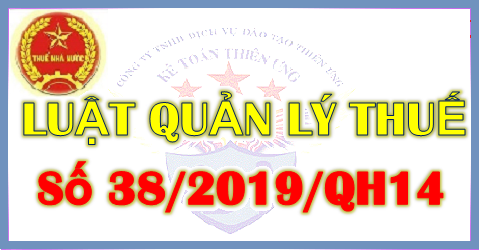

Luật số 38/2019/QH14 ban hành ngày 13/6/2019 - Luật quản lý thuế mới nhất hiện nay. Quy định về việc quản lý các loại thuế, các khoản thu khác thuộc ngân sách nhà nước.
|
QUỐC HỘI -------- |
CỘNG HÒA XÃ HỘI CHỦ NGHĨA VIỆT NAM Độc lập - Tự do - Hạnh phúc --------------- |
| Luật số: 38/2019/QH14 | Hà Nội, ngày 13 tháng 6 năm 2019 |
LUẬT
QUẢN LÝ THUẾ
Căn cứ Hiến pháp nước Cộng hòa xã hội chủ nghĩa Việt Nam;QUẢN LÝ THUẾ
Quốc hội ban hành Luật Quản lý thuế.
Chương I
NHỮNG QUY ĐỊNH CHUNG
Điều 1. Phạm vi điều chỉnhNHỮNG QUY ĐỊNH CHUNG
Luật này quy định việc quản lý các loại thuế, các khoản thu khác thuộc ngân sách nhà nước.
Điều 2. Đối tượng áp dụng
1. Người nộp thuế bao gồm:
a) Tổ chức, hộ gia đình, hộ kinh doanh, cá nhân nộp thuế theo quy định của pháp luật về thuế;
b) Tổ chức, hộ gia đình, hộ kinh doanh, cá nhân nộp các khoản thu khác thuộc ngân sách nhà nước;
c) Tổ chức, cá nhân khấu trừ thuế.
2. Cơ quan quản lý thuế bao gồm:
a) Cơ quan thuế bao gồm Tổng cục Thuế, Cục Thuế, Chi cục Thuế, Chi cục Thuế khu vực;
b) Cơ quan hải quan bao gồm Tổng cục Hải quan, Cục Hải quan, Cục Kiểm tra sau thông quan, Chi cục Hải quan.
3. Công chức quản lý thuế bao gồm công chức thuế, công chức hải quan.
4. Cơ quan nhà nước, tổ chức, cá nhân khác có liên quan.
Điều 3. Giải thích từ ngữ
Trong Luật này, các từ ngữ dưới đây được hiểu như sau:
1. Thuế là một khoản nộp ngân sách nhà nước bắt buộc của tổ chức, hộ gia đình, hộ kinh doanh, cá nhân theo quy định của các luật thuế.
2. Các khoản thu khác thuộc ngân sách nhà nước do cơ quan quản lý thuế quản lý thu bao gồm:
a) Phí và lệ phí theo quy định của Luật Phí và lệ phí;
b) Tiền sử dụng đất nộp ngân sách nhà nước;
c) Tiền thuê đất, thuê mặt nước;
d) Tiền cấp quyền khai thác khoáng sản;
đ) Tiền cấp quyền khai thác tài nguyên nước;
e) Tiền nộp ngân sách nhà nước từ bán tài sản trên đất, chuyển nhượng quyền sử dụng đất theo quy định của Luật Quản lý, sử dụng tài sản công;
g) Tiền thu từ xử phạt vi phạm hành chính theo quy định của pháp luật về xử phạt vi phạm hành chính trong lĩnh vực thuế và hải quan;
h) Tiền chậm nộp và các khoản thu khác theo quy định của pháp luật.
3. Các khoản thu khác thuộc ngân sách nhà nước không do cơ quan quản lý thuế quản lý thu bao gồm:
a) Tiền sử dụng khu vực biển để nhận chìm theo quy định của pháp luật về tài nguyên, môi trường biển và hải đảo;
b) Tiền bảo vệ, phát triển đất trồng lúa theo quy định của pháp luật về đất đai;
c) Tiền thu từ xử phạt vi phạm hành chính theo quy định của pháp luật về xử phạt vi phạm hành chính, trừ lĩnh vực thuế và hải quan;
d) Tiền nộp ngân sách nhà nước theo quy định của pháp luật về quản lý, sử dụng tài sản công từ việc quản lý, sử dụng, khai thác tài sản công vào mục đích kinh doanh, cho thuê, liên doanh, liên kết, sau khi thực hiện nghĩa vụ thuế, phí, lệ phí;
đ) Thu viện trợ;
e) Các khoản thu khác theo quy định của pháp luật.
4. Trụ sở của người nộp thuế là địa điểm người nộp thuế tiến hành một phần hoặc toàn bộ hoạt động kinh doanh, bao gồm trụ sở chính, chi nhánh, cửa hàng, nơi sản xuất, nơi để hàng hóa, nơi để tài sản dùng cho sản xuất, kinh doanh; nơi cư trú hoặc nơi phát sinh nghĩa vụ thuế.
5. Mã số thuế là một dãy số gồm 10 chữ số hoặc 13 chữ số và ký tự khác do cơ quan thuế cấp cho người nộp thuế dùng để quản lý thuế.
6. Kỳ tính thuế là khoảng thời gian để xác định số tiền thuế phải nộp ngân sách nhà nước theo quy định của pháp luật về thuế.
7. Tờ khai thuế là văn bản theo mẫu do Bộ trưởng Bộ Tài chính quy định được người nộp thuế sử dụng để kê khai các thông tin nhằm xác định số tiền thuế phải nộp.
8. Tờ khai hải quan là văn bản theo mẫu do Bộ trưởng Bộ Tài chính quy định được sử dụng làm tờ khai thuế đối với hàng hóa xuất khẩu, nhập khẩu.
9. Hồ sơ thuế là hồ sơ đăng ký thuế, khai thuế, hoàn thuế, miễn thuế, giảm thuế, miễn tiền chậm nộp, không tính tiền chậm nộp, gia hạn nộp thuế, nộp dần tiền thuế nợ, không thu thuế; hồ sơ hải quan; hồ sơ khoanh tiền thuế nợ; hồ sơ xóa nợ tiền thuế, tiền chậm nộp, tiền phạt.
10. Khai quyết toán thuế là việc xác định số tiền thuế phải nộp của năm tính thuế hoặc thời gian từ đầu năm tính thuế đến khi chấm dứt hoạt động phát sinh nghĩa vụ thuế hoặc thời gian từ khi phát sinh đến khi chấm dứt hoạt động phát sinh nghĩa vụ thuế theo quy định của pháp luật.
11. Năm tính thuế được xác định theo năm dương lịch từ ngày 01 tháng 01 đến ngày 31 tháng 12; trường hợp năm tài chính khác năm dương lịch thì năm tính thuế áp dụng theo năm tài chính.
12. Hoàn thành nghĩa vụ nộp thuế là việc nộp đủ số tiền thuế phải nộp, số tiền chậm nộp, tiền phạt vi phạm pháp luật về thuế và các khoản thu khác thuộc ngân sách nhà nước.
13. Cưỡng chế thi hành quyết định hành chính về quản lý thuế là việc áp dụng biện pháp theo quy định của Luật này và quy định khác của pháp luật có liên quan buộc người nộp thuế phải hoàn thành nghĩa vụ nộp thuế.
14. Rủi ro về thuế là nguy cơ không tuân thủ pháp luật của người nộp thuế dẫn đến thất thu ngân sách nhà nước.
15. Quản lý rủi ro trong quản lý thuế là việc áp dụng có hệ thống quy định của pháp luật, các quy trình nghiệp vụ để xác định, đánh giá và phân loại các rủi ro có thể tác động tiêu cực đến hiệu quả, hiệu lực quản lý thuế làm cơ sở để cơ quan quản lý thuế phân bổ nguồn lực hợp lý và áp dụng các biện pháp quản lý hiệu quả.
16. Thoả thuận trước về phương pháp xác định giá tính thuế là thỏa thuận bằng văn bản giữa cơ quan thuế với người nộp thuế hoặc giữa cơ quan thuế với người nộp thuế và cơ quan thuế nước ngoài, vùng lãnh thổ mà Việt Nam đã ký hiệp định tránh đánh thuế hai lần và ngăn ngừa việc trốn lậu thuế đối với thuế thu nhập cho một thời hạn nhất định, trong đó xác định cụ thể các căn cứ tính thuế, phương pháp xác định giá tính thuế hoặc giá tính thuế theo giá thị trường. Thoả thuận trước về phương pháp xác định giá tính thuế được xác lập trước khi người nộp thuế nộp hồ sơ khai thuế.
17. Tiền thuế nợ là tiền thuế và các khoản thu khác thuộc ngân sách nhà nước do cơ quan quản lý thuế quản lý thu mà người nộp thuế chưa nộp ngân sách nhà nước khi hết thời hạn nộp theo quy định.
18. Cơ sở dữ liệu thương mại là hệ thống thông tin tài chính và dữ liệu của doanh nghiệp được tổ chức, sắp xếp và cập nhật do các tổ chức kinh doanh cung cấp cho cơ quan quản lý thuế theo quy định của pháp luật.
19. Thông tin người nộp thuế là thông tin về người nộp thuế và thông tin liên quan đến nghĩa vụ thuế của người nộp thuế do người nộp thuế cung cấp, do cơ quan quản lý thuế thu thập được trong quá trình quản lý thuế.
20. Hệ thống thông tin quản lý thuế bao gồm hệ thống thông tin thống kê, kế toán thuế và các thông tin khác phục vụ công tác quản lý thuế.
21. Các bên có quan hệ liên kết là các bên tham gia trực tiếp hoặc gián tiếp vào việc điều hành, kiểm soát, góp vốn vào doanh nghiệp; các bên cùng chịu sự điều hành, kiểm soát trực tiếp hoặc gián tiếp bởi một tổ chức hoặc cá nhân; các bên cùng có một tổ chức hoặc cá nhân tham gia góp vốn; các doanh nghiệp được điều hành, kiểm soát bởi các cá nhân có mối quan hệ mật thiết trong cùng một gia đình.
22. Giao dịch liên kết là giao dịch giữa các bên có quan hệ liên kết.
23. Giao dịch độc lập là giao dịch giữa các bên không có quan hệ liên kết.
24. Nguyên tắc giao dịch độc lập là nguyên tắc được áp dụng trong kê khai, xác định giá tính thuế đối với người nộp thuế có phát sinh giao dịch liên kết nhằm phản ánh điều kiện giao dịch trong giao dịch liên kết tương đương với điều kiện trong giao dịch độc lập.
25. Nguyên tắc bản chất hoạt động, giao dịch quyết định nghĩa vụ thuế là nguyên tắc được áp dụng trong quản lý thuế nhằm phân tích các giao dịch, hoạt động sản xuất, kinh doanh của người nộp thuế để xác định nghĩa vụ thuế tương ứng với giá trị tạo ra từ bản chất giao dịch, hoạt động sản xuất, kinh doanh đó.
26. Công ty mẹ tối cao của tập đoàn là pháp nhân có vốn chủ sở hữu trực tiếp hoặc gián tiếp tại các pháp nhân khác của một tập đoàn đa quốc gia, không bị sở hữu bởi bất kỳ pháp nhân nào khác và báo cáo tài chính hợp nhất của công ty mẹ tối cao của tập đoàn không được hợp nhất vào bất kỳ báo cáo tài chính của một pháp nhân nào khác trên toàn cầu.
27. Trường hợp bất khả kháng bao gồm:
a) Người nộp thuế bị thiệt hại vật chất do gặp thiên tai, thảm họa, dịch bệnh, hỏa hoạn, tai nạn bất ngờ;
b) Các trường hợp bất khả kháng khác theo quy định của Chính phủ.
Điều 4. Nội dung quản lý thuế
1. Đăng ký thuế, khai thuế, nộp thuế, ấn định thuế.
2. Hoàn thuế, miễn thuế, giảm thuế, không thu thuế.
3. Khoanh tiền thuế nợ; xóa nợ tiền thuế, tiền chậm nộp, tiền phạt; miễn tiền chậm nộp, tiền phạt; không tính tiền chậm nộp; gia hạn nộp thuế; nộp dần tiền thuế nợ.
4. Quản lý thông tin người nộp thuế.
5. Quản lý hóa đơn, chứng từ.
6. Kiểm tra thuế, thanh tra thuế và thực hiện biện pháp phòng, chống, ngăn chặn vi phạm pháp luật về thuế.
7. Cưỡng chế thi hành quyết định hành chính về quản lý thuế.
8. Xử phạt vi phạm hành chính về quản lý thuế.
9. Giải quyết khiếu nại, tố cáo về thuế.
10. Hợp tác quốc tế về thuế.
11. Tuyên truyền, hỗ trợ người nộp thuế.
Điều 5. Nguyên tắc quản lý thuế
1. Mọi tổ chức, hộ gia đình, hộ kinh doanh, cá nhân có nghĩa vụ nộp thuế theo quy định của luật.
2. Cơ quan quản lý thuế, các cơ quan khác của Nhà nước được giao nhiệm vụ quản lý thu thực hiện việc quản lý thuế theo quy định của Luật này và quy định khác của pháp luật có liên quan, bảo đảm công khai, minh bạch, bình đẳng và bảo đảm quyền, lợi ích hợp pháp của người nộp thuế.
3. Cơ quan, tổ chức, cá nhân có trách nhiệm tham gia quản lý thuế theo quy định của pháp luật.
4. Thực hiện cải cách thủ tục hành chính và ứng dụng công nghệ thông tin hiện đại trong quản lý thuế; áp dụng các nguyên tắc quản lý thuế theo thông lệ quốc tế, trong đó có nguyên tắc bản chất hoạt động, giao dịch quyết định nghĩa vụ thuế, nguyên tắc quản lý rủi ro trong quản lý thuế và các nguyên tắc khác phù hợp với điều kiện của Việt Nam.
5. Áp dụng biện pháp ưu tiên khi thực hiện các thủ tục về thuế đối với hàng hóa xuất khẩu, nhập khẩu theo quy định của pháp luật về hải quan và quy định của Chính phủ.
Điều 6. Các hành vi bị nghiêm cấm trong quản lý thuế
1. Thông đồng, móc nối, bao che giữa người nộp thuế và công chức quản lý thuế, cơ quan quản lý thuế để chuyển giá, trốn thuế.
2. Gây phiền hà, sách nhiễu đối với người nộp thuế.
3. Lợi dụng để chiếm đoạt hoặc sử dụng trái phép tiền thuế.
4. Cố tình không kê khai hoặc kê khai thuế không đầy đủ, kịp thời, chính xác về số tiền thuế phải nộp.
5. Cản trở công chức quản lý thuế thi hành công vụ.
6. Sử dụng mã số thuế của người nộp thuế khác để thực hiện hành vi vi phạm pháp luật hoặc cho người khác sử dụng mã số thuế của mình không đúng quy định của pháp luật.
7. Bán hàng hóa, cung cấp dịch vụ không xuất hóa đơn theo quy định của pháp luật, sử dụng hóa đơn không hợp pháp và sử dụng không hợp pháp hóa đơn.
8. Làm sai lệch, sử dụng sai mục đích, truy cập trái phép, phá hủy hệ thống thông tin người nộp thuế.
Điều 7. Đồng tiền khai thuế, nộp thuế
1. Đồng tiền khai thuế, nộp thuế là Đồng Việt Nam, trừ các trường hợp được phép khai thuế, nộp thuế bằng ngoại tệ tự do chuyển đổi.
2. Người nộp thuế hạch toán kế toán bằng ngoại tệ theo quy định của Luật Kế toán phải quy đổi ra Đồng Việt Nam theo tỷ giá giao dịch thực tế tại thời điểm phát sinh giao dịch.
3. Đối với hàng hóa xuất khẩu, nhập khẩu, đồng tiền nộp thuế là Đồng Việt Nam, trừ các trường hợp được phép khai thuế, nộp thuế bằng ngoại tệ tự do chuyển đổi. Tỷ giá tính thuế thực hiện theo quy định của pháp luật về hải quan.
4. Bộ trưởng Bộ Tài chính quy định đồng tiền khai thuế, nộp thuế bằng ngoại tệ tự do chuyển đổi quy định tại khoản 1, khoản 3 và tỷ giá giao dịch thực tế quy định tại khoản 2 Điều này.
Điều 8. Giao dịch điện tử trong lĩnh vực thuế
1. Người nộp thuế, cơ quan quản lý thuế, cơ quan quản lý nhà nước, tổ chức, cá nhân có đủ điều kiện thực hiện giao dịch điện tử trong lĩnh vực thuế phải thực hiện giao dịch điện tử với cơ quan quản lý thuế theo quy định của Luật này và pháp luật về giao dịch điện tử.
2. Người nộp thuế đã thực hiện giao dịch điện tử trong lĩnh vực thuế thì không phải thực hiện phương thức giao dịch khác.
3. Cơ quan quản lý thuế khi tiếp nhận, trả kết quả giải quyết thủ tục hành chính thuế cho người nộp thuế bằng phương thức điện tử phải xác nhận việc hoàn thành giao dịch điện tử của người nộp thuế, bảo đảm quyền của người nộp thuế quy định tại Điều 16 của Luật này.
4. Người nộp thuế phải thực hiện yêu cầu của cơ quan quản lý thuế nêu tại thông báo, quyết định, văn bản điện tử như đối với thông báo, quyết định, văn bản bằng giấy của cơ quan quản lý thuế.
5. Chứng từ điện tử sử dụng trong giao dịch điện tử phải được ký điện tử phù hợp với quy định của pháp luật về giao dịch điện tử.
6. Cơ quan, tổ chức đã kết nối thông tin điện tử với cơ quan quản lý thuế thì phải sử dụng chứng từ điện tử trong quá trình thực hiện giao dịch với cơ quan quản lý thuế; sử dụng chứng từ điện tử do cơ quan quản lý thuế cung cấp để giải quyết các thủ tục hành chính cho người nộp thuế và không được yêu cầu người nộp thuế nộp chứng từ giấy.
7. Cơ quan quản lý thuế tổ chức hệ thống thông tin điện tử có trách nhiệm sau đây:
a) Hướng dẫn, hỗ trợ để người nộp thuế, tổ chức cung cấp dịch vụ về giao dịch điện tử trong lĩnh vực thuế, ngân hàng và các tổ chức liên quan thực hiện giao dịch điện tử trong lĩnh vực thuế;
b) Xây dựng, quản lý, vận hành hệ thống tiếp nhận và xử lý dữ liệu thuế điện tử bảo đảm an ninh, an toàn, bảo mật và liên tục;
c) Xây dựng hệ thống kết nối thông tin, cung cấp thông tin về số tiền thuế đã nộp ngân sách nhà nước, thông tin về tình hình thực hiện nghĩa vụ thuế của người nộp thuế cho các cơ quan, tổ chức, cá nhân có liên quan bằng điện tử để thực hiện các thủ tục hành chính cho người nộp thuế theo quy định;
d) Cập nhật, quản lý, cung cấp các thông tin đăng ký sử dụng giao dịch thuế điện tử của người nộp thuế; xác thực giao dịch điện tử của người nộp thuế cho các cơ quan, tổ chức phối hợp thu ngân sách nhà nước để thực hiện quản lý thuế và quản lý thu ngân sách nhà nước;
đ) Tiếp nhận, trả kết quả giải quyết thủ tục hành chính thuế cho người nộp thuế bằng phương thức điện tử;
e) Trường hợp chứng từ điện tử của người nộp thuế đã được lưu trong cơ sở dữ liệu của cơ quan quản lý thuế thì cơ quan quản lý thuế, công chức quản lý thuế phải thực hiện khai thác, sử dụng dữ liệu trên hệ thống, không được yêu cầu người nộp thuế cung cấp hồ sơ thuế, chứng từ nộp thuế bằng giấy.
8. Bộ trưởng Bộ Tài chính quy định hồ sơ, thủ tục về giao dịch điện tử trong lĩnh vực thuế.
Điều 9. Quản lý rủi ro trong quản lý thuế
1. Cơ quan thuế áp dụng quản lý rủi ro trong đăng ký thuế, khai thuế, nộp thuế, nợ thuế, cưỡng chế thi hành quyết định hành chính về quản lý thuế, hoàn thuế, kiểm tra thuế, thanh tra thuế, quản lý và sử dụng hóa đơn, chứng từ và các nghiệp vụ khác trong quản lý thuế.
2. Cơ quan hải quan áp dụng quản lý rủi ro trong khai thuế, hoàn thuế, không thu thuế, kiểm tra thuế, thanh tra thuế và các nghiệp vụ khác trong quản lý thuế.
3. Áp dụng cơ chế quản lý rủi ro trong quản lý thuế gồm nghiệp vụ thu thập, xử lý thông tin, dữ liệu liên quan đến người nộp thuế; xây dựng tiêu chí quản lý thuế; đánh giá việc tuân thủ pháp luật của người nộp thuế; phân loại mức độ rủi ro trong quản lý thuế và tổ chức thực hiện các biện pháp quản lý thuế phù hợp.
4. Đánh giá việc tuân thủ pháp luật của người nộp thuế và phân loại mức độ rủi ro trong quản lý thuế được quy định như sau:
a) Đánh giá mức độ tuân thủ pháp luật của người nộp thuế được thực hiện dựa trên hệ thống các tiêu chí, thông tin về lịch sử quá trình hoạt động của người nộp thuế, quá trình tuân thủ pháp luật và mối quan hệ hợp tác với cơ quan quản lý thuế trong việc thực hiện pháp luật về thuế và mức độ vi phạm pháp luật về thuế;
b) Phân loại mức độ rủi ro trong quản lý thuế được thực hiện dựa trên mức độ tuân thủ pháp luật của người nộp thuế. Trong quá trình phân loại mức độ rủi ro, cơ quan quản lý thuế xem xét các nội dung có liên quan, gồm thông tin về dấu hiệu rủi ro; dấu hiệu, hành vi vi phạm trong quản lý thuế; thông tin về kết quả hoạt động nghiệp vụ của cơ quan quản lý thuế, cơ quan khác có liên quan theo quy định của Luật này;
c) Cơ quan quản lý thuế sử dụng kết quả đánh giá việc tuân thủ pháp luật của người nộp thuế và kết quả phân loại mức độ rủi ro trong quản lý thuế để áp dụng các biện pháp quản lý thuế phù hợp.
5. Cơ quan quản lý thuế ứng dụng hệ thống công nghệ thông tin để tự động tích hợp, xử lý dữ liệu phục vụ việc áp dụng quản lý rủi ro trong quản lý thuế.
6. Bộ trưởng Bộ Tài chính quy định tiêu chí đánh giá việc tuân thủ pháp luật của người nộp thuế, phân loại mức độ rủi ro và việc áp dụng quản lý rủi ro trong quản lý thuế.
Điều 10. Xây dựng lực lượng quản lý thuế
1. Lực lượng quản lý thuế được xây dựng trong sạch, vững mạnh; được trang bị và làm chủ kỹ thuật hiện đại, hoạt động hiệu lực và hiệu quả.
2. Công chức quản lý thuế là người có đủ điều kiện được tuyển dụng, bổ nhiệm vào ngạch, chức vụ, chức danh trong cơ quan quản lý thuế; được đào tạo, bồi dưỡng và quản lý, sử dụng theo quy định của pháp luật về cán bộ, công chức.
3. Chế độ phục vụ, chức danh, tiêu chuẩn, lương, chế độ đãi ngộ khác, cấp hiệu, trang phục của công chức quản lý thuế được thực hiện theo quy định của pháp luật.
4. Cơ quan quản lý thuế có trách nhiệm đào tạo, xây dựng đội ngũ công chức quản lý thuế để thực hiện chức năng quản lý thuế theo quy định của pháp luật.
Điều 11. Hiện đại hóa công tác quản lý thuế
1. Công tác quản lý thuế được hiện đại hóa về phương pháp quản lý, thủ tục hành chính, bộ máy tổ chức, đội ngũ công chức, viên chức, áp dụng rộng rãi công nghệ thông tin, kỹ thuật hiện đại trên cơ sở dữ liệu thông tin chính xác về người nộp thuế để kiểm soát được tất cả đối tượng chịu thuế, căn cứ tính thuế; bảo đảm dự báo nhanh, chính xác số thu của ngân sách nhà nước; phát hiện và xử lý kịp thời các vướng mắc, vi phạm pháp luật về thuế; nâng cao hiệu lực, hiệu quả công tác quản lý thuế. Căn cứ vào tình hình phát triển kinh tế - xã hội trong từng thời kỳ, Nhà nước bảo đảm các nguồn lực tài chính để thực hiện nội dung quy định tại khoản này.
2. Nhà nước tạo điều kiện cho các tổ chức, cá nhân tham gia phát triển công nghệ và phương tiện kỹ thuật tiên tiến để áp dụng phương pháp quản lý thuế hiện đại, thực hiện giao dịch điện tử và quản lý thuế điện tử; đẩy mạnh phát triển các dịch vụ thanh toán thông qua hệ thống ngân hàng thương mại, tổ chức tín dụng khác để từng bước hạn chế các giao dịch thanh toán bằng tiền mặt của người nộp thuế.
3. Cơ quan quản lý thuế xây dựng hệ thống công nghệ thông tin đáp ứng yêu cầu hiện đại hóa công tác quản lý thuế, tiêu chuẩn kỹ thuật, định dạng dữ liệu về hóa đơn, chứng từ điện tử, hồ sơ thuế để thực hiện giao dịch điện tử giữa người nộp thuế với cơ quan quản lý thuế và giữa cơ quan quản lý thuế với cơ quan, tổ chức, cá nhân có liên quan.
Điều 12. Hợp tác quốc tế về thuế của cơ quan quản lý thuế
Trong phạm vi nhiệm vụ, quyền hạn của mình, cơ quan quản lý thuế có trách nhiệm sau đây:
1. Tham mưu giúp Bộ trưởng Bộ Tài chính đề xuất đàm phán, ký kết và thực hiện quyền, nghĩa vụ và bảo đảm lợi ích của nước Cộng hòa xã hội chủ nghĩa Việt Nam theo các điều ước quốc tế mà nước Cộng hòa xã hội chủ nghĩa Việt Nam là thành viên;
2. Đàm phán, ký kết và tổ chức thực hiện thỏa thuận song phương, đa phương với cơ quan quản lý thuế nước ngoài;
3. Tổ chức khai thác, trao đổi thông tin và hợp tác nghiệp vụ với cơ quan quản lý thuế nước ngoài, các tổ chức quốc tế có liên quan. Trao đổi thông tin về người nộp thuế, thông tin về các bên liên kết với cơ quan thuế nước ngoài phục vụ công tác quản lý thuế đối với giao dịch liên kết;
4. Thực hiện các biện pháp hỗ trợ thu thuế theo các điều ước quốc tế mà nước Cộng hòa xã hội chủ nghĩa Việt Nam là thành viên bao gồm:
a) Đề nghị cơ quan quản lý thuế nước ngoài và các cơ quan có thẩm quyền thực hiện hỗ trợ thu thuế tại nước ngoài đối với các khoản nợ thuế tại Việt Nam mà người nộp thuế có nghĩa vụ phải nộp khi người nộp thuế không còn ở Việt Nam;
b) Thực hiện hỗ trợ thu thuế theo đề nghị của cơ quan quản lý thuế nước ngoài đối với các khoản nợ thuế phải nộp tại nước ngoài của người nộp thuế tại Việt Nam bằng biện pháp đôn đốc thu nợ thuế theo quy định của Luật này và phù hợp với thực tiễn quản lý thuế của Việt Nam.
Điều 13. Kế toán, thống kê về thuế
1. Cơ quan quản lý thuế thực hiện hạch toán kế toán tiền thuế, tiền chậm nộp, tiền phạt và các khoản thu khác thuộc ngân sách nhà nước do cơ quan quản lý thuế phải thu, đã thu, miễn, giảm, xóa nợ, không thu thuế, hoàn trả theo quy định của pháp luật về kế toán và pháp luật về ngân sách nhà nước.
2. Cơ quan quản lý thuế thực hiện thống kê số tiền thuế được ưu đãi, miễn, giảm và các thông tin thống kê khác về thuế, người nộp thuế theo quy định của pháp luật về thống kê và pháp luật về thuế.
3. Hằng năm, cơ quan quản lý thuế nộp báo cáo kế toán, thống kê về thuế cho cơ quan có thẩm quyền và thực hiện công khai thông tin theo quy định của pháp luật.
Chương II
NHIỆM VỤ, QUYỀN HẠN VÀ TRÁCH NHIỆM CỦA CƠ QUAN, TỔ CHỨC, CÁ NHÂN TRONG QUẢN LÝ THUẾ
NHIỆM VỤ, QUYỀN HẠN VÀ TRÁCH NHIỆM CỦA CƠ QUAN, TỔ CHỨC, CÁ NHÂN TRONG QUẢN LÝ THUẾ
Điều 14. Nhiệm vụ, quyền hạn của Chính phủ
1. Thống nhất quản lý nhà nước về quản lý thuế, bảo đảm sự phối hợp chặt chẽ giữa cơ quan quản lý ngành và địa phương trong quản lý thuế.
2. Gia hạn nộp thuế cho các đối tượng, ngành, nghề sản xuất, kinh doanh trong trường hợp khó khăn đặc biệt trong từng thời kỳ nhất định.
3. Báo cáo Quốc hội, Ủy ban Thường vụ Quốc hội, Chủ tịch nước về tình hình quản lý thuế theo yêu cầu.
Điều 15. Nhiệm vụ, quyền hạn, trách nhiệm của Bộ, cơ quan ngang Bộ, cơ quan thuộc Chính phủ
1. Bộ Tài chính là cơ quan chủ trì giúp Chính phủ thống nhất quản lý nhà nước về quản lý thuế và có nhiệm vụ, quyền hạn sau đây:
a) Ban hành theo thẩm quyền hoặc trình cấp có thẩm quyền ban hành văn bản quy phạm pháp luật về quản lý thuế;
b) Tổ chức việc thực hiện quản lý thuế theo quy định của Luật này và quy định khác của pháp luật có liên quan;
c) Tổ chức việc lập và thực hiện dự toán thu ngân sách nhà nước;
d) Tổ chức kiểm tra, thanh tra việc thực hiện pháp luật về thuế và quy định khác của pháp luật có liên quan;
đ) Xử lý vi phạm pháp luật và giải quyết khiếu nại, tố cáo liên quan đến việc thực hiện pháp luật về thuế theo thẩm quyền;
e) Tổ chức thực hiện hợp tác quốc tế về thuế;
g) Phối hợp với Bộ Kế hoạch và Đầu tư và Bộ khác có liên quan hướng dẫn việc thực hiện giám định độc lập về giá trị của máy móc, thiết bị, dây chuyền công nghệ theo quy định của Luật Đầu tư.
2. Bộ Công an có trách nhiệm sau đây:
a) Kết nối, tiếp nhận thông tin với cơ quan quản lý thuế về việc hoàn thành nghĩa vụ nộp thuế đối với phương tiện giao thông cơ giới đường bộ khi đăng ký quyền sở hữu, quyền sử dụng theo quy định của pháp luật;
b) Tổ chức tiếp nhận, xử lý, giải quyết tin báo, tố giác tội phạm và kiến nghị khởi tố, tiếp nhận các hồ sơ do cơ quan quản lý thuế phát hiện hành vi vi phạm có dấu hiệu tội phạm trong lĩnh vực thuế chuyển đến, tiến hành điều tra, xử lý tội phạm trong lĩnh vực thuế theo quy định của pháp luật; trường hợp không khởi tố vụ án hình sự hoặc đình chỉ điều tra vụ án thì thông báo bằng văn bản cho cơ quan quản lý thuế biết rõ lý do và chuyển hồ sơ cho cơ quan quản lý thuế giải quyết theo thẩm quyền.
3. Bộ Công Thương có trách nhiệm sau đây:
a) Chỉ đạo, hướng dẫn các cơ quan chức năng trong việc kết nối, cung cấp thông tin liên quan để phối hợp với Bộ Tài chính trong quản lý thuế đối với các tổ chức, cá nhân hoạt động thương mại điện tử, nhượng quyền thương mại và các hoạt động liên quan;
b) Chỉ đạo, hướng dẫn các cơ quan chức năng phối hợp với cơ quan quản lý thuế thực hiện quy định của pháp luật về kinh doanh hàng hóa, dịch vụ thương mại trên thị trường và lĩnh vực khác theo quy định của pháp luật.
4. Bộ Thông tin và Truyền thông có trách nhiệm sau đây:
a) Chỉ đạo, hướng dẫn các cơ quan chức năng phối hợp với cơ quan quản lý thuế để quản lý thuế đối với hoạt động cung cấp, sử dụng dịch vụ Internet, thông tin trên mạng, trò chơi điện tử trên mạng;
b) Chỉ đạo, hướng dẫn các cơ quan chức năng trong việc kết nối, cung cấp thông tin liên quan với cơ quan quản lý thuế đối với tổ chức, cá nhân trực tiếp tham gia hoặc có liên quan đến việc quản lý, cung cấp, sử dụng dịch vụ Internet, thông tin trên mạng, trò chơi điện tử trên mạng.
5. Ngân hàng Nhà nước Việt Nam có trách nhiệm sau đây:
a) Chỉ đạo, hướng dẫn các tổ chức tín dụng trong việc kết nối, cung cấp thông tin với cơ quan quản lý thuế liên quan đến giao dịch qua ngân hàng của tổ chức, cá nhân và phối hợp với cơ quan quản lý thuế thực hiện biện pháp cưỡng chế theo quy định của Luật này;
b) Xây dựng và phát triển hệ thống thanh toán thương mại điện tử quốc gia, các tiện ích tích hợp thanh toán điện tử để sử dụng rộng rãi cho các mô hình thương mại điện tử;
c) Thiết lập cơ chế quản lý, giám sát các giao dịch thanh toán hỗ trợ công tác quản lý thuế đối với hoạt động cung cấp dịch vụ xuyên biên giới trong thương mại điện tử.
6. Bộ Kế hoạch và Đầu tư có trách nhiệm sau đây:
a) Chỉ đạo, hướng dẫn các cơ quan chức năng phối hợp với cơ quan quản lý thuế trong việc cấp, thu hồi giấy chứng nhận đăng ký doanh nghiệp, giấy chứng nhận đăng ký kinh doanh, giấy chứng nhận đăng ký đầu tư, giấy chứng nhận đăng ký thuế và các giấy chứng nhận đăng ký khác của người nộp thuế theo cơ chế một cửa liên thông;
b) Chỉ đạo, hướng dẫn các cơ quan chức năng tăng cường công tác thẩm định dự án đầu tư nhằm ngăn chặn tình trạng chuyển giá, tránh thuế;
c) Chỉ đạo, hướng dẫn các cơ quan chức năng tăng cường công tác thanh tra, kiểm tra, giám định chất lượng, giá trị máy móc, thiết bị, công nghệ được sử dụng trong quá trình hoạt động của dự án đầu tư;
d) Chỉ đạo, hướng dẫn các cơ quan chức năng phối hợp với cơ quan quản lý thuế trong việc thực hiện quy định của pháp luật về ưu đãi đầu tư phù hợp với quy định của pháp luật về thuế.
7. Bộ Tài nguyên và Môi trường có trách nhiệm sau đây:
a) Chỉ đạo, hướng dẫn các cơ quan chức năng phối hợp với cơ quan quản lý thuế trong việc quản lý các khoản thu liên quan đến đất đai, tài sản gắn liền với đất và tài nguyên khoáng sản;
b) Cung cấp thông tin người nộp thuế do cơ quan tài nguyên, môi trường quản lý có liên quan đến công tác quản lý thuế theo yêu cầu của cơ quan quản lý thuế.
8. Bộ Giao thông vận tải có trách nhiệm sau đây:
a) Chỉ đạo, hướng dẫn các cơ quan chức năng trong việc kết nối, cung cấp thông tin liên quan đến quản lý thuế đối với doanh nghiệp, cá nhân hoạt động trong lĩnh vực vận tải hàng hóa, hành khách;
b) Kết nối, cung cấp thông tin về tiêu chí kỹ thuật liên quan đến quản lý thu đối với tài sản là phương tiện phải đăng ký quyền sở hữu, quyền sử dụng.
9. Bộ Lao động - Thương binh và Xã hội có trách nhiệm chỉ đạo, hướng dẫn các cơ quan chức năng trong việc kết nối, cung cấp thông tin với cơ quan quản lý thuế liên quan đến việc cấp phép cho người lao động nước ngoài làm việc ở Việt Nam và người lao động Việt Nam đi làm việc ở nước ngoài.
10. Bộ Y tế có trách nhiệm chỉ đạo, hướng dẫn các cơ quan chức năng phối hợp với cơ quan quản lý thuế trong việc kết nối, cung cấp thông tin của các cơ sở kinh doanh dược, cơ sở khám bệnh, chữa bệnh.
11. Bộ, cơ quan ngang Bộ, cơ quan thuộc Chính phủ có trách nhiệm phối hợp với Bộ Tài chính thực hiện nhiệm vụ quản lý nhà nước về quản lý thuế theo quy định của Chính phủ.
Điều 16. Quyền của người nộp thuế
1. Được hỗ trợ, hướng dẫn thực hiện việc nộp thuế; cung cấp thông tin, tài liệu để thực hiện nghĩa vụ, quyền lợi về thuế.
2. Được nhận văn bản liên quan đến nghĩa vụ thuế của các cơ quan chức năng khi tiến hành thanh tra, kiểm tra, kiểm toán.
3. Yêu cầu cơ quan quản lý thuế giải thích về việc tính thuế, ấn định thuế; yêu cầu giám định số lượng, chất lượng, chủng loại hàng hóa xuất khẩu, nhập khẩu.
4. Được giữ bí mật thông tin, trừ các thông tin phải cung cấp cho cơ quan nhà nước có thẩm quyền hoặc thông tin công khai về thuế theo quy định của pháp luật.
5. Hưởng các ưu đãi về thuế, hoàn thuế theo quy định của pháp luật về thuế; được biết thời hạn giải quyết hoàn thuế, số tiền thuế không được hoàn và căn cứ pháp lý đối với số tiền thuế không được hoàn.
6. Ký hợp đồng với tổ chức kinh doanh dịch vụ làm thủ tục về thuế, đại lý làm thủ tục hải quan để thực hiện dịch vụ đại lý thuế, đại lý làm thủ tục hải quan.
7. Được nhận quyết định xử lý về thuế, biên bản kiểm tra thuế, thanh tra thuế, được yêu cầu giải thích nội dung quyết định xử lý về thuế; được bảo lưu ý kiến trong biên bản kiểm tra thuế, thanh tra thuế; được nhận văn bản kết luận kiểm tra thuế, thanh tra thuế, quyết định xử lý về thuế sau thanh tra, kiểm tra của cơ quan quản lý thuế.
8. Được bồi thường thiệt hại do cơ quan quản lý thuế, công chức quản lý thuế gây ra theo quy định của pháp luật.
9. Yêu cầu cơ quan quản lý thuế xác nhận việc thực hiện nghĩa vụ nộp thuế của mình.
10. Khiếu nại, khởi kiện quyết định hành chính, hành vi hành chính liên quan đến quyền và lợi ích hợp pháp của mình.
11. Không bị xử phạt vi phạm hành chính về thuế, không tính tiền chậm nộp đối với trường hợp do người nộp thuế thực hiện theo văn bản hướng dẫn và quyết định xử lý của cơ quan thuế, cơ quan nhà nước có thẩm quyền liên quan đến nội dung xác định nghĩa vụ thuế của người nộp thuế.
12. Tố cáo hành vi vi phạm pháp luật của công chức quản lý thuế và tổ chức, cá nhân khác theo quy định của pháp luật về tố cáo.
13. Được tra cứu, xem, in toàn bộ chứng từ điện tử mà mình đã gửi đến cổng thông tin điện tử của cơ quan quản lý thuế theo quy định của Luật này và pháp luật về giao dịch điện tử.
14. Được sử dụng chứng từ điện tử trong giao dịch với cơ quan quản lý thuế và cơ quan, tổ chức có liên quan.
Điều 17. Trách nhiệm của người nộp thuế
1. Thực hiện đăng ký thuế, sử dụng mã số thuế theo quy định của pháp luật.
2. Khai thuế chính xác, trung thực, đầy đủ và nộp hồ sơ thuế đúng thời hạn; chịu trách nhiệm trước pháp luật về tính chính xác, trung thực, đầy đủ của hồ sơ thuế.
3. Nộp tiền thuế, tiền chậm nộp, tiền phạt đầy đủ, đúng thời hạn, đúng địa điểm.
4. Chấp hành chế độ kế toán, thống kê và quản lý, sử dụng hóa đơn, chứng từ theo quy định của pháp luật.
5. Ghi chép chính xác, trung thực, đầy đủ những hoạt động phát sinh nghĩa vụ thuế, khấu trừ thuế và giao dịch phải kê khai thông tin về thuế.
6. Lập và giao hóa đơn, chứng từ cho người mua theo đúng số lượng, chủng loại, giá trị thực thanh toán khi bán hàng hóa, cung cấp dịch vụ theo quy định của pháp luật.
7. Cung cấp chính xác, đầy đủ, kịp thời thông tin, tài liệu liên quan đến việc xác định nghĩa vụ thuế, bao gồm cả thông tin về giá trị đầu tư; số hiệu và nội dung giao dịch của tài khoản được mở tại ngân hàng thương mại, tổ chức tín dụng khác; giải thích việc tính thuế, khai thuế, nộp thuế theo yêu cầu của cơ quan quản lý thuế.
8. Chấp hành quyết định, thông báo, yêu cầu của cơ quan quản lý thuế, công chức quản lý thuế theo quy định của pháp luật.
9. Chịu trách nhiệm thực hiện nghĩa vụ thuế theo quy định của pháp luật trong trường hợp người đại diện theo pháp luật hoặc đại diện theo ủy quyền thay mặt người nộp thuế thực hiện thủ tục về thuế sai quy định.
10. Người nộp thuế thực hiện hoạt động kinh doanh tại địa bàn có cơ sở hạ tầng về công nghệ thông tin phải thực hiện kê khai, nộp thuế, giao dịch với cơ quan quản lý thuế thông qua phương tiện điện tử theo quy định của pháp luật.
11. Căn cứ tình hình thực tế và điều kiện trang bị công nghệ thông tin, Chính phủ quy định chi tiết việc người nộp thuế không phải nộp các chứng từ trong hồ sơ khai, nộp thuế, hồ sơ hoàn thuế và các hồ sơ thuế khác mà cơ quan quản lý nhà nước đã có.
12. Xây dựng, quản lý, vận hành hệ thống hạ tầng kỹ thuật bảo đảm việc thực hiện giao dịch điện tử với cơ quan quản lý thuế, áp dụng kết nối thông tin liên quan đến việc thực hiện nghĩa vụ thuế với cơ quan quản lý thuế.
13. Người nộp thuế có phát sinh giao dịch liên kết có nghĩa vụ lập, lưu trữ, kê khai, cung cấp hồ sơ thông tin về người nộp thuế và các bên liên kết của người nộp thuế bao gồm cả thông tin về các bên liên kết cư trú tại các quốc gia, vùng lãnh thổ ngoài Việt Nam theo quy định của Chính phủ.
Điều 18. Nhiệm vụ của cơ quan quản lý thuế
1. Tổ chức thực hiện quản lý thu thuế và các khoản thu khác thuộc ngân sách nhà nước theo quy định của pháp luật về thuế và quy định khác của pháp luật có liên quan.
2. Tuyên truyền, phổ biến, hướng dẫn pháp luật về thuế; công khai các thủ tục về thuế tại trụ sở, trang thông tin điện tử của cơ quan quản lý thuế và trên các phương tiện thông tin đại chúng.
3. Giải thích, cung cấp thông tin liên quan đến việc xác định nghĩa vụ thuế cho người nộp thuế; cơ quan thuế có trách nhiệm công khai mức thuế phải nộp của hộ kinh doanh, cá nhân kinh doanh trên địa bàn xã, phường, thị trấn.
4. Bảo mật thông tin của người nộp thuế, trừ các thông tin cung cấp cho cơ quan có thẩm quyền hoặc thông tin được công bố công khai theo quy định của pháp luật.
5. Thực hiện việc miễn thuế; giảm thuế; xóa nợ tiền thuế, tiền chậm nộp, tiền phạt; miễn tiền chậm nộp, tiền phạt; không tính tiền chậm nộp; gia hạn nộp thuế; nộp dần tiền thuế nợ; khoanh tiền thuế nợ, không thu thuế; xử lý tiền thuế, tiền chậm nộp, tiền phạt nộp thừa; hoàn thuế theo quy định của Luật này và quy định khác của pháp luật có liên quan.
6. Xác nhận việc thực hiện nghĩa vụ thuế của người nộp thuế khi có đề nghị theo quy định của pháp luật.
7. Giải quyết khiếu nại, tố cáo liên quan đến việc thực hiện pháp luật về thuế theo thẩm quyền.
8. Giao biên bản, kết luận, quyết định xử lý về thuế sau kiểm tra thuế, thanh tra thuế cho người nộp thuế và giải thích khi có yêu cầu.
9. Bồi thường thiệt hại cho người nộp thuế theo quy định của pháp luật về trách nhiệm bồi thường của Nhà nước.
10. Giám định để xác định số tiền thuế phải nộp của người nộp thuế theo trưng cầu, yêu cầu của cơ quan nhà nước có thẩm quyền.
11. Xây dựng, tổ chức hệ thống thông tin điện tử và ứng dụng công nghệ thông tin để thực hiện giao dịch điện tử trong lĩnh vực thuế.
Điều 19. Quyền hạn của cơ quan quản lý thuế
1. Yêu cầu người nộp thuế cung cấp thông tin, tài liệu liên quan đến việc xác định nghĩa vụ thuế, bao gồm cả thông tin về giá trị đầu tư; số hiệu, nội dung giao dịch của các tài khoản được mở tại ngân hàng thương mại, tổ chức tín dụng khác và giải thích việc tính thuế, khai thuế, nộp thuế.
2. Yêu cầu tổ chức, cá nhân có liên quan cung cấp thông tin, tài liệu liên quan đến việc xác định nghĩa vụ thuế và phối hợp với cơ quan quản lý thuế để thực hiện pháp luật về thuế.
3. Kiểm tra thuế, thanh tra thuế theo quy định của pháp luật.
4. Ấn định thuế.
5. Cưỡng chế thi hành quyết định hành chính về quản lý thuế.
6. Xử phạt vi phạm hành chính về quản lý thuế theo thẩm quyền; công khai trên phương tiện thông tin đại chúng các trường hợp vi phạm pháp luật về thuế.
7. Áp dụng biện pháp ngăn chặn và bảo đảm việc xử phạt vi phạm hành chính về quản lý thuế theo quy định của pháp luật.
8. Ủy nhiệm cho cơ quan, tổ chức, cá nhân thu một số loại thuế theo quy định của Chính phủ.
9. Cơ quan thuế áp dụng cơ chế thỏa thuận trước về phương pháp xác định giá tính thuế với người nộp thuế, với cơ quan thuế nước ngoài, vùng lãnh thổ mà Việt Nam đã ký hiệp định tránh đánh thuế hai lần và ngăn ngừa việc trốn lậu thuế đối với thuế thu nhập.
10. Mua thông tin, tài liệu, dữ liệu của các đơn vị cung cấp trong nước và ngoài nước để phục vụ công tác quản lý thuế; chi trả chi phí ủy nhiệm thu thuế từ tiền thuế thu được hoặc từ nguồn kinh phí của cơ quan quản lý thuế theo quy định của Chính phủ.
Điều 20. Nhiệm vụ, quyền hạn của Hội đồng nhân dân, Ủy ban nhân dân các cấp
1. Hội đồng nhân dân các cấp, trong phạm vi nhiệm vụ, quyền hạn của mình, quyết định nhiệm vụ thu ngân sách hằng năm và giám sát việc thực hiện pháp luật về thuế tại địa phương.
2. Ủy ban nhân dân các cấp, trong phạm vi nhiệm vụ, quyền hạn của mình, có trách nhiệm sau đây:
a) Chỉ đạo các cơ quan có liên quan tại địa phương phối hợp với cơ quan quản lý thuế lập dự toán và tổ chức thực hiện nhiệm vụ thu thuế, các khoản thu khác thuộc ngân sách nhà nước trên địa bàn;
b) Phối hợp với Bộ Tài chính, cơ quan quản lý thuế và cơ quan khác có thẩm quyền trong việc quản lý, thực hiện pháp luật về thuế;
c) Xử phạt vi phạm hành chính và giải quyết khiếu nại, tố cáo liên quan đến việc thực hiện pháp luật về thuế theo thẩm quyền.
Điều 21. Nhiệm vụ, quyền hạn của Kiểm toán nhà nước
1. Thực hiện kiểm toán hoạt động đối với cơ quan quản lý thuế theo quy định của pháp luật về kiểm toán nhà nước, pháp luật về thuế và quy định khác của pháp luật có liên quan.
2. Đối với kiến nghị của Kiểm toán nhà nước liên quan đến việc thực hiện nghĩa vụ thuế của người nộp thuế được quy định như sau:
a) Trường hợp Kiểm toán nhà nước trực tiếp kiểm toán người nộp thuế theo quy định của Luật Kiểm toán nhà nước có nội dung kiến nghị về nghĩa vụ nộp ngân sách nhà nước thì Kiểm toán nhà nước phải gửi biên bản hoặc báo cáo kiểm toán cho người nộp thuế và người nộp thuế có trách nhiệm thực hiện kiến nghị theo báo cáo kiểm toán của Kiểm toán nhà nước. Trường hợp người nộp thuế không đồng ý với kiến nghị của Kiểm toán nhà nước thì người nộp thuế có quyền khiếu nại kiến nghị của Kiểm toán nhà nước;
b) Trường hợp Kiểm toán nhà nước không trực tiếp kiểm toán đối với người nộp thuế mà thực hiện kiểm toán tại cơ quan quản lý thuế có nội dung kiến nghị nêu trong báo cáo kiểm toán liên quan đến nghĩa vụ thuế của người nộp thuế thì Kiểm toán nhà nước gửi bản trích sao có kiến nghị liên quan đến nghĩa vụ thuế cho người nộp thuế để thực hiện. Cơ quan quản lý thuế có trách nhiệm tổ chức thực hiện kiến nghị của Kiểm toán nhà nước. Trường hợp người nộp thuế không đồng ý với nghĩa vụ thuế phải nộp thì người nộp thuế có văn bản đề nghị cơ quan quản lý thuế, Kiểm toán nhà nước xem xét lại nghĩa vụ thuế phải nộp. Căn cứ đề nghị của người nộp thuế, Kiểm toán nhà nước chủ trì, phối hợp với cơ quan quản lý thuế thực hiện việc xác định chính xác nghĩa vụ thuế của người nộp thuế và chịu trách nhiệm theo quy định của pháp luật.
Điều 22. Nhiệm vụ, quyền hạn của Thanh tra nhà nước
1. Thực hiện thanh tra hoạt động của cơ quan quản lý thuế theo quy định của pháp luật về thanh tra, pháp luật về thuế và quy định khác của pháp luật có liên quan.
2. Đối với kết luận của Thanh tra nhà nước liên quan đến nghĩa vụ thuế phải nộp của người nộp thuế được quy định như sau:
a) Trường hợp Thanh tra nhà nước trực tiếp thanh tra người nộp thuế theo quy định của Luật Thanh tra có nội dung kết luận về nghĩa vụ nộp ngân sách nhà nước thì Thanh tra nhà nước phải gửi biên bản hoặc kết luận cho người nộp thuế và người nộp thuế có trách nhiệm thực hiện kết luận của Thanh tra. Trường hợp người nộp thuế không đồng ý với kết luận của Thanh tra nhà nước thì người nộp thuế có quyền khiếu nại kết luận của Thanh tra nhà nước;
b) Trường hợp Thanh tra nhà nước không trực tiếp thanh tra đối với người nộp thuế mà thực hiện thanh tra tại cơ quan quản lý thuế có nội dung kiến nghị nêu trong kết luận thanh tra liên quan đến nghĩa vụ thuế của người nộp thuế thì Thanh tra nhà nước gửi bản trích sao có kết luận liên quan đến nghĩa vụ thuế cho người nộp thuế để thực hiện. Cơ quan quản lý thuế có trách nhiệm tổ chức thực hiện kết luận của Thanh tra nhà nước. Trường hợp người nộp thuế không đồng ý với nghĩa vụ thuế phải nộp thì người nộp thuế có văn bản đề nghị cơ quan quản lý thuế, Thanh tra nhà nước xem xét lại nghĩa vụ thuế phải nộp. Căn cứ đề nghị của người nộp thuế, Thanh tra nhà nước chủ trì, phối hợp với cơ quan quản lý thuế thực hiện việc xác định chính xác nghĩa vụ thuế của người nộp thuế và chịu trách nhiệm theo quy định của pháp luật.
Điều 23. Nhiệm vụ, quyền hạn của cơ quan điều tra, Viện kiểm sát, Tòa án
Cơ quan điều tra, Viện kiểm sát, Tòa án, trong phạm vi nhiệm vụ, quyền hạn của mình, có trách nhiệm tiếp nhận, xử lý, giải quyết tin báo, tố giác tội phạm và kiến nghị khởi tố, khởi tố, điều tra, truy tố, xét xử kịp thời, nghiêm minh tội phạm trong lĩnh vực thuế theo quy định của pháp luật và thông báo kết quả xử lý cho cơ quan quản lý thuế.
Điều 24. Nhiệm vụ, quyền hạn của Mặt trận Tổ quốc Việt Nam
1. Mặt trận Tổ quốc Việt Nam tuyên truyền, vận động các tầng lớp nhân dân nghiêm chỉnh thi hành pháp luật về thuế.
2. Mặt trận Tổ quốc Việt Nam thực hiện giám sát, phản biện xã hội về thuế; phản ánh, kiến nghị với cơ quan nhà nước xem xét, giải quyết các vấn đề về thuế theo quy định của pháp luật.
Điều 25. Nhiệm vụ, quyền hạn của tổ chức chính trị xã hội - nghề nghiệp, tổ chức xã hội, tổ chức xã hội - nghề nghiệp
1. Tổ chức chính trị xã hội - nghề nghiệp, tổ chức xã hội, tổ chức xã hội - nghề nghiệp phối hợp với cơ quan quản lý thuế trong việc tuyên truyền, phổ biến, giáo dục pháp luật về thuế đến các hội viên.
2. Tổ chức chính trị xã hội - nghề nghiệp, tổ chức xã hội, tổ chức xã hội - nghề nghiệp phối hợp với cơ quan quản lý thuế trong việc cung cấp thông tin liên quan đến việc quản lý thuế.
Điều 26. Nhiệm vụ, quyền hạn của cơ quan thông tin, báo chí
1. Cơ quan thông tin, báo chí tuyên truyền, phổ biến chính sách, pháp luật về thuế, nêu gương tổ chức, cá nhân thực hiện tốt pháp luật về thuế, phản ánh và phê phán các hành vi vi phạm pháp luật về thuế.
2. Cơ quan thông tin, báo chí phối hợp với các cơ quan quản lý thuế trong việc đăng tải, cung cấp thông tin theo quy định của pháp luật.
Điều 27. Nhiệm vụ, quyền hạn của ngân hàng thương mại
1. Ngân hàng thương mại khi tham gia phối hợp thu thuế và thu các khoản thu khác thuộc ngân sách nhà nước có trách nhiệm sau đây:
a) Phối hợp với cơ quan quản lý thuế, Kho bạc Nhà nước trong việc thực hiện nộp thuế điện tử, hoàn thuế điện tử cho người nộp thuế; xử lý, đối soát dữ liệu về nộp thuế điện tử, hoàn thuế điện tử;
b) Truyền, nhận thông tin chứng từ nộp thuế điện tử, chuyển tiền thanh toán các khoản thu ngân sách nhà nước cho Kho bạc Nhà nước đầy đủ, chính xác, kịp thời theo đúng quy định của pháp luật;
c) Hỗ trợ người nộp thuế trong quá trình thực hiện nộp thuế điện tử;
d) Bảo mật thông tin của người nộp thuế, người khai hải quan theo quy định của pháp luật.
2. Cung cấp thông tin về số hiệu tài khoản theo mã số thuế của người nộp thuế khi mở tài khoản.
3. Khấu trừ, nộp thay nghĩa vụ thuế phải nộp theo quy định pháp luật về thuế của tổ chức, cá nhân ở nước ngoài có hoạt động kinh doanh thương mại điện tử có phát sinh thu nhập từ Việt Nam.
4. Trích tiền để nộp thuế từ tài khoản của người nộp thuế, phong tỏa tài khoản của người nộp thuế bị cưỡng chế thi hành quyết định hành chính về quản lý thuế theo đề nghị của cơ quan quản lý thuế.
5. Trường hợp người nộp thuế có bảo lãnh về tiền thuế, tiền chậm nộp, tiền phạt và các khoản thu khác thuộc ngân sách nhà nước theo quy định của Luật này nhưng người nộp thuế không nộp đúng thời hạn thì ngân hàng bảo lãnh phải chịu trách nhiệm nộp tiền thuế, tiền chậm nộp, tiền phạt và các khoản thu khác thuộc ngân sách nhà nước thay cho người nộp thuế trong phạm vi bảo lãnh.
6. Chính phủ quy định chi tiết Điều này.
Điều 28. Hội đồng tư vấn thuế xã, phường, thị trấn
1. Chủ tịch Ủy ban nhân dân cấp huyện căn cứ số lượng, quy mô kinh doanh của các hộ kinh doanh, cá nhân kinh doanh trên địa bàn để quyết định thành lập Hội đồng tư vấn thuế xã, phường, thị trấn theo đề nghị của Chi cục trưởng Chi cục Thuế, Chi cục trưởng Chi cục Thuế khu vực.
2. Hội đồng tư vấn thuế xã, phường, thị trấn có nhiệm vụ tư vấn cho cơ quan thuế về doanh thu, mức thuế của các hộ kinh doanh, cá nhân kinh doanh nộp thuế theo phương pháp khoán trên địa bàn và phối hợp với cơ quan thuế đôn đốc các hộ kinh doanh, cá nhân kinh doanh thực hiện nghĩa vụ thuế theo quy định của pháp luật.
3. Kinh phí hoạt động của Hội đồng tư vấn thuế xã, phường, thị trấn do cơ quan thuế chi từ nguồn ngân sách nhà nước cấp cho ngành thuế.
4. Bộ trưởng Bộ Tài chính quy định về hoạt động, quyền hạn, trách nhiệm của Hội đồng tư vấn thuế xã, phường, thị trấn.
Điều 29. Nhiệm vụ, quyền hạn của tổ chức, cá nhân khác
1. Cung cấp thông tin liên quan đến việc xác định nghĩa vụ thuế theo đề nghị của cơ quan quản lý thuế.
2. Phối hợp với cơ quan quản lý thuế trong việc thực hiện các quyết định xử phạt vi phạm hành chính về quản lý thuế.
3. Tố giác hành vi vi phạm pháp luật về thuế đến cơ quan quản lý thuế hoặc cơ quan nhà nước có thẩm quyền.
4. Yêu cầu người bán hàng, người cung cấp dịch vụ phải giao hóa đơn, chứng từ bán hàng hóa, dịch vụ đúng số lượng, chủng loại, giá trị thực thanh toán khi mua hàng hóa, dịch vụ.
Chương III
ĐĂNG KÝ THUẾ
Điều 30. Đối tượng đăng ký thuế và cấp mã số thuếĐĂNG KÝ THUẾ
1. Người nộp thuế phải thực hiện đăng ký thuế và được cơ quan thuế cấp mã số thuế trước khi bắt đầu hoạt động sản xuất, kinh doanh hoặc có phát sinh nghĩa vụ với ngân sách nhà nước. Đối tượng đăng ký thuế bao gồm:
a) Doanh nghiệp, tổ chức, cá nhân thực hiện đăng ký thuế theo cơ chế một cửa liên thông cùng với đăng ký doanh nghiệp, đăng ký hợp tác xã, đăng ký kinh doanh theo quy định của Luật Doanh nghiệp và quy định khác của pháp luật có liên quan;
b) Tổ chức, cá nhân không thuộc trường hợp quy định tại điểm a khoản này thực hiện đăng ký thuế trực tiếp với cơ quan thuế theo quy định của Bộ trưởng Bộ Tài chính.
2. Cấu trúc mã số thuế được quy định như sau:
a) Mã số thuế 10 chữ số được sử dụng cho doanh nghiệp, tổ chức có tư cách pháp nhân; đại diện hộ gia đình, hộ kinh doanh và cá nhân khác;
b) Mã số thuế 13 chữ số và ký tự khác được sử dụng cho đơn vị phụ thuộc và các đối tượng khác;
c) Bộ trưởng Bộ Tài chính quy định chi tiết khoản này.
3. Việc cấp mã số thuế được quy định như sau:
a) Doanh nghiệp, tổ chức kinh tế, tổ chức khác được cấp 01 mã số thuế duy nhất để sử dụng trong suốt quá trình hoạt động từ khi đăng ký thuế cho đến khi chấm dứt hiệu lực mã số thuế. Người nộp thuế có chi nhánh, văn phòng đại diện, đơn vị phụ thuộc trực tiếp thực hiện nghĩa vụ thuế thì được cấp mã số thuế phụ thuộc. Trường hợp doanh nghiệp, tổ chức, chi nhánh, văn phòng đại diện, đơn vị phụ thuộc thực hiện đăng ký thuế theo cơ chế một cửa liên thông cùng với đăng ký doanh nghiệp, đăng ký hợp tác xã, đăng ký kinh doanh thì mã số ghi trên giấy chứng nhận đăng ký doanh nghiệp, giấy chứng nhận đăng ký hợp tác xã, giấy chứng nhận đăng ký kinh doanh đồng thời là mã số thuế;
b) Cá nhân được cấp 01 mã số thuế duy nhất để sử dụng trong suốt cuộc đời của cá nhân đó. Người phụ thuộc của cá nhân được cấp mã số thuế để giảm trừ gia cảnh cho người nộp thuế thu nhập cá nhân. Mã số thuế cấp cho người phụ thuộc đồng thời là mã số thuế của cá nhân khi người phụ thuộc phát sinh nghĩa vụ với ngân sách nhà nước;
c) Doanh nghiệp, tổ chức, cá nhân có trách nhiệm khấu trừ, nộp thuế thay được cấp mã số thuế nộp thay để thực hiện khai thuế, nộp thuế thay cho người nộp thuế;
d) Mã số thuế đã cấp không được sử dụng lại để cấp cho người nộp thuế khác;
đ) Mã số thuế của doanh nghiệp, tổ chức kinh tế, tổ chức khác sau khi chuyển đổi loại hình, bán, tặng, cho, thừa kế được giữ nguyên;
e) Mã số thuế cấp cho hộ gia đình, hộ kinh doanh, cá nhân kinh doanh là mã số thuế cấp cho cá nhân người đại diện hộ gia đình, hộ kinh doanh, cá nhân kinh doanh.
4. Đăng ký thuế bao gồm:
a) Đăng ký thuế lần đầu;
b) Thông báo thay đổi thông tin đăng ký thuế;
c) Thông báo khi tạm ngừng hoạt động, kinh doanh;
d) Chấm dứt hiệu lực mã số thuế;
đ) Khôi phục mã số thuế.
Điều 31. Hồ sơ đăng ký thuế lần đầu
1. Người nộp thuế đăng ký thuế cùng với đăng ký doanh nghiệp, đăng ký hợp tác xã, đăng ký kinh doanh thì hồ sơ đăng ký thuế là hồ sơ đăng ký doanh nghiệp, đăng ký hợp tác xã, đăng ký kinh doanh theo quy định của pháp luật.
2. Người nộp thuế là tổ chức đăng ký thuế trực tiếp với cơ quan thuế thì hồ sơ đăng ký thuế bao gồm:
a) Tờ khai đăng ký thuế;
b) Bản sao giấy phép thành lập và hoạt động, quyết định thành lập, giấy chứng nhận đăng ký đầu tư hoặc giấy tờ tương đương khác do cơ quan có thẩm quyền cấp phép còn hiệu lực;
c) Các giấy tờ khác có liên quan.
3. Người nộp thuế là hộ gia đình, hộ kinh doanh, cá nhân đăng ký thuế trực tiếp với cơ quan thuế thì hồ sơ đăng ký thuế bao gồm:
a) Tờ khai đăng ký thuế hoặc tờ khai thuế;
b) Bản sao giấy chứng minh nhân dân, bản sao thẻ căn cước công dân hoặc bản sao hộ chiếu;
c) Các giấy tờ khác có liên quan.
4. Việc kết nối thông tin giữa cơ quan quản lý nhà nước và cơ quan thuế để nhận hồ sơ đăng ký thuế và cấp mã số thuế theo cơ chế một cửa liên thông qua cổng thông tin điện tử được thực hiện theo quy định của pháp luật có liên quan.
Điều 32. Địa điểm nộp hồ sơ đăng ký thuế lần đầu
1. Người nộp thuế đăng ký thuế cùng với đăng ký doanh nghiệp, đăng ký hợp tác xã, đăng ký kinh doanh thì địa điểm nộp hồ sơ đăng ký thuế là địa điểm nộp hồ sơ đăng ký doanh nghiệp, đăng ký hợp tác xã, đăng ký kinh doanh theo quy định của pháp luật.
2. Người nộp thuế đăng ký thuế trực tiếp với cơ quan thuế thì địa điểm nộp hồ sơ đăng ký thuế được quy định như sau:
a) Tổ chức, hộ kinh doanh, cá nhân kinh doanh nộp hồ sơ đăng ký thuế tại cơ quan thuế nơi tổ chức, hộ kinh doanh, cá nhân kinh doanh đó có trụ sở;
b) Tổ chức, cá nhân có trách nhiệm khấu trừ và nộp thuế thay nộp hồ sơ đăng ký thuế tại cơ quan thuế quản lý trực tiếp tổ chức, cá nhân đó;
c) Hộ gia đình, cá nhân không kinh doanh nộp hồ sơ đăng ký thuế tại cơ quan thuế nơi phát sinh thu nhập chịu thuế, nơi đăng ký hộ khẩu thường trú hoặc nơi đăng ký tạm trú hoặc nơi phát sinh nghĩa vụ với ngân sách nhà nước.
3. Cá nhân ủy quyền cho tổ chức, cá nhân chi trả thu nhập đăng ký thuế thay cho bản thân và người phụ thuộc nộp hồ sơ đăng ký thuế thông qua tổ chức, cá nhân chi trả thu nhập. Tổ chức, cá nhân chi trả thu nhập có trách nhiệm tổng hợp và nộp hồ sơ đăng ký thuế thay cho cá nhân đến cơ quan thuế quản lý trực tiếp tổ chức, cá nhân chi trả đó.
Điều 33. Thời hạn đăng ký thuế lần đầu
1. Người nộp thuế đăng ký thuế cùng với đăng ký doanh nghiệp, đăng ký hợp tác xã, đăng ký kinh doanh thì thời hạn đăng ký thuế là thời hạn đăng ký doanh nghiệp, đăng ký hợp tác xã, đăng ký kinh doanh theo quy định của pháp luật.
2. Người nộp thuế đăng ký thuế trực tiếp với cơ quan thuế thì thời hạn đăng ký thuế là 10 ngày làm việc kể từ ngày sau đây:
a) Được cấp giấy chứng nhận đăng ký hộ kinh doanh, giấy phép thành lập và hoạt động, giấy chứng nhận đăng ký đầu tư, quyết định thành lập;
b) Bắt đầu hoạt động kinh doanh đối với tổ chức không thuộc diện đăng ký kinh doanh hoặc hộ kinh doanh, cá nhân kinh doanh thuộc diện đăng ký kinh doanh nhưng chưa được cấp giấy chứng nhận đăng ký kinh doanh;
c) Phát sinh trách nhiệm khấu trừ thuế và nộp thuế thay; tổ chức nộp thay cho cá nhân theo hợp đồng, văn bản hợp tác kinh doanh;
d) Ký hợp đồng nhận thầu đối với nhà thầu, nhà thầu phụ nước ngoài kê khai nộp thuế trực tiếp với cơ quan thuế; ký hợp đồng, hiệp định dầu khí;
đ) Phát sinh nghĩa vụ thuế thu nhập cá nhân;
e) Phát sinh yêu cầu được hoàn thuế;
g) Phát sinh nghĩa vụ khác với ngân sách nhà nước.
3. Tổ chức, cá nhân chi trả thu nhập có trách nhiệm đăng ký thuế thay cho cá nhân có thu nhập chậm nhất là 10 ngày làm việc kể từ ngày phát sinh nghĩa vụ thuế trong trường hợp cá nhân chưa có mã số thuế; đăng ký thuế thay cho người phụ thuộc của người nộp thuế chậm nhất là 10 ngày làm việc kể từ ngày người nộp thuế đăng ký giảm trừ gia cảnh theo quy định của pháp luật trong trường hợp người phụ thuộc chưa có mã số thuế.
Điều 34. Cấp giấy chứng nhận đăng ký thuế
1. Cơ quan thuế cấp giấy chứng nhận đăng ký thuế cho người nộp thuế trong thời hạn 03 ngày làm việc kể từ ngày nhận đủ hồ sơ đăng ký thuế của người nộp thuế theo quy định. Thông tin của giấy chứng nhận đăng ký thuế bao gồm:
a) Tên người nộp thuế;
b) Mã số thuế;
c) Số, ngày, tháng, năm của giấy chứng nhận đăng ký kinh doanh hoặc giấy phép thành lập và hoạt động hoặc giấy chứng nhận đăng ký đầu tư đối với tổ chức, cá nhân kinh doanh; số, ngày, tháng, năm của quyết định thành lập đối với tổ chức không thuộc diện đăng ký kinh doanh; thông tin của giấy chứng minh nhân dân, thẻ căn cước công dân hoặc hộ chiếu đối với cá nhân không thuộc diện đăng ký kinh doanh;
d) Cơ quan thuế quản lý trực tiếp.
2. Cơ quan thuế thông báo mã số thuế cho người nộp thuế thay giấy chứng nhận đăng ký thuế trong các trường hợp sau đây:
a) Cá nhân ủy quyền cho tổ chức, cá nhân chi trả thu nhập đăng ký thuế thay cho cá nhân và người phụ thuộc của cá nhân;
b) Cá nhân thực hiện đăng ký thuế qua hồ sơ khai thuế;
c) Tổ chức, cá nhân đăng ký thuế để khấu trừ thuế và nộp thuế thay;
d) Cá nhân đăng ký thuế cho người phụ thuộc.
3. Trường hợp bị mất, rách, nát, cháy giấy chứng nhận đăng ký thuế hoặc thông báo mã số thuế, cơ quan thuế cấp lại trong thời hạn 02 ngày làm việc kể từ ngày nhận đủ hồ sơ đề nghị của người nộp thuế theo quy định.
Điều 35. Sử dụng mã số thuế
1. Người nộp thuế phải ghi mã số thuế được cấp vào hóa đơn, chứng từ, tài liệu khi thực hiện các giao dịch kinh doanh; mở tài khoản tiền gửi tại ngân hàng thương mại, tổ chức tín dụng khác; khai thuế, nộp thuế, miễn thuế, giảm thuế, hoàn thuế, không thu thuế, đăng ký tờ khai hải quan và thực hiện các giao dịch về thuế khác đối với tất cả các nghĩa vụ phải nộp ngân sách nhà nước, kể cả trường hợp người nộp thuế hoạt động sản xuất, kinh doanh tại nhiều địa bàn khác nhau.
2. Người nộp thuế phải cung cấp mã số thuế cho cơ quan, tổ chức có liên quan hoặc ghi mã số thuế trên hồ sơ khi thực hiện thủ tục hành chính theo cơ chế một cửa liên thông với cơ quan quản lý thuế.
3. Cơ quan quản lý thuế, Kho bạc Nhà nước, ngân hàng thương mại phối hợp thu ngân sách nhà nước, tổ chức được cơ quan thuế ủy nhiệm thu thuế sử dụng mã số thuế của người nộp thuế trong quản lý thuế và thu thuế vào ngân sách nhà nước.
4. Ngân hàng thương mại, tổ chức tín dụng khác phải ghi mã số thuế trong hồ sơ mở tài khoản và các chứng từ giao dịch qua tài khoản của người nộp thuế.
5. Tổ chức, cá nhân khác trong việc tham gia quản lý thuế sử dụng mã số thuế đã được cấp của người nộp thuế khi cung cấp thông tin liên quan đến việc xác định nghĩa vụ thuế.
6. Khi bên Việt Nam chi trả tiền cho tổ chức, cá nhân có hoạt động kinh doanh xuyên biên giới dựa trên nền tảng trung gian kỹ thuật số không hiện diện tại Việt Nam thì phải sử dụng mã số thuế đã cấp cho tổ chức, cá nhân này để khấu trừ, nộp thay.
7. Khi mã số định danh cá nhân được cấp cho toàn bộ dân cư thì sử dụng mã số định danh cá nhân thay cho mã số thuế.
Điều 36. Thông báo thay đổi thông tin đăng ký thuế
1. Người nộp thuế đăng ký thuế cùng với đăng ký doanh nghiệp, đăng ký hợp tác xã, đăng ký kinh doanh khi có thay đổi thông tin đăng ký thuế thì thực hiện thông báo thay đổi thông tin đăng ký thuế cùng với việc thay đổi nội dung đăng ký doanh nghiệp, đăng ký hợp tác xã, đăng ký kinh doanh theo quy định của pháp luật.
Trường hợp người nộp thuế thay đổi địa chỉ trụ sở dẫn đến thay đổi cơ quan thuế quản lý, người nộp thuế phải thực hiện các thủ tục về thuế với cơ quan thuế quản lý trực tiếp theo quy định của Luật này trước khi đăng ký thay đổi thông tin với cơ quan đăng ký doanh nghiệp, đăng ký hợp tác xã, đăng ký kinh doanh.
2. Người nộp thuế đăng ký thuế trực tiếp với cơ quan thuế khi có thay đổi thông tin đăng ký thuế thì phải thông báo cho cơ quan thuế quản lý trực tiếp trong thời hạn 10 ngày làm việc kể từ ngày phát sinh thông tin thay đổi.
3. Trường hợp cá nhân có ủy quyền cho tổ chức, cá nhân chi trả thu nhập thực hiện đăng ký thay đổi thông tin đăng ký thuế cho cá nhân và người phụ thuộc thì phải thông báo cho tổ chức, cá nhân chi trả thu nhập chậm nhất là 10 ngày làm việc kể từ ngày phát sinh thông tin thay đổi; tổ chức, cá nhân chi trả thu nhập có trách nhiệm thông báo cho cơ quan quản lý thuế chậm nhất là 10 ngày làm việc kể từ ngày nhận được ủy quyền của cá nhân.
Điều 37. Thông báo khi tạm ngừng hoạt động, kinh doanh
1. Tổ chức, hộ kinh doanh, cá nhân kinh doanh thuộc diện đăng ký kinh doanh tạm ngừng hoạt động, kinh doanh có thời hạn hoặc tiếp tục hoạt động, kinh doanh trước thời hạn đã thông báo theo quy định của Luật Doanh nghiệp và quy định khác của pháp luật có liên quan thì cơ quan thuế căn cứ vào thông báo của người nộp thuế hoặc cơ quan nhà nước có thẩm quyền để thực hiện quản lý thuế trong thời gian người nộp thuế tạm ngừng hoạt động, kinh doanh hoặc tiếp tục hoạt động, kinh doanh trước thời hạn theo quy định của Luật này.
2. Tổ chức, hộ kinh doanh, cá nhân kinh doanh không thuộc diện đăng ký kinh doanh thì thực hiện thông báo đến cơ quan thuế quản lý trực tiếp chậm nhất là 01 ngày làm việc trước khi tạm ngừng hoạt động, kinh doanh hoặc tiếp tục hoạt động, kinh doanh trước thời hạn đã thông báo để thực hiện quản lý thuế.
3. Chính phủ quy định về quản lý thuế đối với người nộp thuế trong thời hạn tạm ngừng hoạt động, kinh doanh hoặc tiếp tục hoạt động, kinh doanh trước thời hạn.
Điều 38. Đăng ký thuế trong trường hợp tổ chức lại doanh nghiệp
1. Người nộp thuế đăng ký thuế cùng với đăng ký doanh nghiệp, đăng ký hợp tác xã, đăng ký kinh doanh khi tổ chức lại doanh nghiệp thì thực hiện đăng ký thuế cùng với đăng ký doanh nghiệp, đăng ký hợp tác xã, đăng ký kinh doanh theo quy định của pháp luật.
2. Người nộp thuế đăng ký thuế trực tiếp với cơ quan thuế khi tổ chức lại doanh nghiệp phải thực hiện chấm dứt hiệu lực mã số thuế đối với tổ chức bị chia, bị sáp nhập, bị hợp nhất hoặc thay đổi thông tin đối với tổ chức bị tách và đăng ký mới hoặc thay đổi thông tin đối với tổ chức mới sau khi chia, tách hoặc được sáp nhập, hợp nhất.
Điều 39. Chấm dứt hiệu lực mã số thuế
1. Người nộp thuế đăng ký thuế cùng với đăng ký doanh nghiệp, đăng ký hợp tác xã, đăng ký kinh doanh thì thực hiện chấm dứt hiệu lực mã số thuế khi thuộc một trong các trường hợp sau đây:
a) Chấm dứt hoạt động kinh doanh hoặc giải thể, phá sản;
b) Bị thu hồi giấy chứng nhận đăng ký doanh nghiệp, giấy chứng nhận đăng ký hợp tác xã, giấy chứng nhận đăng ký kinh doanh;
c) Bị chia, bị sáp nhập, bị hợp nhất.
2. Người nộp thuế đăng ký thuế trực tiếp với cơ quan thuế thì thực hiện chấm dứt hiệu lực mã số thuế khi thuộc một trong các trường hợp sau đây:
a) Chấm dứt hoạt động kinh doanh, không còn phát sinh nghĩa vụ thuế đối với tổ chức không kinh doanh;
b) Bị thu hồi giấy chứng nhận đăng ký kinh doanh hoặc giấy phép tương đương;
c) Bị chia, bị sáp nhập, bị hợp nhất;
d) Bị cơ quan thuế ra thông báo người nộp thuế không hoạt động tại địa chỉ đã đăng ký;
đ) Cá nhân chết, mất tích, mất năng lực hành vi dân sự theo quy định của pháp luật;
e) Nhà thầu nước ngoài khi kết thúc hợp đồng;
g) Nhà thầu, nhà đầu tư tham gia hợp đồng dầu khí khi kết thúc hợp đồng hoặc chuyển nhượng toàn bộ quyền lợi tham gia hợp đồng dầu khí.
3. Nguyên tắc chấm dứt hiệu lực mã số thuế được quy định như sau:
a) Mã số thuế không được sử dụng trong các giao dịch kinh tế kể từ ngày cơ quan thuế thông báo chấm dứt hiệu lực;
b) Mã số thuế của tổ chức khi đã chấm dứt hiệu lực không được sử dụng lại, trừ trường hợp quy định tại Điều 40 của Luật này;
c) Mã số thuế của hộ kinh doanh, cá nhân kinh doanh khi chấm dứt hiệu lực thì mã số thuế của người đại diện hộ kinh doanh không bị chấm dứt hiệu lực và được sử dụng để thực hiện nghĩa vụ thuế khác của cá nhân đó;
d) Khi doanh nghiệp, tổ chức kinh tế, tổ chức khác và cá nhân chấm dứt hiệu lực mã số thuế thì đồng thời phải thực hiện chấm dứt hiệu lực đối với mã số thuế nộp thay;
đ) Người nộp thuế là đơn vị chủ quản chấm dứt hiệu lực mã số thuế thì các đơn vị phụ thuộc phải bị chấm dứt hiệu lực mã số thuế.
4. Hồ sơ đề nghị chấm dứt hiệu lực mã số thuế bao gồm:
a) Văn bản đề nghị chấm dứt hiệu lực mã số thuế;
b) Các giấy tờ khác có liên quan.
5. Người nộp thuế đăng ký thuế cùng với đăng ký doanh nghiệp, đăng ký hợp tác xã, đăng ký kinh doanh thực hiện đăng ký giải thể hoặc chấm dứt hoạt động tại cơ quan đăng ký doanh nghiệp, đăng ký hợp tác xã, đăng ký kinh doanh theo quy định của pháp luật. Trước khi thực hiện tại cơ quan đăng ký doanh nghiệp, đăng ký hợp tác xã, đăng ký kinh doanh người nộp thuế phải đăng ký với cơ quan thuế quản lý trực tiếp để hoàn thành nghĩa vụ nộp thuế theo quy định của Luật này và quy định khác của pháp luật có liên quan.
6. Người nộp thuế đăng ký thuế trực tiếp với cơ quan thuế nộp hồ sơ chấm dứt hiệu lực mã số thuế đến cơ quan thuế quản lý trực tiếp trong thời hạn 10 ngày làm việc kể từ ngày có văn bản chấm dứt hoạt động hoặc chấm dứt hoạt động kinh doanh hoặc ngày kết thúc hợp đồng.
Điều 40. Khôi phục mã số thuế
1. Người nộp thuế đăng ký thuế cùng với đăng ký doanh nghiệp, đăng ký hợp tác xã, đăng ký kinh doanh nếu được khôi phục tình trạng pháp lý theo quy định của pháp luật về đăng ký doanh nghiệp, đăng ký hợp tác xã, đăng ký kinh doanh thì đồng thời được khôi phục mã số thuế.
2. Người nộp thuế đăng ký thuế trực tiếp với cơ quan thuế nộp hồ sơ đề nghị khôi phục mã số thuế đến cơ quan thuế quản lý trực tiếp trong các trường hợp sau đây:
a) Được cơ quan có thẩm quyền có văn bản hủy bỏ văn bản thu hồi giấy chứng nhận đăng ký kinh doanh hoặc giấy phép tương đương;
b) Khi có nhu cầu tiếp tục hoạt động kinh doanh sau khi đã có hồ sơ chấm dứt hiệu lực mã số thuế gửi đến cơ quan thuế nhưng cơ quan thuế chưa ban hành thông báo chấm dứt hiệu lực mã số thuế;
c) Khi cơ quan thuế có thông báo người nộp thuế không hoạt động tại địa chỉ đã đăng ký nhưng chưa bị thu hồi giấy phép và chưa bị chấm dứt hiệu lực mã số thuế.
3. Mã số thuế được tiếp tục sử dụng trong các giao dịch kinh tế kể từ ngày quyết định khôi phục tình trạng pháp lý của cơ quan đăng ký kinh doanh có hiệu lực hoặc ngày cơ quan thuế thông báo khôi phục mã số thuế.
4. Hồ sơ đề nghị khôi phục mã số thuế bao gồm:
a) Văn bản đề nghị khôi phục mã số thuế;
b) Các giấy tờ khác có liên quan.
Điều 41. Trách nhiệm của Bộ trưởng Bộ Tài chính, cơ quan thuế trong việc đăng ký thuế
1. Bộ trưởng Bộ Tài chính quy định chi tiết về hồ sơ; quy định thủ tục, mẫu biểu đăng ký thuế quy định tại các điều 31, 34, 36, 37, 38, 39 và 40 của Luật này.
2. Cơ quan thuế tiếp nhận hồ sơ đăng ký thuế của người nộp thuế qua các hình thức sau:
a) Nhận hồ sơ trực tiếp tại cơ quan thuế;
b) Nhận hồ sơ gửi qua đường bưu chính;
c) Nhận hồ sơ điện tử qua cổng giao dịch điện tử của cơ quan thuế và từ hệ thống thông tin quốc gia về đăng ký doanh nghiệp, đăng ký hợp tác xã, đăng ký kinh doanh.
3. Cơ quan thuế xử lý hồ sơ đăng ký thuế theo quy định sau đây:
a) Trường hợp hồ sơ đầy đủ thì thông báo về việc chấp nhận hồ sơ và thời hạn giải quyết hồ sơ đăng ký thuế chậm nhất là 03 ngày làm việc kể từ ngày nhận đủ hồ sơ;
b) Trường hợp hồ sơ không đầy đủ thì thông báo cho người nộp thuế chậm nhất là 02 ngày làm việc kể từ ngày tiếp nhận hồ sơ.
4. Trường hợp hồ sơ đăng ký thuế cùng với đăng ký doanh nghiệp, đăng ký hợp tác xã, đăng ký kinh doanh từ hệ thống thông tin quốc gia về đăng ký doanh nghiệp, đăng ký hợp tác xã, đăng ký kinh doanh (sau đây gọi chung là hệ thống thông tin quốc gia về đăng ký kinh doanh) thì cơ quan tiếp nhận hồ sơ đăng ký doanh nghiệp, đăng ký hợp tác xã, đăng ký kinh doanh chuyển hồ sơ đến cơ quan thuế để thực hiện xử lý hồ sơ đăng ký thuế và trả kết quả cho người nộp thuế theo quy định của Luật này và quy định khác của pháp luật có liên quan.
Chương IV
KHAI THUẾ, TÍNH THUẾ
1. Người nộp thuế phải khai chính xác, trung thực, đầy đủ các nội dung trong tờ khai thuế theo mẫu do Bộ trưởng Bộ Tài chính quy định và nộp đủ các chứng từ, tài liệu quy định trong hồ sơ khai thuế với cơ quan quản lý thuế.
2. Người nộp thuế tự tính số tiền thuế phải nộp, trừ trường hợp việc tính thuế do cơ quan quản lý thuế thực hiện theo quy định của Chính phủ.
3. Người nộp thuế thực hiện khai thuế, tính thuế tại cơ quan thuế địa phương có thẩm quyền nơi có trụ sở. Trường hợp người nộp thuế hạch toán tập trung tại trụ sở chính, có đơn vị phụ thuộc tại đơn vị hành chính cấp tỉnh khác nơi có trụ sở chính thì người nộp thuế khai thuế tại trụ sở chính và tính thuế, phân bổ nghĩa vụ thuế phải nộp theo từng địa phương nơi được hưởng nguồn thu ngân sách nhà nước. Bộ trưởng Bộ Tài chính quy định chi tiết khoản này.
4. Đối với hoạt động kinh doanh thương mại điện tử, kinh doanh dựa trên nền tảng số và các dịch vụ khác được thực hiện bởi nhà cung cấp ở nước ngoài không có cơ sở thường trú tại Việt Nam thì nhà cung cấp ở nước ngoài có nghĩa vụ trực tiếp hoặc ủy quyền thực hiện đăng ký thuế, khai thuế, nộp thuế tại Việt Nam theo quy định của Bộ trưởng Bộ Tài chính.
5. Nguyên tắc kê khai, xác định giá tính thuế đối với giao dịch liên kết được quy định như sau:
a) Kê khai, xác định giá giao dịch liên kết theo nguyên tắc phân tích, so sánh với các giao dịch độc lập và nguyên tắc bản chất hoạt động, giao dịch quyết định nghĩa vụ thuế để xác định nghĩa vụ thuế phải nộp như trong điều kiện giao dịch giữa các bên độc lập;
b) Giá giao dịch liên kết được điều chỉnh theo giao dịch độc lập để kê khai, xác định số tiền thuế phải nộp theo nguyên tắc không làm giảm thu nhập chịu thuế;
c) Người nộp thuế có quy mô nhỏ, rủi ro về thuế thấp được miễn thực hiện quy định tại điểm a, điểm b khoản này và được áp dụng cơ chế đơn giản hóa trong kê khai, xác định giá giao dịch liên kết.
6. Nguyên tắc khai thuế đối với cơ chế thỏa thuận trước về phương pháp xác định giá tính thuế được quy định như sau:
a) Việc áp dụng cơ chế thỏa thuận trước về phương pháp xác định giá tính thuế được thực hiện trên cơ sở đề nghị của người nộp thuế, sự thống nhất giữa cơ quan thuế và người nộp thuế theo thỏa thuận đơn phương, song phương và đa phương giữa cơ quan thuế, người nộp thuế và cơ quan thuế nước ngoài, vùng lãnh thổ có liên quan;
b) Việc áp dụng cơ chế thỏa thuận trước về phương pháp xác định giá tính thuế phải dựa trên thông tin của người nộp thuế, cơ sở dữ liệu thương mại có sự kiểm chứng bảo đảm tính pháp lý;
c) Việc áp dụng cơ chế thỏa thuận trước về phương pháp xác định giá tính thuế phải được Bộ trưởng Bộ Tài chính phê duyệt trước khi thực hiện; đối với các thỏa thuận song phương, đa phương có sự tham gia của cơ quan thuế nước ngoài thì được thực hiện theo quy định của pháp luật về điều ước quốc tế, thỏa thuận quốc tế.
Điều 43. Hồ sơ khai thuế
1. Hồ sơ khai thuế đối với loại thuế khai và nộp theo tháng là tờ khai thuế tháng.
2. Hồ sơ khai thuế đối với loại thuế khai và nộp theo quý là tờ khai thuế quý.
3. Hồ sơ khai thuế đối với loại thuế có kỳ tính thuế theo năm bao gồm:
a) Hồ sơ khai thuế năm gồm tờ khai thuế năm và các tài liệu khác có liên quan đến xác định số tiền thuế phải nộp;
b) Hồ sơ khai quyết toán thuế khi kết thúc năm gồm tờ khai quyết toán thuế năm, báo cáo tài chính năm, tờ khai giao dịch liên kết; các tài liệu khác có liên quan đến quyết toán thuế.
4. Hồ sơ khai thuế đối với loại thuế khai và nộp theo từng lần phát sinh nghĩa vụ thuế bao gồm:
a) Tờ khai thuế;
b) Hóa đơn, hợp đồng và chứng từ khác có liên quan đến nghĩa vụ thuế theo quy định của pháp luật.
5. Đối với hàng hóa xuất khẩu, nhập khẩu thì hồ sơ hải quan theo quy định của Luật Hải quan được sử dụng làm hồ sơ khai thuế.
6. Hồ sơ khai thuế đối với trường hợp chấm dứt hoạt động, chấm dứt hợp đồng, chuyển đổi loại hình doanh nghiệp, tổ chức lại doanh nghiệp bao gồm:
a) Tờ khai quyết toán thuế;
b) Báo cáo tài chính đến thời điểm chấm dứt hoạt động hoặc chấm dứt hợp đồng hoặc chuyển đổi loại hình doanh nghiệp hoặc tổ chức lại doanh nghiệp;
c) Tài liệu khác có liên quan đến quyết toán thuế.
7. Báo cáo lợi nhuận liên quốc gia trong trường hợp người nộp thuế là công ty mẹ tối cao của tập đoàn tại Việt Nam có phát sinh giao dịch liên kết xuyên biên giới và có mức doanh thu hợp nhất toàn cầu vượt mức quy định hoặc người nộp thuế có công ty mẹ tối cao tại nước ngoài mà công ty mẹ tối cao có nghĩa vụ lập báo cáo lợi nhuận liên quốc gia theo quy định của nước sở tại.
8. Chính phủ quy định chi tiết hồ sơ khai thuế quy định tại Điều này; quy định loại thuế khai theo tháng, khai theo quý, khai theo năm, khai theo từng lần phát sinh nghĩa vụ thuế, khai quyết toán thuế; khai các khoản phải nộp về phí, lệ phí do cơ quan đại diện nước Cộng hòa xã hội chủ nghĩa Việt Nam ở nước ngoài thực hiện thu; kê khai, cung cấp, trao đổi, sử dụng thông tin đối với báo cáo lợi nhuận liên quốc gia; tiêu chí xác định người nộp thuế để khai thuế theo quý.
Điều 44. Thời hạn nộp hồ sơ khai thuế
1. Thời hạn nộp hồ sơ khai thuế đối với loại thuế khai theo tháng, theo quý được quy định như sau:
a) Chậm nhất là ngày thứ 20 của tháng tiếp theo tháng phát sinh nghĩa vụ thuế đối với trường hợp khai và nộp theo tháng;
b) Chậm nhất là ngày cuối cùng của tháng đầu của quý tiếp theo quý phát sinh nghĩa vụ thuế đối với trường hợp khai và nộp theo quý.
2. Thời hạn nộp hồ sơ khai thuế đối với loại thuế có kỳ tính thuế theo năm được quy định như sau:
a) Chậm nhất là ngày cuối cùng của tháng thứ 3 kể từ ngày kết thúc năm dương lịch hoặc năm tài chính đối với hồ sơ quyết toán thuế năm; chậm nhất là ngày cuối cùng của tháng đầu tiên của năm dương lịch hoặc năm tài chính đối với hồ sơ khai thuế năm;
b) Chậm nhất là ngày cuối cùng của tháng thứ 4 kể từ ngày kết thúc năm dương lịch đối với hồ sơ quyết toán thuế thu nhập cá nhân của cá nhân trực tiếp quyết toán thuế;
c) Chậm nhất là ngày 15 tháng 12 của năm trước liền kề đối với hồ sơ khai thuế khoán của hộ kinh doanh, cá nhân kinh doanh nộp thuế theo phương pháp khoán; trường hợp hộ kinh doanh, cá nhân kinh doanh mới kinh doanh thì thời hạn nộp hồ sơ khai thuế khoán chậm nhất là 10 ngày kể từ ngày bắt đầu kinh doanh.
3. Thời hạn nộp hồ sơ khai thuế đối với loại thuế khai và nộp theo từng lần phát sinh nghĩa vụ thuế chậm nhất là ngày thứ 10 kể từ ngày phát sinh nghĩa vụ thuế.
4. Thời hạn nộp hồ sơ khai thuế đối với trường hợp chấm dứt hoạt động, chấm dứt hợp đồng hoặc tổ chức lại doanh nghiệp chậm nhất là ngày thứ 45 kể từ ngày xảy ra sự kiện.
5. Chính phủ quy định thời hạn nộp hồ sơ khai thuế đối với thuế sử dụng đất nông nghiệp; thuế sử dụng đất phi nông nghiệp; tiền sử dụng đất; tiền thuê đất, thuê mặt nước; tiền cấp quyền khai thác khoáng sản; tiền cấp quyền khai thác tài nguyên nước; lệ phí trước bạ; lệ phí môn bài; khoản thu vào ngân sách nhà nước theo quy định của pháp luật về quản lý, sử dụng tài sản công; báo cáo lợi nhuận liên quốc gia.
6. Thời hạn nộp hồ sơ khai thuế đối với hàng hóa xuất khẩu, nhập khẩu thực hiện theo quy định của Luật Hải quan.
7. Trường hợp người nộp thuế khai thuế thông qua giao dịch điện tử trong ngày cuối cùng của thời hạn nộp hồ sơ khai thuế mà cổng thông tin điện tử của cơ quan thuế gặp sự cố thì người nộp thuế nộp hồ sơ khai thuế, chứng từ nộp thuế điện tử trong ngày tiếp theo sau khi cổng thông tin điện tử của cơ quan thuế tiếp tục hoạt động.
Điều 45. Địa điểm nộp hồ sơ khai thuế
1. Người nộp thuế nộp hồ sơ khai thuế tại cơ quan thuế quản lý trực tiếp.
2. Trường hợp nộp hồ sơ khai thuế theo cơ chế một cửa liên thông thì địa điểm nộp hồ sơ khai thuế thực hiện theo quy định của cơ chế đó.
3. Địa điểm nộp hồ sơ khai thuế đối với hàng hóa xuất khẩu, nhập khẩu thực hiện theo quy định của Luật Hải quan.
4. Chính phủ quy định địa điểm nộp hồ sơ khai thuế đối với các trường hợp sau đây:
a) Người nộp thuế có nhiều hoạt động sản xuất, kinh doanh;
b) Người nộp thuế thực hiện hoạt động sản xuất, kinh doanh ở nhiều địa bàn; người nộp thuế có phát sinh nghĩa vụ thuế đối với các loại thuế khai và nộp theo từng lần phát sinh;
c) Người nộp thuế có phát sinh nghĩa vụ thuế đối với các khoản thu từ đất; cấp quyền khai thác tài nguyên nước, tài nguyên khoáng sản;
d) Người nộp thuế có phát sinh nghĩa vụ thuế quyết toán thuế thu nhập cá nhân;
đ) Người nộp thuế thực hiện khai thuế thông qua giao dịch điện tử và các trường hợp cần thiết khác.
Điều 46. Gia hạn nộp hồ sơ khai thuế
1. Người nộp thuế không có khả năng nộp hồ sơ khai thuế đúng thời hạn do thiên tai, thảm họa, dịch bệnh, hỏa hoạn, tai nạn bất ngờ thì được thủ trưởng cơ quan thuế quản lý trực tiếp gia hạn nộp hồ sơ khai thuế.
2. Thời gian gia hạn không quá 30 ngày đối với việc nộp hồ sơ khai thuế tháng, khai thuế quý, khai thuế năm, khai thuế theo từng lần phát sinh nghĩa vụ thuế; 60 ngày đối với việc nộp hồ sơ khai quyết toán thuế kể từ ngày hết thời hạn phải nộp hồ sơ khai thuế.
3. Người nộp thuế phải gửi đến cơ quan thuế văn bản đề nghị gia hạn nộp hồ sơ khai thuế trước khi hết thời hạn nộp hồ sơ khai thuế, trong đó nêu rõ lý do đề nghị gia hạn có xác nhận của Ủy ban nhân dân cấp xã hoặc Công an xã, phường, thị trấn nơi phát sinh trường hợp được gia hạn quy định tại khoản 1 Điều này.
4. Trong thời hạn 03 ngày làm việc kể từ ngày nhận được văn bản đề nghị gia hạn nộp hồ sơ khai thuế, cơ quan thuế phải trả lời bằng văn bản cho người nộp thuế về việc chấp nhận hay không chấp nhận việc gia hạn nộp hồ sơ khai thuế.
Điều 47. Khai bổ sung hồ sơ khai thuế
1. Người nộp thuế phát hiện hồ sơ khai thuế đã nộp cho cơ quan thuế có sai, sót thì được khai bổ sung hồ sơ khai thuế trong thời hạn 10 năm kể từ ngày hết thời hạn nộp hồ sơ khai thuế của kỳ tính thuế có sai, sót nhưng trước khi cơ quan thuế, cơ quan có thẩm quyền công bố quyết định thanh tra, kiểm tra.
2. Khi cơ quan thuế, cơ quan có thẩm quyền đã công bố quyết định thanh tra, kiểm tra thuế tại trụ sở của người nộp thuế thì người nộp thuế vẫn được khai bổ sung hồ sơ khai thuế; cơ quan thuế thực hiện xử phạt vi phạm hành chính về quản lý thuế đối với hành vi quy định tại Điều 142 và Điều 143 của Luật này.
3. Sau khi cơ quan thuế, cơ quan có thẩm quyền đã ban hành kết luận, quyết định xử lý về thuế sau thanh tra, kiểm tra tại trụ sở của người nộp thuế thì việc khai bổ sung hồ sơ khai thuế được quy định như sau:
a) Người nộp thuế được khai bổ sung hồ sơ khai thuế đối với trường hợp làm tăng số tiền thuế phải nộp, giảm số tiền thuế được khấu trừ hoặc giảm số tiền thuế được miễn, giảm, hoàn và bị xử phạt vi phạm hành chính về quản lý thuế đối với hành vi quy định tại Điều 142 và Điều 143 của Luật này;
b) Trường hợp người nộp thuế phát hiện hồ sơ khai thuế có sai, sót nếu khai bổ sung làm giảm số tiền thuế phải nộp hoặc làm tăng số tiền thuế được khấu trừ, tăng số tiền thuế được miễn, giảm, hoàn thì thực hiện theo quy định về giải quyết khiếu nại về thuế.
4. Hồ sơ khai bổ sung hồ sơ khai thuế bao gồm:
a) Tờ khai bổ sung;
b) Bản giải trình khai bổ sung và các tài liệu có liên quan.
5. Đối với hàng hóa xuất khẩu, nhập khẩu, việc khai bổ sung hồ sơ khai thuế thực hiện theo quy định của pháp luật về hải quan.
Điều 48. Trách nhiệm của cơ quan quản lý thuế trong việc tiếp nhận hồ sơ khai thuế
1. Cơ quan quản lý thuế tiếp nhận hồ sơ khai thuế của người nộp thuế qua các hình thức sau đây:
a) Nhận hồ sơ trực tiếp tại cơ quan quản lý thuế;
b) Nhận hồ sơ gửi qua đường bưu chính;
c) Nhận hồ sơ điện tử qua cổng giao dịch điện tử của cơ quan quản lý thuế.
2. Cơ quan quản lý thuế tiếp nhận hồ sơ khai thuế thông báo về việc tiếp nhận hồ sơ khai thuế; trường hợp hồ sơ không hợp pháp, không đầy đủ, không đúng mẫu quy định thì thông báo cho người nộp thuế trong thời hạn 03 ngày làm việc kể từ ngày tiếp nhận hồ sơ.
Chương V
ẤN ĐỊNH THUẾ
1. Ấn định thuế phải dựa trên các nguyên tắc quản lý thuế, căn cứ tính thuế, phương pháp tính thuế theo quy định của pháp luật về thuế, pháp luật về hải quan.
2. Cơ quan quản lý thuế ấn định số tiền thuế phải nộp hoặc ấn định từng yếu tố, căn cứ tính thuế để xác định số tiền thuế phải nộp.
Điều 50. Ấn định thuế đối với người nộp thuế trong trường hợp vi phạm pháp luật về thuế
1. Người nộp thuế bị ấn định thuế khi thuộc một trong các trường hợp vi phạm pháp luật về thuế sau đây:
a) Không đăng ký thuế, không khai thuế, không nộp bổ sung hồ sơ thuế theo yêu cầu của cơ quan thuế hoặc khai thuế không đầy đủ, trung thực, chính xác về căn cứ tính thuế;
b) Không phản ánh hoặc phản ánh không đầy đủ, trung thực, chính xác số liệu trên sổ kế toán để xác định nghĩa vụ thuế;
c) Không xuất trình sổ kế toán, hóa đơn, chứng từ và các tài liệu cần thiết liên quan đến việc xác định số tiền thuế phải nộp trong thời hạn quy định;
d) Không chấp hành quyết định thanh tra thuế, kiểm tra thuế theo quy định;
đ) Mua, bán, trao đổi và hạch toán giá trị hàng hóa, dịch vụ không theo giá trị giao dịch thông thường trên thị trường;
e) Mua, trao đổi hàng hóa sử dụng hóa đơn không hợp pháp, sử dụng không hợp pháp hóa đơn mà hàng hóa là có thật theo xác định của cơ quan có thẩm quyền và đã được kê khai doanh thu tính thuế;
g) Có dấu hiệu bỏ trốn hoặc phát tán tài sản để không thực hiện nghĩa vụ thuế;
h) Thực hiện các giao dịch không đúng với bản chất kinh tế, không đúng thực tế phát sinh nhằm mục đích giảm nghĩa vụ thuế của người nộp thuế;
i) Không tuân thủ quy định về nghĩa vụ kê khai, xác định giá giao dịch liên kết hoặc không cung cấp thông tin theo quy định về quản lý thuế đối với doanh nghiệp có phát sinh giao dịch liên kết.
2. Căn cứ ấn định thuế bao gồm:
a) Cơ sở dữ liệu của cơ quan quản lý thuế và cơ sở dữ liệu thương mại;
b) So sánh số tiền thuế phải nộp của cơ sở kinh doanh cùng mặt hàng, ngành, nghề, quy mô tại địa phương; trường hợp tại địa phương của cơ sở kinh doanh không có thông tin về mặt hàng, ngành, nghề, quy mô của cơ sở kinh doanh thì so sánh với địa phương khác;
c) Tài liệu và kết quả kiểm tra, thanh tra còn hiệu lực;
d) Tỷ lệ thu thuế trên doanh thu đối với từng lĩnh vực, ngành, nghề theo quy định của pháp luật về thuế.
3. Người nộp thuế bị ấn định từng yếu tố liên quan đến việc xác định số tiền thuế phải nộp khi thuộc một trong các trường hợp sau đây:
a) Qua kiểm tra hồ sơ khai thuế, cơ quan thuế có căn cứ cho rằng người nộp thuế khai chưa đầy đủ hoặc chưa chính xác các yếu tố làm cơ sở xác định số tiền thuế phải nộp, đã yêu cầu người nộp thuế khai bổ sung nhưng người nộp thuế không khai bổ sung theo yêu cầu của cơ quan thuế;
b) Qua kiểm tra sổ kế toán, hóa đơn, chứng từ liên quan đến việc xác định số tiền thuế phải nộp, cơ quan thuế có cơ sở chứng minh người nộp thuế hạch toán không chính xác, không trung thực các yếu tố liên quan đến việc xác định số tiền thuế phải nộp;
c) Hạch toán giá bán hàng hóa, dịch vụ không đúng với giá thực tế thanh toán làm giảm doanh thu tính thuế hoặc hạch toán giá mua hàng hóa, nguyên vật liệu phục vụ cho sản xuất, kinh doanh không theo giá thực tế thanh toán phù hợp với thị trường làm tăng chi phí, tăng thuế giá trị gia tăng được khấu trừ, giảm nghĩa vụ thuế phải nộp;
d) Người nộp thuế nộp hồ sơ khai thuế nhưng không xác định được các yếu tố làm cơ sở xác định căn cứ tính thuế hoặc có xác định được các yếu tố làm cơ sở xác định căn cứ tính thuế nhưng không tự tính được số tiền thuế phải nộp.
4. Người nộp thuế bị ấn định số tiền thuế phải nộp theo tỷ lệ trên doanh thu theo quy định của pháp luật đối với các trường hợp cơ quan thuế qua kiểm tra, thanh tra phát hiện sổ kế toán, hóa đơn, chứng từ không đầy đủ, không hợp pháp hoặc kê khai, tính thuế không đúng thực tế trong trường hợp có quy mô về doanh thu tối đa bằng mức cao nhất về tiêu chí của doanh nghiệp siêu nhỏ theo quy định của pháp luật về hỗ trợ doanh nghiệp nhỏ và vừa và không thuộc trường hợp ấn định thuế quy định tại khoản 3 Điều này.
5. Chính phủ quy định chi tiết Điều này.
Điều 51. Xác định mức thuế đối với hộ kinh doanh, cá nhân kinh doanh nộp thuế theo phương pháp khoán thuế
1. Cơ quan thuế xác định số tiền thuế phải nộp theo phương pháp khoán thuế (sau đây gọi là mức thuế khoán) đối với trường hợp hộ kinh doanh, cá nhân kinh doanh không thực hiện hoặc thực hiện không đầy đủ chế độ kế toán, hóa đơn, chứng từ, trừ trường hợp quy định tại khoản 5 Điều này.
2. Cơ quan thuế căn cứ vào tài liệu kê khai của hộ kinh doanh, cá nhân kinh doanh, cơ sở dữ liệu của cơ quan thuế, ý kiến của Hội đồng tư vấn thuế xã, phường, thị trấn để xác định mức thuế khoán.
3. Mức thuế khoán được tính theo năm dương lịch hoặc theo tháng đối với trường hợp kinh doanh theo thời vụ. Mức thuế khoán phải được công khai trong địa bàn xã, phường, thị trấn. Trường hợp có thay đổi ngành, nghề, quy mô kinh doanh, ngừng, tạm ngừng kinh doanh, người nộp thuế phải khai báo với cơ quan thuế để điều chỉnh mức thuế khoán.
4. Bộ trưởng Bộ Tài chính quy định chi tiết căn cứ, trình tự để xác định mức thuế khoán đối với hộ kinh doanh, cá nhân kinh doanh.
5. Hộ kinh doanh, cá nhân kinh doanh có quy mô về doanh thu, lao động đáp ứng từ mức cao nhất về tiêu chí của doanh nghiệp siêu nhỏ theo quy định pháp luật về hỗ trợ doanh nghiệp nhỏ và vừa phải thực hiện chế độ kế toán và nộp thuế theo phương pháp kê khai.
Điều 52. Ấn định thuế đối với hàng hóa xuất khẩu, nhập khẩu
1. Cơ quan hải quan ấn định thuế đối với hàng hóa xuất khẩu, nhập khẩu trong các trường hợp sau đây:
a) Người khai thuế dựa vào các tài liệu không hợp pháp để khai thuế, tính thuế; không khai thuế hoặc kê khai không chính xác, đầy đủ nội dung liên quan đến xác định nghĩa vụ thuế;
b) Quá thời hạn quy định mà người khai thuế không cung cấp, từ chối hoặc trì hoãn, kéo dài việc cung cấp hồ sơ, sổ kế toán, tài liệu, chứng từ, dữ liệu, số liệu liên quan đến việc xác định chính xác số tiền thuế phải nộp theo quy định;
c) Người khai thuế không chứng minh, giải trình hoặc quá thời hạn quy định mà không giải trình được các nội dung liên quan đến việc xác định nghĩa vụ thuế theo quy định của pháp luật; không chấp hành quyết định kiểm tra, thanh tra của cơ quan hải quan;
d) Người khai thuế không phản ánh hoặc phản ánh không đầy đủ, trung thực, chính xác số liệu trên sổ kế toán để xác định nghĩa vụ thuế;
đ) Cơ quan hải quan có đủ bằng chứng, căn cứ xác định về việc khai báo trị giá không đúng với trị giá giao dịch thực tế;
e) Giao dịch được thực hiện không đúng với bản chất kinh tế, không đúng thực tế phát sinh, ảnh hưởng đến số tiền thuế phải nộp;
g) Người khai thuế không tự tính được số tiền thuế phải nộp;
h) Trường hợp khác do cơ quan hải quan hoặc cơ quan khác phát hiện việc kê khai, tính thuế không đúng với quy định của pháp luật.
2. Cơ quan hải quan căn cứ hàng hóa thực tế xuất khẩu, nhập khẩu; căn cứ tính thuế, phương pháp tính thuế; cơ sở dữ liệu của cơ quan quản lý thuế và cơ sở dữ liệu thương mại; hồ sơ khai báo hải quan; tài liệu và các thông tin khác có liên quan đến hàng hóa xuất khẩu, nhập khẩu để ấn định số tiền thuế phải nộp.
3. Chính phủ quy định chi tiết Điều này.
Điều 53. Trách nhiệm của cơ quan quản lý thuế trong việc ấn định thuế
1. Cơ quan quản lý thuế thông báo bằng văn bản cho người nộp thuế về lý do ấn định thuế, căn cứ ấn định thuế, số tiền thuế ấn định, thời hạn nộp tiền thuế.
2. Trường hợp cơ quan quản lý thuế thực hiện ấn định thuế qua kiểm tra thuế, thanh tra thuế thì lý do ấn định thuế, căn cứ ấn định thuế, số tiền thuế ấn định, thời hạn nộp tiền thuế phải được ghi trong biên bản kiểm tra thuế, thanh tra thuế, quyết định xử lý về thuế của cơ quan quản lý thuế.
3. Trường hợp số tiền thuế ấn định của cơ quan quản lý thuế lớn hơn số tiền thuế phải nộp theo quyết định giải quyết khiếu nại của cơ quan có thẩm quyền hoặc bản án, quyết định của Tòa án thì cơ quan quản lý thuế phải hoàn trả số tiền thuế nộp thừa.
4. Trường hợp số tiền thuế ấn định của cơ quan quản lý thuế nhỏ hơn số tiền thuế phải nộp theo quyết định giải quyết khiếu nại của cơ quan có thẩm quyền hoặc bản án, quyết định của Tòa án thì người nộp thuế có trách nhiệm nộp bổ sung. Cơ quan quản lý thuế chịu trách nhiệm về việc ấn định thuế.
Điều 54. Trách nhiệm của người nộp thuế trong việc nộp số tiền thuế ấn định
Người nộp thuế phải nộp số tiền thuế ấn định theo quyết định xử lý về thuế của cơ quan quản lý thuế; trường hợp không đồng ý với số tiền thuế do cơ quan quản lý thuế ấn định thì người nộp thuế vẫn phải nộp số tiền thuế đó, đồng thời có quyền đề nghị cơ quan quản lý thuế giải thích hoặc khiếu nại, khởi kiện về việc ấn định thuế. Người nộp thuế có trách nhiệm cung cấp các hồ sơ, tài liệu để chứng minh cho việc khiếu nại, khởi kiện.
Chương VI
NỘP THUẾ
Điều 55. Thời hạn nộp thuếNỘP THUẾ
1. Trường hợp người nộp thuế tính thuế, thời hạn nộp thuế chậm nhất là ngày cuối cùng của thời hạn nộp hồ sơ khai thuế. Trường hợp khai bổ sung hồ sơ khai thuế, thời hạn nộp thuế là thời hạn nộp hồ sơ khai thuế của kỳ tính thuế có sai, sót.
Đối với thuế thu nhập doanh nghiệp thì tạm nộp theo quý, thời hạn nộp thuế chậm nhất là ngày 30 của tháng đầu quý sau.
Đối với dầu thô, thời hạn nộp thuế tài nguyên, thuế thu nhập doanh nghiệp theo lần xuất bán dầu thô là 35 ngày kể từ ngày xuất bán đối với dầu thô bán nội địa hoặc kể từ ngày thông quan hàng hóa theo quy định của pháp luật về hải quan đối với dầu thô xuất khẩu.
Đối với khí thiên nhiên, thời hạn nộp thuế tài nguyên, thuế thu nhập doanh nghiệp theo tháng.
2. Trường hợp cơ quan thuế tính thuế, thời hạn nộp thuế là thời hạn ghi trên thông báo của cơ quan thuế.
3. Đối với các khoản thu khác thuộc ngân sách nhà nước từ đất, tiền cấp quyền khai thác tài nguyên nước, tài nguyên khoáng sản, lệ phí trước bạ, lệ phí môn bài thì thời hạn nộp theo quy định của Chính phủ.
4. Đối với hàng hóa xuất khẩu, nhập khẩu thuộc đối tượng chịu thuế theo quy định của pháp luật về thuế, thời hạn nộp thuế thực hiện theo quy định của Luật Thuế xuất khẩu, thuế nhập khẩu; trường hợp phát sinh số tiền thuế phải nộp sau khi thông quan hoặc giải phóng hàng hóa thì thời hạn nộp thuế phát sinh được thực hiện như sau:
a) Thời hạn nộp thuế khai bổ sung, nộp số tiền thuế ấn định được áp dụng theo thời hạn nộp thuế của tờ khai hải quan ban đầu;
b) Thời hạn nộp thuế đối với hàng hóa phải phân tích, giám định để xác định chính xác số tiền thuế phải nộp; hàng hóa chưa có giá chính thức tại thời điểm đăng ký tờ khai hải quan; hàng hóa có khoản thực thanh toán, hàng hóa có các khoản điều chỉnh cộng vào trị giá hải quan chưa xác định được tại thời điểm đăng ký tờ khai hải quan được thực hiện theo quy định của Bộ trưởng Bộ Tài chính.
Điều 56. Địa điểm và hình thức nộp thuế
1. Người nộp thuế nộp tiền thuế vào ngân sách nhà nước theo quy định sau đây:
a) Tại Kho bạc Nhà nước;
b) Tại cơ quan quản lý thuế nơi tiếp nhận hồ sơ khai thuế;
c) Thông qua tổ chức được cơ quan quản lý thuế ủy nhiệm thu thuế;
d) Thông qua ngân hàng thương mại, tổ chức tín dụng khác và tổ chức dịch vụ theo quy định của pháp luật.
2. Kho bạc Nhà nước, ngân hàng thương mại, tổ chức tín dụng khác và tổ chức dịch vụ theo quy định của pháp luật có trách nhiệm bố trí địa điểm, phương tiện, công chức, nhân viên thu tiền thuế bảo đảm thuận lợi cho người nộp thuế nộp tiền thuế kịp thời vào ngân sách nhà nước.
3. Cơ quan, tổ chức khi nhận tiền thuế hoặc khấu trừ tiền thuế phải cấp cho người nộp thuế chứng từ thu tiền thuế.
4. Trong thời hạn 08 giờ làm việc kể từ khi thu tiền thuế của người nộp thuế, cơ quan, tổ chức nhận tiền thuế phải chuyển tiền vào ngân sách nhà nước. Trường hợp thu thuế bằng tiền mặt tại vùng sâu, vùng xa, hải đảo, vùng đi lại khó khăn, thời hạn chuyển tiền thuế vào ngân sách nhà nước theo quy định của Bộ trưởng Bộ Tài chính.
Điều 57. Thứ tự thanh toán tiền thuế, tiền chậm nộp, tiền phạt
1. Thứ tự thanh toán tiền thuế, tiền chậm nộp, tiền phạt được thực hiện theo thời hạn trước, sau và theo thứ tự quy định tại khoản 2 Điều này.
2. Thứ tự thanh toán tiền thuế, tiền chậm nộp, tiền phạt được quy định như sau:
a) Tiền nợ thuế, tiền phạt, tiền chậm nộp quá hạn thuộc đối tượng áp dụng các biện pháp cưỡng chế;
b) Tiền nợ thuế, tiền phạt, tiền chậm nộp quá hạn chưa thuộc đối tượng áp dụng các biện pháp cưỡng chế;
c) Tiền thuế, tiền phạt, tiền chậm nộp phát sinh.
Điều 58. Xác định ngày đã nộp thuế
1. Trường hợp nộp tiền thuế không bằng tiền mặt, ngày đã nộp thuế là ngày Kho bạc Nhà nước, ngân hàng thương mại, tổ chức tín dụng khác, tổ chức dịch vụ trích tiền từ tài khoản của người nộp thuế hoặc người nộp thay và được ghi nhận trên chứng từ nộp tiền thuế.
2. Trường hợp nộp tiền thuế trực tiếp bằng tiền mặt, ngày đã nộp thuế là ngày Kho bạc Nhà nước, cơ quan quản lý thuế hoặc tổ chức được ủy nhiệm thu thuế cấp chứng từ thu tiền thuế.
Điều 59. Xử lý đối với việc chậm nộp tiền thuế
1. Các trường hợp phải nộp tiền chậm nộp bao gồm:
a) Người nộp thuế chậm nộp tiền thuế so với thời hạn quy định, thời hạn gia hạn nộp thuế, thời hạn ghi trong thông báo của cơ quan quản lý thuế, thời hạn trong quyết định ấn định thuế hoặc quyết định xử lý của cơ quan quản lý thuế;
b) Người nộp thuế khai bổ sung hồ sơ khai thuế làm tăng số tiền thuế phải nộp hoặc cơ quan quản lý thuế, cơ quan nhà nước có thẩm quyền kiểm tra, thanh tra phát hiện khai thiếu số tiền thuế phải nộp thì phải nộp tiền chậm nộp đối với số tiền thuế phải nộp tăng thêm kể từ ngày kế tiếp ngày cuối cùng thời hạn nộp thuế của kỳ tính thuế có sai, sót hoặc kể từ ngày hết thời hạn nộp thuế của tờ khai hải quan ban đầu;
c) Người nộp thuế khai bổ sung hồ sơ khai thuế làm giảm số tiền thuế đã được hoàn trả hoặc cơ quan quản lý thuế, cơ quan nhà nước có thẩm quyền kiểm tra, thanh tra phát hiện số tiền thuế được hoàn nhỏ hơn số tiền thuế đã hoàn thì phải nộp tiền chậm nộp đối với số tiền thuế đã hoàn trả phải thu hồi kể từ ngày nhận được tiền hoàn trả từ ngân sách nhà nước;
d) Trường hợp được nộp dần tiền thuế nợ quy định tại khoản 5 Điều 124 của Luật này;
đ) Trường hợp không bị xử phạt vi phạm hành chính về quản lý thuế do hết thời hiệu xử phạt nhưng bị truy thu số tiền thuế thiếu quy định tại khoản 3 Điều 137 của Luật này;
e) Trường hợp không bị xử phạt vi phạm hành chính về quản lý thuế đối với hành vi quy định tại khoản 3 và khoản 4 Điều 142 của Luật này;
g) Cơ quan, tổ chức được cơ quan quản lý thuế ủy nhiệm thu thuế chậm chuyển tiền thuế, tiền chậm nộp, tiền phạt của người nộp thuế vào ngân sách nhà nước thì phải nộp tiền chậm nộp đối với số tiền chậm chuyển theo quy định.
2. Mức tính tiền chậm nộp và thời gian tính tiền chậm nộp được quy định như sau:
a) Mức tính tiền chậm nộp bằng 0,03%/ngày tính trên số tiền thuế chậm nộp;
b) Thời gian tính tiền chậm nộp được tính liên tục kể từ ngày tiếp theo ngày phát sinh tiền chậm nộp quy định tại khoản 1 Điều này đến ngày liền kề trước ngày số tiền nợ thuế, tiền thu hồi hoàn thuế, tiền thuế tăng thêm, tiền thuế ấn định, tiền thuế chậm chuyển đã nộp vào ngân sách nhà nước.
3. Người nộp thuế tự xác định số tiền chậm nộp theo quy định tại khoản 1, khoản 2 Điều này và nộp vào ngân sách nhà nước theo quy định. Trường hợp người nộp thuế có khoản tiền thuế, tiền chậm nộp, tiền phạt nộp thừa thì thực hiện theo quy định tại khoản 1 Điều 60 của Luật này.
4. Trường hợp sau 30 ngày kể từ ngày hết thời hạn nộp thuế, người nộp thuế chưa nộp tiền thuế, tiền chậm nộp, tiền phạt thì cơ quan quản lý thuế thông báo cho người nộp thuế biết số tiền thuế, tiền phạt còn nợ và số ngày chậm nộp.
5. Không tính tiền chậm nộp trong các trường hợp sau đây:
a) Người nộp thuế cung ứng hàng hóa, dịch vụ được thanh toán bằng nguồn vốn ngân sách nhà nước, bao gồm cả nhà thầu phụ được quy định trong hợp đồng ký với chủ đầu tư và được chủ đầu tư trực tiếp thanh toán nhưng chưa được thanh toán thì không phải nộp tiền chậm nộp.
Số tiền nợ thuế không tính chậm nộp là tổng số tiền thuế còn nợ ngân sách nhà nước của người nộp thuế nhưng không vượt quá số tiền ngân sách nhà nước chưa thanh toán;
b) Các trường hợp quy định tại điểm b khoản 4 Điều 55 của Luật này thì không tính tiền chậm nộp trong thời gian chờ kết quả phân tích, giám định; trong thời gian chưa có giá chính thức; trong thời gian chưa xác định được khoản thực thanh toán, các khoản điều chỉnh cộng vào trị giá hải quan.
6. Chưa tính tiền chậm nộp đối với các trường hợp được khoanh nợ theo quy định tại Điều 83 của Luật này.
7. Người nộp thuế khai bổ sung hồ sơ khai thuế làm giảm số tiền thuế phải nộp hoặc cơ quan quản lý thuế, cơ quan nhà nước có thẩm quyền kiểm tra, thanh tra phát hiện số tiền thuế phải nộp giảm thì được điều chỉnh số tiền chậm nộp đã tính tương ứng với số tiền chênh lệch giảm.
8. Người nộp thuế phải nộp tiền chậm nộp theo quy định tại khoản 1 Điều này được miễn tiền chậm nộp trong trường hợp bất khả kháng quy định tại khoản 27 Điều 3 của Luật này.
9. Bộ trưởng Bộ Tài chính quy định thủ tục xử lý đối với việc chậm nộp tiền thuế.
Điều 60. Xử lý số tiền thuế, tiền chậm nộp, tiền phạt nộp thừa
1. Người nộp thuế có số tiền thuế, tiền chậm nộp, tiền phạt đã nộp lớn hơn số tiền thuế, tiền chậm nộp, tiền phạt phải nộp thì được bù trừ số tiền thuế, tiền chậm nộp, tiền phạt nộp thừa với số tiền thuế, tiền chậm nộp, tiền phạt còn nợ hoặc trừ vào số tiền thuế, tiền chậm nộp, tiền phạt phải nộp của lần nộp thuế tiếp theo hoặc được hoàn trả số tiền thuế, tiền chậm nộp, tiền phạt nộp thừa khi người nộp thuế không còn nợ tiền thuế, tiền chậm nộp, tiền phạt.
Trường hợp người nộp thuế đề nghị bù trừ tiền thuế, tiền chậm nộp, tiền phạt nộp thừa với số tiền thuế, tiền chậm nộp, tiền phạt còn nợ thì không tính tiền chậm nộp tương ứng với khoản tiền bù trừ trong khoảng thời gian từ ngày phát sinh khoản nộp thừa đến ngày cơ quan quản lý thuế thực hiện bù trừ.
2. Trường hợp người nộp thuế yêu cầu hoàn trả số tiền thuế, tiền chậm nộp, tiền phạt nộp thừa thì cơ quan quản lý thuế phải ra quyết định hoàn trả số tiền thuế, tiền chậm nộp, tiền phạt nộp thừa hoặc có văn bản trả lời nêu rõ lý do không hoàn trả trong thời hạn 05 ngày làm việc kể từ ngày nhận được văn bản yêu cầu.
3. Không hoàn trả số tiền thuế, tiền chậm nộp, tiền phạt nộp thừa và cơ quan quản lý thuế thực hiện thanh khoản số tiền nộp thừa trên sổ kế toán, trên hệ thống dữ liệu điện tử trong các trường hợp sau đây:
a) Cơ quan quản lý thuế đã thông báo cho người nộp thuế về số tiền thuế, tiền chậm nộp, tiền phạt nộp thừa được hoàn trả nhưng người nộp thuế từ chối nhận lại số tiền nộp thừa bằng văn bản;
b) Người nộp thuế không hoạt động tại địa chỉ đã đăng ký với cơ quan thuế, đã được cơ quan quản lý thuế thông báo về số tiền nộp thừa trên phương tiện thông tin đại chúng mà sau 01 năm kể từ ngày thông báo, người nộp thuế không có phản hồi bằng văn bản yêu cầu hoàn trả tiền thuế, tiền chậm nộp, tiền phạt nộp thừa với cơ quan quản lý thuế;
c) Khoản nộp thừa quá thời hạn 10 năm kể từ ngày nộp tiền vào ngân sách nhà nước mà người nộp thuế không bù trừ nghĩa vụ thuế và không hoàn thuế.
4. Trường hợp người nộp thuế không hoạt động tại địa chỉ đăng ký kinh doanh có tiền thuế, tiền chậm nộp, tiền phạt nộp thừa và tiền thuế, tiền chậm nộp, tiền phạt còn nợ thì cơ quan quản lý thuế thực hiện bù trừ tiền thuế, tiền chậm nộp, tiền phạt nộp thừa với số tiền thuế, tiền chậm nộp, tiền phạt còn nợ.
5. Bộ trưởng Bộ Tài chính quy định thẩm quyền, thủ tục xử lý tiền thuế, tiền chậm nộp, tiền phạt nộp thừa quy định tại Điều này.
Điều 61. Nộp thuế trong thời gian giải quyết khiếu nại, khởi kiện
1. Trong thời gian giải quyết khiếu nại, khởi kiện của người nộp thuế về số tiền thuế, tiền chậm nộp, tiền phạt do cơ quan quản lý thuế tính hoặc ấn định, người nộp thuế vẫn phải nộp đủ số tiền thuế, tiền chậm nộp, tiền phạt đó, trừ trường hợp cơ quan nhà nước có thẩm quyền quyết định tạm đình chỉ thực hiện quyết định tính thuế, quyết định ấn định thuế của cơ quan quản lý thuế.
2. Trường hợp số tiền thuế, tiền chậm nộp, tiền phạt đã nộp lớn hơn số tiền thuế, tiền chậm nộp, tiền phạt được xác định theo quyết định giải quyết khiếu nại của cơ quan có thẩm quyền hoặc bản án, quyết định của Tòa án thì người nộp thuế được hoàn trả số tiền thuế, tiền chậm nộp, tiền phạt nộp thừa.
Người nộp thuế có quyền yêu cầu cơ quan quản lý thuế trả tiền lãi theo mức 0,03%/ngày tính trên số tiền thuế, tiền chậm nộp, tiền phạt nộp thừa. Nguồn tiền trả lãi được chi trả từ ngân sách trung ương theo quy định của pháp luật về ngân sách nhà nước.
3. Thủ tục xử lý đối với trường hợp số tiền thuế, tiền chậm nộp, tiền phạt đã nộp lớn hơn số tiền thuế, tiền chậm nộp, tiền phạt được xác định theo quyết định giải quyết khiếu nại của cơ quan có thẩm quyền hoặc bản án, quyết định của Tòa án được thực hiện theo quy định tại khoản 5 Điều 60 của Luật này.
Điều 62. Gia hạn nộp thuế
1. Việc gia hạn nộp thuế được xem xét trên cơ sở đề nghị của người nộp thuế thuộc một trong các trường hợp sau đây:
a) Bị thiệt hại vật chất, gây ảnh hưởng trực tiếp đến sản xuất, kinh doanh do gặp trường hợp bất khả kháng quy định tại khoản 27 Điều 3 của Luật này;
b) Phải ngừng hoạt động do di dời cơ sở sản xuất, kinh doanh theo yêu cầu của cơ quan có thẩm quyền làm ảnh hưởng đến kết quả sản xuất, kinh doanh.
2. Người nộp thuế thuộc trường hợp được gia hạn nộp thuế quy định tại khoản 1 Điều này được gia hạn nộp thuế một phần hoặc toàn bộ tiền thuế phải nộp.
3. Thời gian gia hạn nộp thuế được quy định như sau:
a) Không quá 02 năm kể từ ngày hết thời hạn nộp thuế đối với trường hợp quy định tại điểm a khoản 1 Điều này;
b) Không quá 01 năm kể từ ngày hết thời hạn nộp thuế đối với trường hợp quy định tại điểm b khoản 1 Điều này.
4. Người nộp thuế không bị phạt và không phải nộp tiền chậm nộp tính trên số tiền nợ thuế trong thời gian gia hạn nộp thuế.
5. Thủ trưởng cơ quan quản lý thuế quản lý trực tiếp căn cứ hồ sơ gia hạn nộp thuế để quyết định số tiền thuế được gia hạn, thời gian gia hạn nộp thuế.
Điều 63. Gia hạn nộp thuế trong trường hợp đặc biệt
Chính phủ quyết định việc gia hạn nộp thuế cho các đối tượng, ngành, nghề kinh doanh gặp khó khăn đặc biệt trong từng thời kỳ nhất định. Việc gia hạn nộp thuế không dẫn đến điều chỉnh dự toán thu ngân sách nhà nước đã được Quốc hội quyết định.
Điều 64. Hồ sơ gia hạn nộp thuế
1. Người nộp thuế thuộc trường hợp được gia hạn nộp thuế theo quy định của Luật này phải lập và gửi hồ sơ gia hạn nộp thuế cho cơ quan quản lý thuế quản lý trực tiếp.
2. Hồ sơ gia hạn nộp thuế bao gồm:
a) Văn bản đề nghị gia hạn nộp thuế, trong đó nêu rõ lý do, số tiền thuế, thời hạn nộp;
b) Tài liệu chứng minh lý do gia hạn nộp thuế.
3. Bộ trưởng Bộ Tài chính quy định chi tiết hồ sơ gia hạn nộp thuế.
Điều 65. Tiếp nhận và xử lý hồ sơ gia hạn nộp thuế
1. Cơ quan quản lý thuế tiếp nhận hồ sơ gia hạn nộp thuế của người nộp thuế qua các hình thức sau đây:
a) Nhận hồ sơ trực tiếp tại cơ quan quản lý thuế;
b) Nhận hồ sơ gửi qua đường bưu chính;
c) Nhận hồ sơ điện tử qua cổng giao dịch điện tử của cơ quan quản lý thuế.
2. Cơ quan quản lý thuế xử lý hồ sơ gia hạn nộp thuế theo quy định sau đây:
a) Trường hợp hồ sơ hợp pháp, đầy đủ, đúng mẫu quy định thì thông báo bằng văn bản về việc gia hạn nộp thuế cho người nộp thuế trong thời hạn 10 ngày làm việc kể từ ngày nhận đủ hồ sơ;
b) Trường hợp hồ sơ không đầy đủ theo quy định thì thông báo bằng văn bản cho người nộp thuế trong thời hạn 03 ngày làm việc kể từ ngày tiếp nhận hồ sơ.
Chương VII
TRÁCH NHIỆM HOÀN THÀNH NGHĨA VỤ NỘP THUẾ
1. Người nộp thuế thuộc trường hợp đang bị cưỡng chế thi hành quyết định hành chính về quản lý thuế, người Việt Nam xuất cảnh để định cư ở nước ngoài, người Việt Nam định cư ở nước ngoài, người nước ngoài trước khi xuất cảnh từ Việt Nam phải hoàn thành nghĩa vụ nộp thuế; trường hợp chưa hoàn thành nghĩa vụ nộp thuế thì bị tạm hoãn xuất cảnh theo quy định của pháp luật về xuất cảnh, nhập cảnh.
2. Cơ quan quản lý thuế có trách nhiệm thông báo cho cơ quan quản lý xuất cảnh, nhập cảnh về cá nhân, người nộp thuế quy định tại khoản 1 Điều này.
3. Chính phủ quy định chi tiết Điều này.
Điều 67. Hoàn thành nghĩa vụ nộp thuế trong trường hợp giải thể, phá sản, chấm dứt hoạt động
1. Việc hoàn thành nghĩa vụ nộp thuế trong trường hợp doanh nghiệp giải thể được thực hiện theo quy định của pháp luật về doanh nghiệp, pháp luật về các tổ chức tín dụng, pháp luật về kinh doanh bảo hiểm và quy định khác của pháp luật có liên quan.
2. Việc hoàn thành nghĩa vụ nộp thuế trong trường hợp doanh nghiệp phá sản được thực hiện theo trình tự, thủ tục quy định tại Luật Phá sản.
3. Doanh nghiệp chấm dứt hoạt động, bỏ địa chỉ đăng ký kinh doanh chưa hoàn thành nghĩa vụ nộp thuế thì phần tiền thuế nợ còn lại do chủ sở hữu doanh nghiệp tư nhân, chủ sở hữu công ty trách nhiệm hữu hạn một thành viên, cổ đông góp vốn, thành viên góp vốn, thành viên hợp danh chịu trách nhiệm nộp theo quy định đối với mỗi loại hình doanh nghiệp quy định tại Luật Doanh nghiệp.
4. Hộ kinh doanh, cá nhân kinh doanh chấm dứt hoạt động kinh doanh chưa hoàn thành nghĩa vụ nộp thuế thì phần tiền thuế nợ còn lại do chủ hộ, cá nhân chịu trách nhiệm nộp.
5. Người nộp thuế có chi nhánh, đơn vị phụ thuộc chấm dứt hoạt động mà vẫn còn nợ thuế và các khoản thu khác thuộc ngân sách nhà nước thì có trách nhiệm kế thừa các khoản nợ của chi nhánh, đơn vị phụ thuộc.
Điều 68. Hoàn thành nghĩa vụ nộp thuế trong trường hợp tổ chức lại doanh nghiệp
1. Doanh nghiệp bị chia có trách nhiệm hoàn thành nghĩa vụ nộp thuế trước khi thực hiện chia doanh nghiệp; trường hợp chưa hoàn thành nghĩa vụ nộp thuế thì các doanh nghiệp mới được thành lập từ doanh nghiệp bị chia có trách nhiệm hoàn thành nghĩa vụ nộp thuế.
2. Doanh nghiệp bị tách, bị hợp nhất, bị sáp nhập có trách nhiệm hoàn thành nghĩa vụ nộp thuế trước khi tách, hợp nhất, sáp nhập; trường hợp chưa hoàn thành nghĩa vụ nộp thuế thì doanh nghiệp bị tách và doanh nghiệp được tách, doanh nghiệp hợp nhất, doanh nghiệp nhận sáp nhập có trách nhiệm hoàn thành nghĩa vụ nộp thuế.
3. Doanh nghiệp được chuyển đổi loại hình doanh nghiệp có trách nhiệm hoàn thành nghĩa vụ nộp thuế trước khi chuyển đổi; trường hợp chưa hoàn thành nghĩa vụ nộp thuế thì doanh nghiệp chuyển đổi có trách nhiệm hoàn thành nghĩa vụ nộp thuế.
4. Việc tổ chức lại doanh nghiệp không làm thay đổi thời hạn nộp thuế của doanh nghiệp được tổ chức lại. Trường hợp doanh nghiệp được tổ chức lại hoặc các doanh nghiệp thành lập mới không nộp thuế đầy đủ theo thời hạn nộp thuế đã quy định thì bị xử phạt theo quy định của pháp luật.
Điều 69. Hoàn thành nghĩa vụ nộp thuế trong trường hợp người nộp thuế là người đã chết, người bị Tòa án tuyên bố là đã chết, mất tích hoặc mất năng lực hành vi dân sự
1. Việc hoàn thành nghĩa vụ nộp thuế của người đã chết, người bị Tòa án tuyên bố là đã chết do người được thừa kế thực hiện trong phần tài sản của người đã chết, người bị Tòa án tuyên bố là đã chết để lại hoặc phần tài sản người thừa kế được chia tại thời điểm nhận thừa kế. Trong trường hợp không có người thừa kế hoặc tất cả những người thừa kế từ chối nhận di sản thừa kế thì việc hoàn thành nghĩa vụ nộp thuế của người đã chết, người bị Tòa án tuyên bố là đã chết thực hiện theo quy định của pháp luật về dân sự.
2. Việc hoàn thành nghĩa vụ nộp thuế của người bị Tòa án tuyên bố mất tích hoặc mất năng lực hành vi dân sự do người quản lý tài sản của người mất tích hoặc người mất năng lực hành vi dân sự thực hiện trong phần tài sản của người đó.
3. Trường hợp Tòa án ra quyết định hủy bỏ quyết định tuyên bố một người là đã chết, mất tích hoặc mất năng lực hành vi dân sự thì số nợ tiền thuế, tiền chậm nộp, tiền phạt đã xóa theo quy định tại Điều 85 của Luật này được phục hồi lại, nhưng không bị tính tiền chậm nộp cho thời gian bị tuyên bố là đã chết, mất tích hoặc mất năng lực hành vi dân sự.
Chương VIII
THỦ TỤC HOÀN THUẾ
1. Cơ quan quản lý thuế thực hiện hoàn thuế đối với tổ chức, cá nhân thuộc trường hợp hoàn thuế theo quy định của pháp luật về thuế.
2. Cơ quan thuế hoàn trả tiền nộp thừa đối với trường hợp người nộp thuế có số tiền đã nộp ngân sách nhà nước lớn hơn số phải nộp ngân sách nhà nước theo quy định tại khoản 1 Điều 60 của Luật này.
Điều 71. Hồ sơ hoàn thuế
1. Người nộp thuế thuộc trường hợp được hoàn thuế lập và gửi hồ sơ hoàn thuế cho cơ quan quản lý thuế có thẩm quyền.
2. Hồ sơ hoàn thuế bao gồm:
a) Văn bản yêu cầu hoàn thuế;
b) Các tài liệu liên quan đến yêu cầu hoàn thuế.
Điều 72. Tiếp nhận và phản hồi thông tin hồ sơ hoàn thuế
1. Cơ quan quản lý thuế có nhiệm vụ tiếp nhận hồ sơ hoàn thuế theo quy định sau đây:
a) Cơ quan thuế quản lý trực tiếp người nộp thuế tiếp nhận hồ sơ hoàn thuế đối với các trường hợp được hoàn thuế theo quy định của pháp luật về thuế. Cơ quan thuế quản lý khoản thu tiếp nhận hồ sơ hoàn trả tiền nộp thừa; trường hợp hoàn trả tiền nộp thừa theo quyết toán thuế thu nhập doanh nghiệp, quyết toán thuế thu nhập cá nhân thì cơ quan thuế tiếp nhận hồ sơ quyết toán thuế thu nhập doanh nghiệp, quyết toán thuế thu nhập cá nhân của người nộp thuế tiếp nhận hồ sơ hoàn trả tiền nộp thừa;
b) Cơ quan hải quan nơi quản lý khoản thu tiếp nhận hồ sơ hoàn thuế đối với các trường hợp hoàn thuế theo quy định của pháp luật về thuế; trường hợp người nước ngoài, người Việt Nam định cư ở nước ngoài xuất cảnh có hàng hóa thuộc trường hợp hoàn thuế thì cơ quan hải quan nơi làm thủ tục xuất cảnh tiếp nhận hồ sơ hoàn thuế.
2. Người nộp thuế nộp hồ sơ hoàn thuế thông qua các hình thức sau đây:
a) Nộp hồ sơ trực tiếp tại cơ quan quản lý thuế;
b) Gửi hồ sơ qua đường bưu chính;
c) Gửi hồ sơ điện tử qua cổng giao dịch điện tử của cơ quan quản lý thuế.
3. Trong thời hạn 03 ngày làm việc kể từ ngày tiếp nhận hồ sơ hoàn thuế, cơ quan quản lý thuế thực hiện phân loại hồ sơ và thông báo cho người nộp thuế về việc chấp nhận hồ sơ và thời hạn giải quyết hồ sơ hoàn thuế hoặc thông báo bằng văn bản cho người nộp thuế trong trường hợp hồ sơ không đầy đủ.
4. Bộ trưởng Bộ Tài chính quy định chi tiết Điều này.
Điều 73. Phân loại hồ sơ hoàn thuế
1. Hồ sơ hoàn thuế được phân loại thành hồ sơ thuộc diện kiểm tra trước hoàn thuế và hồ sơ thuộc diện hoàn thuế trước.
2. Hồ sơ thuộc diện kiểm tra trước hoàn thuế bao gồm:
a) Hồ sơ của người nộp thuế đề nghị hoàn thuế lần đầu của từng trường hợp hoàn thuế theo quy định của pháp luật về thuế. Trường hợp người nộp thuế có hồ sơ hoàn thuế gửi cơ quan quản lý thuế lần đầu nhưng không thuộc diện được hoàn thuế theo quy định thì lần đề nghị hoàn thuế kế tiếp vẫn xác định là đề nghị hoàn thuế lần đầu;
b) Hồ sơ của người nộp thuế đề nghị hoàn thuế trong thời hạn 02 năm kể từ thời điểm bị xử lý về hành vi trốn thuế;
c) Hồ sơ của tổ chức giải thể, phá sản, chấm dứt hoạt động, bán, giao và chuyển giao doanh nghiệp nhà nước;
d) Hồ sơ hoàn thuế thuộc loại rủi ro về thuế cao theo phân loại quản lý rủi ro trong quản lý thuế;
đ) Hồ sơ hoàn thuế thuộc trường hợp hoàn thuế trước nhưng hết thời hạn theo thông báo bằng văn bản của cơ quan quản lý thuế mà người nộp thuế không giải trình, bổ sung hồ sơ hoàn thuế hoặc có giải trình, bổ sung hồ sơ hoàn thuế nhưng không chứng minh được số tiền thuế đã khai là đúng;
e) Hồ sơ hoàn thuế đối với hàng hóa xuất khẩu, nhập khẩu không thực hiện thanh toán qua ngân hàng thương mại, tổ chức tín dụng khác theo quy định của pháp luật;
g) Hồ sơ hoàn thuế đối với hàng hóa xuất khẩu, nhập khẩu thuộc diện phải kiểm tra trước hoàn thuế theo quy định của Chính phủ.
3. Hồ sơ thuộc diện hoàn thuế trước là hồ sơ của người nộp thuế không thuộc trường hợp quy định tại khoản 2 Điều này.
4. Bộ trưởng Bộ Tài chính quy định chi tiết Điều này.
Điều 74. Địa điểm kiểm tra hồ sơ hoàn thuế
1. Hồ sơ thuộc diện hoàn thuế trước được thực hiện kiểm tra tại trụ sở của cơ quan quản lý thuế.
2. Hồ sơ thuộc diện kiểm tra trước hoàn thuế được thực hiện kiểm tra tại trụ sở của người nộp thuế hoặc trụ sở của cơ quan, tổ chức, cá nhân có liên quan.
Điều 75. Thời hạn giải quyết hồ sơ hoàn thuế
1. Đối với hồ sơ thuộc diện hoàn thuế trước, chậm nhất là 06 ngày làm việc kể từ ngày cơ quan quản lý thuế có thông báo về việc chấp nhận hồ sơ và thời hạn giải quyết hồ sơ hoàn thuế, cơ quan quản lý thuế phải quyết định hoàn thuế cho người nộp thuế hoặc thông báo chuyển hồ sơ của người nộp thuế sang kiểm tra trước hoàn thuế nếu thuộc trường hợp quy định tại khoản 2 Điều 73 của Luật này hoặc thông báo không hoàn thuế cho người nộp thuế nếu hồ sơ không đủ điều kiện hoàn thuế.
Trường hợp thông tin khai trên hồ sơ hoàn thuế khác với thông tin quản lý của cơ quan quản lý thuế thì cơ quan quản lý thuế thông báo bằng văn bản để người nộp thuế giải trình, bổ sung thông tin. Thời gian giải trình, bổ sung thông tin không tính trong thời hạn giải quyết hồ sơ hoàn thuế.
2. Đối với hồ sơ thuộc diện kiểm tra trước hoàn thuế, chậm nhất là 40 ngày kể từ ngày cơ quan quản lý thuế có thông báo bằng văn bản về việc chấp nhận hồ sơ và thời hạn giải quyết hồ sơ hoàn thuế, cơ quan quản lý thuế phải quyết định hoàn thuế cho người nộp thuế hoặc không hoàn thuế cho người nộp thuế nếu hồ sơ không đủ điều kiện hoàn thuế.
3. Quá thời hạn quy định tại khoản 1 và khoản 2 Điều này, nếu việc chậm ban hành quyết định hoàn thuế do lỗi của cơ quan quản lý thuế thì ngoài số tiền thuế phải hoàn trả, cơ quan quản lý thuế còn phải trả tiền lãi với mức 0,03%/ngày tính trên số tiền phải hoàn trả và số ngày chậm hoàn trả. Nguồn tiền trả lãi được chi từ ngân sách trung ương theo quy định của pháp luật về ngân sách nhà nước.
Điều 76. Thẩm quyền quyết định hoàn thuế
1. Tổng cục trưởng Tổng cục Thuế, Cục trưởng Cục Thuế tỉnh, thành phố trực thuộc trung ương quyết định việc hoàn thuế đối với trường hợp hoàn thuế theo quy định của pháp luật về thuế.
2. Thủ trưởng cơ quan thuế nơi tiếp nhận hồ sơ hoàn thuế nộp thừa quyết định việc hoàn thuế đối với trường hợp hoàn trả tiền nộp thừa theo quy định của Luật này.
3. Tổng cục trưởng Tổng cục Hải quan, Cục trưởng Cục Hải quan, Chi cục trưởng Chi cục Hải quan nơi phát sinh số tiền thuế được hoàn quyết định việc hoàn thuế đối với trường hợp hoàn thuế theo quy định của pháp luật về thuế.
4. Bộ trưởng Bộ Tài chính quy định trình tự, thủ tục hoàn thuế.
Điều 77. Thanh tra, kiểm tra sau hoàn thuế
1. Cơ quan quản lý thuế thực hiện thanh tra, kiểm tra đối với hồ sơ thuộc diện hoàn thuế trước theo nguyên tắc rủi ro trong quản lý thuế và trong thời hạn 05 năm kể từ ngày ban hành quyết định hoàn thuế.
2. Thủ tục, thẩm quyền, trách nhiệm thanh tra, kiểm tra của cơ quan quản lý thuế đối với hồ sơ hoàn thuế được thực hiện theo quy định của Luật này và Luật Thanh tra.
Chương IX
KHÔNG THU THUẾ, MIỄN THUẾ, GIẢM THUẾ; KHOANH TIỀN THUẾ NỢ; XÓA NỢ TIỀN THUẾ, TIỀN CHẬM NỘP, TIỀN PHẠT
Mục 1. KHÔNG THU THUẾ, MIỄN THUẾ, GIẢM THUẾ
Điều 78. Không thu thuế đối với hàng hóa xuất khẩu, nhập khẩu
1. Không thu thuế đối với trường hợp không phải nộp thuế xuất khẩu, thuế nhập khẩu theo quy định của pháp luật về thuế xuất khẩu, thuế nhập khẩu.
2. Bộ trưởng Bộ Tài chính quy định thủ tục không thu thuế.
Điều 79. Miễn thuế, giảm thuế
1. Miễn thuế, giảm thuế được thực hiện theo quy định của pháp luật về thuế và khoản 2 Điều này.
2. Miễn thuế đối với các trường hợp sau đây:
a) Hộ gia đình, cá nhân thuộc đối tượng nộp thuế sử dụng đất phi nông nghiệp có số tiền thuế phải nộp hằng năm từ 50.000 đồng trở xuống;
b) Cá nhân có số tiền thuế phát sinh phải nộp hằng năm sau quyết toán thuế thu nhập cá nhân từ tiền lương, tiền công từ 50.000 đồng trở xuống.
Điều 80. Hồ sơ miễn thuế, giảm thuế
1. Hồ sơ miễn thuế, giảm thuế đối với trường hợp người nộp thuế tự xác định số tiền thuế được miễn, giảm bao gồm:
a) Tờ khai thuế;
b) Tài liệu liên quan đến việc xác định số tiền thuế được miễn, giảm.
2. Hồ sơ miễn thuế, giảm thuế đối với trường hợp cơ quan quản lý thuế quyết định miễn thuế, giảm thuế bao gồm:
a) Văn bản đề nghị miễn thuế, giảm thuế trong đó nêu rõ loại thuế đề nghị miễn, giảm; lý do miễn thuế, giảm thuế; số tiền thuế đề nghị miễn, giảm;
b) Tài liệu liên quan đến việc xác định số tiền thuế đề nghị miễn, giảm.
3. Trường hợp miễn thuế quy định tại điểm a khoản 2 Điều 79 của Luật này thì cơ quan thuế căn cứ sổ thuế để thông báo danh sách hộ gia đình, cá nhân thuộc diện miễn thuế. Trường hợp miễn thuế quy định tại điểm b khoản 2 Điều 79 của Luật này thì người nộp thuế tự xác định số tiền thuế được miễn trên cơ sở tờ khai quyết toán thuế thu nhập cá nhân.
4. Bộ trưởng Bộ Tài chính quy định chi tiết hồ sơ miễn thuế, giảm thuế quy định tại Điều này; quy định trường hợp người nộp thuế tự xác định số tiền thuế được miễn, giảm và trường hợp cơ quan quản lý thuế xác định số tiền thuế được miễn, giảm.
Điều 81. Nộp và tiếp nhận hồ sơ miễn thuế, giảm thuế
1. Trường hợp người nộp thuế tự xác định số tiền thuế được miễn, giảm thì việc nộp và tiếp nhận hồ sơ miễn thuế, giảm thuế được thực hiện đồng thời với việc khai, nộp và tiếp nhận hồ sơ khai thuế quy định tại Chương IV của Luật này.
2. Trường hợp cơ quan quản lý thuế quyết định miễn thuế, giảm thuế theo quy định của pháp luật về thuế thì việc nộp hồ sơ miễn thuế, giảm thuế được quy định như sau:
a) Đối với thuế xuất khẩu, thuế nhập khẩu và các loại thuế khác liên quan đến hàng hóa xuất khẩu, nhập khẩu thì hồ sơ được nộp tại cơ quan hải quan có thẩm quyền giải quyết theo quy định của Chính phủ;
b) Đối với các loại thuế khác thì hồ sơ được nộp tại cơ quan thuế quản lý trực tiếp.
3. Người nộp thuế nộp hồ sơ miễn thuế, giảm thuế thông qua hình thức sau đây:
a) Nộp hồ sơ trực tiếp tại cơ quan quản lý thuế;
b) Gửi hồ sơ qua đường bưu chính;
c) Gửi hồ sơ điện tử qua cổng giao dịch điện tử của cơ quan quản lý thuế.
4. Cơ quan quản lý thuế tiếp nhận hồ sơ miễn thuế, giảm thuế thông báo về việc tiếp nhận hồ sơ miễn thuế, giảm thuế; trường hợp hồ sơ không hợp pháp, không đầy đủ, không đúng mẫu theo quy định thì trong thời hạn 03 ngày làm việc kể từ ngày tiếp nhận hồ sơ, cơ quan quản lý thuế phải thông báo bằng văn bản cho người nộp thuế.
Điều 82. Thời hạn giải quyết hồ sơ miễn thuế, giảm thuế đối với trường hợp cơ quan quản lý thuế quyết định số tiền thuế được miễn, giảm
1. Trong thời hạn 30 ngày kể từ ngày nhận đủ hồ sơ, cơ quan quản lý thuế quyết định miễn thuế, giảm thuế hoặc thông báo bằng văn bản cho người nộp thuế lý do không thuộc diện được miễn thuế, giảm thuế.
2. Trường hợp cần kiểm tra thực tế để có đủ căn cứ giải quyết hồ sơ miễn thuế, giảm thuế thì trong thời hạn 40 ngày kể từ ngày nhận đủ hồ sơ, cơ quan quản lý thuế ban hành quyết định miễn thuế, giảm thuế hoặc thông báo bằng văn bản cho người nộp thuế lý do không được miễn thuế, giảm thuế.
Mục 2. KHOANH TIỀN THUẾ NỢ
Điều 83. Các trường hợp được khoanh tiền thuế nợ
1. Người nộp thuế là người đã chết, người bị Tòa án tuyên bố là đã chết, mất tích hoặc mất năng lực hành vi dân sự.
Thời gian khoanh nợ được tính từ ngày được cấp giấy chứng tử hoặc giấy báo tử hoặc các giấy tờ thay cho giấy báo tử theo quy định của pháp luật về hộ tịch hoặc quyết định của Tòa án tuyên bố là đã chết, mất tích, mất năng lực hành vi dân sự.
2. Người nộp thuế có quyết định giải thể gửi cơ quan quản lý thuế, cơ quan đăng ký kinh doanh để làm thủ tục giải thể, cơ quan đăng ký kinh doanh đã thông báo người nộp thuế đang làm thủ tục giải thể trên hệ thống thông tin quốc gia về đăng ký kinh doanh nhưng người nộp thuế chưa hoàn thành thủ tục giải thể.
Thời gian khoanh nợ được tính từ ngày cơ quan đăng ký kinh doanh có thông báo về việc người nộp thuế đang làm thủ tục giải thể trên hệ thống thông tin quốc gia về đăng ký kinh doanh.
3. Người nộp thuế đã nộp đơn yêu cầu mở thủ tục phá sản hoặc bị người có quyền, nghĩa vụ liên quan nộp đơn yêu cầu mở thủ tục phá sản theo quy định của pháp luật về phá sản.
Thời gian khoanh nợ được tính từ ngày Tòa án có thẩm quyền thông báo thụ lý đơn yêu cầu mở thủ tục phá sản hoặc người nộp thuế đã gửi hồ sơ phá sản doanh nghiệp đến cơ quan quản lý thuế nhưng đang trong thời gian làm các thủ tục thanh toán, xử lý nợ theo quy định của Luật Phá sản.
4. Người nộp thuế không còn hoạt động kinh doanh tại địa chỉ kinh doanh đã đăng ký với cơ quan đăng ký kinh doanh, cơ quan quản lý thuế đã phối hợp với Ủy ban nhân dân cấp xã nơi người nộp thuế có trụ sở hoặc địa chỉ liên lạc để kiểm tra, xác minh thông tin người nộp thuế không hiện diện tại địa bàn và thông báo trên toàn quốc về việc người nộp thuế hoặc đại diện theo pháp luật của người nộp thuế không hiện diện tại địa chỉ nơi người nộp thuế có trụ sở, địa chỉ liên lạc đã đăng ký với cơ quan quản lý thuế.
Thời gian khoanh nợ được tính từ ngày cơ quan quản lý thuế có văn bản thông báo trên toàn quốc về việc người nộp thuế hoặc đại diện theo pháp luật của người nộp thuế không hiện diện tại địa chỉ kinh doanh, địa chỉ liên lạc đã đăng ký với cơ quan quản lý thuế.
5. Người nộp thuế đã bị cơ quan quản lý thuế có văn bản đề nghị cơ quan có thẩm quyền thu hồi hoặc đã bị cơ quan có thẩm quyền thu hồi giấy chứng nhận đăng ký kinh doanh, giấy chứng nhận đăng ký doanh nghiệp, giấy chứng nhận đăng ký hợp tác xã, giấy phép thành lập và hoạt động, giấy phép hành nghề.
Thời gian khoanh nợ được tính từ ngày cơ quan quản lý thuế có văn bản đề nghị cơ quan có thẩm quyền thu hồi hoặc từ ngày có hiệu lực của quyết định thu hồi giấy chứng nhận đăng ký kinh doanh, giấy chứng nhận đăng ký doanh nghiệp, giấy chứng nhận đăng ký hợp tác xã, giấy phép thành lập và hoạt động, giấy phép hành nghề.
Điều 84. Thủ tục, hồ sơ, thời gian, thẩm quyền khoanh nợ
1. Chính phủ quy định thủ tục, hồ sơ, thời gian khoanh nợ đối với trường hợp được khoanh nợ.
2. Thủ trưởng cơ quan quản lý thuế quản lý trực tiếp người nộp thuế quyết định việc khoanh nợ.
3. Cơ quan quản lý thuế tiếp tục theo dõi các khoản tiền thuế nợ được khoanh và phối hợp với các cơ quan có liên quan để thu hồi tiền thuế nợ khi người nộp thuế có khả năng nộp thuế hoặc thực hiện xóa nợ theo quy định tại Điều 85 của Luật này.
Mục 3. XÓA NỢ TIỀN THUẾ, TIỀN CHẬM NỘP, TIỀN PHẠT
Điều 85. Trường hợp được xóa nợ tiền thuế, tiền chậm nộp, tiền phạt
1. Doanh nghiệp, hợp tác xã bị tuyên bố phá sản đã thực hiện các khoản thanh toán theo quy định của pháp luật về phá sản mà không còn tài sản để nộp tiền thuế, tiền chậm nộp, tiền phạt.
2. Cá nhân đã chết hoặc bị Tòa án tuyên bố là đã chết, mất năng lực hành vi dân sự mà không có tài sản, bao gồm cả tài sản được thừa kế để nộp tiền thuế, tiền chậm nộp, tiền phạt còn nợ.
3. Các khoản nợ tiền thuế, tiền chậm nộp, tiền phạt của người nộp thuế không thuộc trường hợp quy định tại khoản 1 và khoản 2 Điều này mà cơ quan quản lý thuế đã áp dụng biện pháp cưỡng chế quy định tại điểm g khoản 1 Điều 125 của Luật này và các khoản nợ tiền thuế, tiền chậm nộp, tiền phạt này đã quá 10 năm kể từ ngày hết thời hạn nộp thuế nhưng không có khả năng thu hồi.
Người nộp thuế là cá nhân, cá nhân kinh doanh, chủ hộ gia đình, chủ hộ kinh doanh, chủ doanh nghiệp tư nhân và công ty trách nhiệm hữu hạn một thành viên đã được xóa nợ tiền thuế, tiền chậm nộp, tiền phạt quy định tại khoản này trước khi quay lại sản xuất, kinh doanh hoặc thành lập cơ sở sản xuất, kinh doanh mới thì phải hoàn trả cho Nhà nước khoản nợ tiền thuế, tiền chậm nộp, tiền phạt đã được xóa.
4. Tiền thuế, tiền chậm nộp, tiền phạt đối với các trường hợp bị ảnh hưởng do thiên tai, thảm họa, dịch bệnh có phạm vi rộng đã được xem xét miễn tiền chậm nộp theo quy định tại khoản 8 Điều 59 của Luật này và đã được gia hạn nộp thuế theo quy định tại điểm a khoản 1 Điều 62 của Luật này mà vẫn còn thiệt hại, không có khả năng phục hồi được sản xuất, kinh doanh và không có khả năng nộp tiền thuế, tiền chậm nộp, tiền phạt.
5. Chính phủ quy định việc phối hợp giữa cơ quan quản lý thuế và cơ quan đăng ký kinh doanh, chính quyền địa phương bảo đảm các khoản tiền thuế, tiền chậm nộp, tiền phạt đã được xóa phải được hoàn trả vào ngân sách nhà nước theo quy định tại khoản 3 Điều này trước khi cấp giấy chứng nhận đăng ký kinh doanh, giấy chứng nhận đăng ký doanh nghiệp; quy định chi tiết khoản 4 Điều này.
Điều 86. Hồ sơ xóa nợ tiền thuế, tiền chậm nộp, tiền phạt
1. Cơ quan quản lý thuế quản lý trực tiếp người nộp thuế thuộc diện được xóa nợ tiền thuế, tiền chậm nộp, tiền phạt lập và gửi hồ sơ xóa nợ tiền thuế, tiền chậm nộp, tiền phạt đến cơ quan, người có thẩm quyền.
2. Hồ sơ xóa nợ tiền thuế, tiền chậm nộp, tiền phạt bao gồm:
a) Văn bản đề nghị xóa nợ tiền thuế, tiền chậm nộp, tiền phạt của cơ quan quản lý thuế quản lý trực tiếp người nộp thuế thuộc diện được xóa nợ tiền thuế, tiền chậm nộp, tiền phạt;
b) Quyết định tuyên bố phá sản đối với trường hợp doanh nghiệp, hợp tác xã bị tuyên bố phá sản;
c) Các tài liệu liên quan đến việc đề nghị xóa nợ tiền thuế, tiền chậm nộp, tiền phạt.
3. Bộ trưởng Bộ Tài chính quy định chi tiết Điều này.
Điều 87. Thẩm quyền xóa nợ tiền thuế, tiền chậm nộp, tiền phạt
1. Chủ tịch Ủy ban nhân dân cấp tỉnh quyết định xóa nợ tiền thuế, tiền chậm nộp, tiền phạt đối với các trường hợp sau đây:
a) Trường hợp quy định tại khoản 1 và khoản 2 Điều 85 của Luật này;
b) Hộ gia đình, hộ kinh doanh, cá nhân kinh doanh, cá nhân quy định tại khoản 3 Điều 85 của Luật này;
c) Doanh nghiệp, hợp tác xã thuộc trường hợp quy định tại khoản 3 Điều 85 của Luật này có khoản nợ tiền thuế, tiền chậm nộp, tiền phạt dưới 5.000.000.000 đồng.
2. Tổng cục trưởng Tổng cục Thuế, Tổng cục trưởng Tổng cục Hải quan quyết định xóa nợ đối với doanh nghiệp, hợp tác xã thuộc trường hợp quy định tại khoản 3 Điều 85 của Luật này có khoản nợ tiền thuế, tiền chậm nộp, tiền phạt từ 5.000.000.000 đồng đến dưới 10.000.000.000 đồng.
3. Bộ trưởng Bộ Tài chính quyết định xóa nợ đối với doanh nghiệp, hợp tác xã thuộc trường hợp quy định tại khoản 3 Điều 85 của Luật này có khoản nợ tiền thuế, tiền chậm nộp, tiền phạt từ 10.000.000.000 đồng đến dưới 15.000.000.000 đồng.
4. Thủ tướng Chính phủ quyết định xóa nợ đối với doanh nghiệp, hợp tác xã thuộc trường hợp quy định tại khoản 3 Điều 85 của Luật này có khoản nợ tiền thuế, tiền chậm nộp, tiền phạt từ 15.000.000.000 đồng trở lên.
5. Chủ tịch Ủy ban nhân dân cấp tỉnh báo cáo tình hình kết quả xóa nợ tiền thuế, tiền chậm nộp, tiền phạt cho Hội đồng nhân dân cùng cấp vào kỳ họp đầu năm. Bộ trưởng Bộ Tài chính tổng hợp tình hình xóa nợ tiền thuế, tiền chậm nộp, tiền phạt để Chính phủ báo cáo Quốc hội khi quyết toán ngân sách nhà nước.
Điều 88. Trách nhiệm giải quyết hồ sơ xóa nợ tiền thuế, tiền chậm nộp, tiền phạt
1. Cơ quan, người có thẩm quyền đã nhận hồ sơ xóa nợ tiền thuế, tiền chậm nộp, tiền phạt phải thông báo cho cơ quan đã gửi hồ sơ để hoàn chỉnh khi hồ sơ chưa đầy đủ trong thời hạn 10 ngày làm việc kể từ ngày tiếp nhận hồ sơ.
2. Người có thẩm quyền phải ra quyết định xóa nợ tiền thuế, tiền chậm nộp, tiền phạt hoặc thông báo không thuộc diện được xóa nợ tiền thuế, tiền chậm nộp, tiền phạt cho cơ quan đã gửi hồ sơ trong thời hạn 60 ngày kể từ ngày nhận đủ hồ sơ.
Chương X
ÁP DỤNG HÓA ĐƠN, CHỨNG TỪ ĐIỆN TỬ
1. Hóa đơn điện tử là hóa đơn có mã hoặc không có mã của cơ quan thuế được thể hiện ở dạng dữ liệu điện tử do tổ chức, cá nhân bán hàng hóa, cung cấp dịch vụ lập, ghi nhận thông tin bán hàng hóa, cung cấp dịch vụ theo quy định của pháp luật về kế toán, pháp luật về thuế bằng phương tiện điện tử, bao gồm cả trường hợp hóa đơn được khởi tạo từ máy tính tiền có kết nối chuyển dữ liệu điện tử với cơ quan thuế.
2. Hóa đơn điện tử bao gồm hóa đơn giá trị gia tăng, hóa đơn bán hàng, tem điện tử, vé điện tử, thẻ điện tử, phiếu thu điện tử, phiếu xuất kho kiêm vận chuyển điện tử hoặc các chứng từ điện tử có tên gọi khác.
3. Hóa đơn điện tử có mã của cơ quan thuế là hóa đơn điện tử được cơ quan thuế cấp mã trước khi tổ chức, cá nhân bán hàng hóa, cung cấp dịch vụ gửi cho người mua.
Mã của cơ quan thuế trên hóa đơn điện tử bao gồm số giao dịch là một dãy số duy nhất do hệ thống của cơ quan thuế tạo ra và một chuỗi ký tự được cơ quan thuế mã hóa dựa trên thông tin của người bán lập trên hóa đơn.
4. Hóa đơn điện tử không có mã của cơ quan thuế là hóa đơn điện tử do tổ chức bán hàng hóa, cung cấp dịch vụ gửi cho người mua không có mã của cơ quan thuế.
5. Chính phủ quy định chi tiết Điều này.
Điều 90. Nguyên tắc lập, quản lý, sử dụng hóa đơn điện tử
1. Khi bán hàng hóa, cung cấp dịch vụ, người bán phải lập hóa đơn điện tử để giao cho người mua theo định dạng chuẩn dữ liệu và phải ghi đầy đủ nội dung theo quy định của pháp luật về thuế, pháp luật về kế toán, không phân biệt giá trị từng lần bán hàng hóa, cung cấp dịch vụ.
2. Trường hợp người bán có sử dụng máy tính tiền thì người bán đăng ký sử dụng hóa đơn điện tử được khởi tạo từ máy tính tiền có kết nối chuyển dữ liệu điện tử với cơ quan thuế.
3. Việc đăng ký, quản lý, sử dụng hóa đơn điện tử trong giao dịch bán hàng hóa, cung cấp dịch vụ phải tuân thủ quy định của pháp luật về giao dịch điện tử, pháp luật về kế toán, pháp luật về thuế.
4. Việc cấp mã của cơ quan thuế trên hóa đơn điện tử dựa trên thông tin của doanh nghiệp, tổ chức kinh tế, tổ chức khác, hộ kinh doanh, cá nhân kinh doanh lập trên hóa đơn. Doanh nghiệp, tổ chức kinh tế, tổ chức khác, hộ kinh doanh, cá nhân kinh doanh chịu trách nhiệm về tính chính xác của các thông tin trên hóa đơn.
5. Chính phủ quy định chi tiết Điều này.
Điều 91. Áp dụng hóa đơn điện tử khi bán hàng hóa, cung cấp dịch vụ
1. Doanh nghiệp, tổ chức kinh tế sử dụng hóa đơn điện tử có mã của cơ quan thuế khi bán hàng hóa, cung cấp dịch vụ không phân biệt giá trị từng lần bán hàng hóa, cung cấp dịch vụ, trừ trường hợp quy định tại khoản 2 và khoản 4 Điều này.
2. Doanh nghiệp kinh doanh ở lĩnh vực điện lực, xăng dầu, bưu chính viễn thông, nước sạch, tài chính tín dụng, bảo hiểm, y tế, kinh doanh thương mại điện tử, kinh doanh siêu thị, thương mại, vận tải hàng không, đường bộ, đường sắt, đường biển, đường thủy và doanh nghiệp, tổ chức kinh tế đã hoặc sẽ thực hiện giao dịch với cơ quan thuế bằng phương tiện điện tử, xây dựng hạ tầng công nghệ thông tin, có hệ thống phần mềm kế toán, phần mềm lập hóa đơn điện tử đáp ứng lập, tra cứu hóa đơn điện tử, lưu trữ dữ liệu hóa đơn điện tử theo quy định và bảo đảm việc truyền dữ liệu hóa đơn điện tử đến người mua và đến cơ quan thuế thì được sử dụng hóa đơn điện tử không có mã của cơ quan thuế khi bán hàng hóa, cung cấp dịch vụ, không phân biệt giá trị từng lần bán hàng hóa, cung cấp dịch vụ, trừ trường hợp rủi ro về thuế cao theo quy định của Bộ trưởng Bộ Tài chính và trường hợp đăng ký sử dụng hóa đơn điện tử có mã của cơ quan thuế.
3. Hộ kinh doanh, cá nhân kinh doanh thuộc trường hợp quy định tại khoản 5 Điều 51 của Luật này và các trường hợp xác định được doanh thu khi bán hàng hóa, dịch vụ sử dụng hóa đơn điện tử có mã của cơ quan thuế khi bán hàng hóa, cung cấp dịch vụ.
4. Hộ kinh doanh, cá nhân kinh doanh không đáp ứng điều kiện phải sử dụng hóa đơn điện tử có mã của cơ quan thuế quy định tại khoản 1 và khoản 3 Điều này nhưng cần có hóa đơn để giao cho khách hàng hoặc trường hợp doanh nghiệp, tổ chức kinh tế, tổ chức khác được cơ quan thuế chấp nhận cấp hóa đơn điện tử để giao cho khách hàng thì được cơ quan thuế cấp hóa đơn điện tử có mã theo từng lần phát sinh và phải khai thuế, nộp thuế trước khi cơ quan thuế cấp hóa đơn điện tử theo từng lần phát sinh.
Điều 92. Dịch vụ về hóa đơn điện tử
1. Dịch vụ về hóa đơn điện tử bao gồm dịch vụ cung cấp giải pháp hóa đơn điện tử không có mã của cơ quan thuế, dịch vụ truyền dữ liệu hóa đơn điện tử không có mã của cơ quan thuế từ người nộp thuế tới cơ quan thuế và dịch vụ về hóa đơn điện tử có mã của cơ quan thuế.
2. Tổ chức cung cấp dịch vụ về hóa đơn điện tử bao gồm tổ chức cung cấp giải pháp hóa đơn điện tử, tổ chức cung cấp dịch vụ nhận, truyền, lưu trữ dữ liệu hóa đơn điện tử và các dịch vụ khác có liên quan đến hóa đơn điện tử.
3. Chính phủ quy định chi tiết Điều này và quy định trường hợp sử dụng hóa đơn điện tử có mã của cơ quan thuế không phải trả tiền dịch vụ, trường hợp sử dụng hóa đơn điện tử có mã của cơ quan thuế phải trả tiền dịch vụ, trường hợp sử dụng hóa đơn điện tử không có mã của cơ quan thuế thông qua tổ chức cung cấp dịch vụ về hóa đơn điện tử.
4. Bộ trưởng Bộ Tài chính quy định tiêu chí lựa chọn tổ chức cung cấp dịch vụ về hóa đơn điện tử để ký hợp đồng cung cấp dịch vụ hóa đơn điện tử có mã của cơ quan thuế và dịch vụ nhận, truyền, lưu trữ dữ liệu hóa đơn và các dịch vụ khác có liên quan.
Điều 93. Cơ sở dữ liệu về hóa đơn điện tử
1. Cơ quan thuế có trách nhiệm tổ chức xây dựng, quản lý và phát triển cơ sở dữ liệu, hạ tầng kỹ thuật của hệ thống thông tin về hóa đơn; tổ chức thực hiện nhiệm vụ thu thập, xử lý thông tin, quản lý cơ sở dữ liệu hóa đơn và bảo đảm duy trì, vận hành, bảo mật, bảo đảm an ninh, an toàn hệ thống thông tin về hóa đơn; xây dựng định dạng chuẩn về hóa đơn.
Cơ sở dữ liệu về hóa đơn điện tử được sử dụng để phục vụ công tác quản lý thuế và cung cấp thông tin hóa đơn điện tử cho tổ chức, cá nhân có liên quan.
2. Các doanh nghiệp, tổ chức kinh tế quy định tại khoản 2 Điều 91 của Luật này sử dụng hóa đơn điện tử không có mã của cơ quan thuế thực hiện cung cấp dữ liệu hóa đơn điện tử theo quy định của Bộ trưởng Bộ Tài chính.
3. Bộ Công Thương, Bộ Tài nguyên và Môi trường, Bộ Công an, Bộ Giao thông vận tải, Bộ Y tế và cơ quan khác có liên quan có trách nhiệm kết nối chia sẻ thông tin, dữ liệu liên quan cần thiết trong lĩnh vực quản lý với Bộ Tài chính để xây dựng cơ sở dữ liệu hóa đơn điện tử.
4. Khi kiểm tra hàng hóa lưu thông trên thị trường, đối với trường hợp sử dụng hóa đơn điện tử, cơ quan nhà nước, người có thẩm quyền truy cập cổng thông tin điện tử của cơ quan thuế để tra cứu thông tin về hóa đơn điện tử phục vụ yêu cầu quản lý, không yêu cầu cung cấp hóa đơn giấy. Các cơ quan có liên quan có trách nhiệm sử dụng các thiết bị để truy cập, tra cứu dữ liệu hóa đơn điện tử.
5. Bộ trưởng Bộ Tài chính quy định về mẫu, quản lý sử dụng tem điện tử; quy định việc tra cứu, cung cấp, sử dụng thông tin hóa đơn điện tử; quy định cung cấp thông tin hóa đơn điện tử trong trường hợp không tra cứu được dữ liệu hóa đơn do sự cố, thiên tai gây ảnh hưởng đến việc truy cập mạng Internet.
Điều 94. Chứng từ điện tử
1. Chứng từ điện tử bao gồm các loại chứng từ, biên lai được thể hiện ở dạng dữ liệu điện tử do cơ quan quản lý thuế hoặc tổ chức có trách nhiệm khấu trừ thuế cấp cho người nộp thuế bằng phương tiện điện tử khi thực hiện các thủ tục về thuế hoặc các khoản thu khác thuộc ngân sách nhà nước và các loại chứng từ, biên lai điện tử khác.
2. Chính phủ quy định chi tiết các loại chứng từ điện tử quy định tại Điều này và việc quản lý, sử dụng chứng từ điện tử.
Chương XI
THÔNG TIN NGƯỜI NỘP THUẾ
1. Hệ thống thông tin người nộp thuế là tập hợp thông tin, dữ liệu về người nộp thuế được thu thập, sắp xếp, lưu trữ, khai thác và sử dụng theo quy định của Luật này.
2. Thông tin người nộp thuế là cơ sở để thực hiện quản lý thuế, đánh giá dự báo tình hình, xây dựng chính sách về thuế, đánh giá mức độ chấp hành pháp luật của người nộp thuế, ngăn ngừa, phát hiện hành vi vi phạm pháp luật về thuế.
Điều 96. Xây dựng, thu thập, xử lý và quản lý hệ thống thông tin người nộp thuế
1. Cơ quan quản lý thuế có trách nhiệm tổ chức xây dựng, quản lý và phát triển cơ sở dữ liệu, hạ tầng kỹ thuật của hệ thống thông tin người nộp thuế, hệ thống thông tin quản lý thuế; tổ chức đơn vị chuyên trách thực hiện nhiệm vụ thu thập, xử lý, tổng hợp, phân tích thông tin và dự báo, quản lý cơ sở dữ liệu và bảo đảm duy trì, vận hành hệ thống thông tin người nộp thuế, hệ thống thông tin quản lý thuế.
2. Cơ quan quản lý thuế áp dụng các biện pháp nghiệp vụ cần thiết để thu thập, trao đổi, xử lý thông tin trong nước, ngoài nước, thông tin chính thức từ các cơ quan quản lý thuế, cơ quan có thẩm quyền ở nước ngoài theo điều ước quốc tế mà nước Cộng hòa xã hội chủ nghĩa Việt Nam là thành viên và thỏa thuận quốc tế có liên quan đến lĩnh vực thuế, lĩnh vực hải quan để sử dụng trong công tác quản lý thuế.
3. Cơ quan quản lý thuế phối hợp với cơ quan, tổ chức, cá nhân có liên quan để trao đổi thông tin, kết nối mạng trực tuyến.
4. Bộ trưởng Bộ Tài chính quy định chi tiết việc xây dựng, thu thập, xử lý và quản lý hệ thống thông tin người nộp thuế.
Điều 97. Trách nhiệm của người nộp thuế trong việc cung cấp thông tin
1. Cung cấp đầy đủ, chính xác, trung thực, đúng thời hạn thông tin trong hồ sơ thuế, thông tin liên quan đến việc xác định nghĩa vụ thuế theo yêu cầu của cơ quan quản lý thuế.
2. Cung cấp thông tin bằng văn bản hoặc thông qua kết nối mạng với các hệ thống thông tin của cơ quan quản lý thuế theo yêu cầu.
Điều 98. Trách nhiệm của tổ chức, cá nhân có liên quan trong việc cung cấp thông tin người nộp thuế
1. Các cơ quan sau đây có trách nhiệm cung cấp thông tin người nộp thuế cho cơ quan quản lý thuế:
a) Cơ quan cấp giấy chứng nhận đăng ký đầu tư, giấy chứng nhận đăng ký doanh nghiệp, giấy phép thành lập và hoạt động có trách nhiệm cung cấp thông tin về nội dung giấy chứng nhận đăng ký đầu tư, giấy chứng nhận đăng ký doanh nghiệp, giấy chứng nhận đăng ký hợp tác xã, giấy chứng nhận đăng ký kinh doanh, giấy phép hành nghề, giấy phép thành lập và hoạt động, giấy chứng nhận thay đổi nội dung đăng ký kinh doanh của tổ chức, cá nhân cho cơ quan quản lý thuế trong thời hạn 07 ngày làm việc kể từ ngày cấp và cung cấp thông tin khác theo yêu cầu của cơ quan quản lý thuế;
b) Kho bạc Nhà nước cung cấp thông tin về số tiền thuế đã nộp, đã hoàn của người nộp thuế.
2. Cơ quan, tổ chức, cá nhân sau đây có trách nhiệm cung cấp thông tin theo yêu cầu của cơ quan quản lý thuế:
a) Ngân hàng thương mại cung cấp nội dung giao dịch qua tài khoản, số dư tài khoản của người nộp thuế trong thời hạn 10 ngày làm việc kể từ ngày nhận được yêu cầu của cơ quan quản lý thuế;
b) Cơ quan quản lý nhà nước về nhà, đất cung cấp thông tin về hiện trạng sử dụng đất, sở hữu nhà của tổ chức, hộ gia đình, hộ kinh doanh, cá nhân, cá nhân kinh doanh;
c) Cơ quan công an cung cấp, trao đổi thông tin liên quan đến đấu tranh phòng, chống tội phạm về thuế; cung cấp thông tin về xuất cảnh, nhập cảnh và thông tin về đăng ký, quản lý phương tiện giao thông;
d) Tổ chức, cá nhân chi trả thu nhập có trách nhiệm cung cấp thông tin về chi trả thu nhập và số tiền thuế khấu trừ của người nộp thuế theo yêu cầu của cơ quan quản lý thuế;
đ) Cơ quan quản lý nhà nước về thương mại có trách nhiệm cung cấp thông tin về chính sách quản lý hàng hóa xuất khẩu, nhập khẩu, quá cảnh của Việt Nam và nước ngoài; thông tin về quản lý thị trường.
3. Các Bộ, ngành liên quan có trách nhiệm cung cấp thông tin người nộp thuế cho cơ quan quản lý thuế thông qua kết nối mạng trực tuyến, trao đổi dữ liệu điện tử hằng ngày qua hệ thống thông tin người nộp thuế hoặc thông qua cổng thông tin một cửa quốc gia.
4. Cơ quan, tổ chức, cá nhân khác có liên quan đến người nộp thuế có trách nhiệm cung cấp thông tin bằng văn bản hoặc dữ liệu điện tử người nộp thuế theo yêu cầu của cơ quan quản lý thuế.
5. Chính phủ quy định chi tiết Điều này.
Điều 99. Bảo mật thông tin người nộp thuế
1. Cơ quan quản lý thuế, công chức quản lý thuế, người đã là công chức quản lý thuế, cơ quan cung cấp, trao đổi thông tin người nộp thuế, tổ chức kinh doanh dịch vụ làm thủ tục về thuế phải giữ bí mật thông tin người nộp thuế theo quy định của pháp luật, trừ trường hợp quy định tại khoản 2 Điều này và Điều 100 của Luật này.
2. Để phục vụ hoạt động tố tụng, thanh tra, kiểm tra, kiểm toán trong trường hợp được yêu cầu bằng văn bản, cơ quan quản lý thuế có trách nhiệm cung cấp thông tin người nộp thuế cho các cơ quan sau đây:
a) Cơ quan điều tra, Viện kiểm sát, Tòa án;
b) Thanh tra nhà nước, Kiểm toán nhà nước;
c) Cơ quan quản lý khác của Nhà nước theo quy định của pháp luật;
d) Cơ quan quản lý thuế nước ngoài phù hợp với điều ước quốc tế về thuế mà nước Cộng hòa xã hội chủ nghĩa Việt Nam là thành viên.
Điều 100. Công khai thông tin người nộp thuế
1. Cơ quan quản lý thuế được công khai thông tin người nộp thuế trong các trường hợp sau đây:
a) Trốn thuế, chây ỳ không nộp tiền thuế và các khoản thu khác thuộc ngân sách nhà nước đúng thời hạn; nợ tiền thuế và các khoản thu khác thuộc ngân sách nhà nước;
b) Vi phạm pháp luật về thuế làm ảnh hưởng đến quyền lợi và nghĩa vụ nộp thuế của tổ chức, cá nhân khác;
c) Không thực hiện yêu cầu của cơ quan quản lý thuế theo quy định của pháp luật.
2. Chính phủ quy định chi tiết Điều này.
Chương XII
TỔ CHỨC KINH DOANH DỊCH VỤ LÀM THỦ TỤC VỀ THUẾ, LÀM THỦ TỤC HẢI QUAN
1. Tổ chức kinh doanh dịch vụ làm thủ tục về thuế (sau đây gọi là đại lý thuế) là doanh nghiệp được thành lập và hoạt động theo quy định của pháp luật về doanh nghiệp, thực hiện các dịch vụ theo thỏa thuận với người nộp thuế.
2. Doanh nghiệp đủ điều kiện kinh doanh dịch vụ làm thủ tục về thuế thực hiện đăng ký với Cục Thuế tỉnh, thành phố trực thuộc trung ương để được cấp giấy xác nhận đủ điều kinh doanh dịch vụ làm thủ tục về thuế.
Điều 102. Điều kiện cấp giấy xác nhận đủ điều kiện kinh doanh dịch vụ làm thủ tục về thuế
1. Là doanh nghiệp đã được thành lập theo quy định của pháp luật.
2. Có ít nhất 02 người được cấp chứng chỉ hành nghề dịch vụ làm thủ tục về thuế, làm việc toàn thời gian tại doanh nghiệp.
Điều 103. Cấp giấy xác nhận đủ điều kiện kinh doanh dịch vụ làm thủ tục về thuế
1. Hồ sơ đề nghị cấp giấy xác nhận đủ điều kiện kinh doanh dịch vụ làm thủ tục về thuế bao gồm:
a) Đơn đề nghị cấp giấy xác nhận đủ điều kiện kinh doanh dịch vụ làm thủ tục về thuế;
b) Bản chụp chứng chỉ hành nghề dịch vụ làm thủ tục về thuế của các cá nhân làm việc tại doanh nghiệp;
c) Bản sao hợp đồng lao động giữa doanh nghiệp với các cá nhân có chứng chỉ hành nghề dịch vụ làm thủ tục về thuế.
2. Cục Thuế tỉnh, thành phố trực thuộc trung ương thực hiện cấp giấy xác nhận đủ điều kiện kinh doanh dịch vụ làm thủ tục về thuế cho doanh nghiệp trong thời hạn 05 ngày làm việc kể từ ngày nhận đủ hồ sơ hợp lệ, trường hợp từ chối cấp thì phải trả lời bằng văn bản và nêu rõ lý do.
Điều 104. Cung cấp dịch vụ làm thủ tục về thuế
1. Dịch vụ do đại lý thuế cung cấp cho người nộp thuế theo hợp đồng bao gồm:
a) Thủ tục đăng ký thuế, khai thuế, nộp thuế, quyết toán thuế, lập hồ sơ đề nghị miễn thuế, giảm thuế, hoàn thuế và các thủ tục về thuế khác thay người nộp thuế;
b) Dịch vụ tư vấn thuế;
c) Dịch vụ kế toán cho doanh nghiệp siêu nhỏ theo quy định tại Điều 150 của Luật này. Doanh nghiệp siêu nhỏ được xác định theo quy định của pháp luật về hỗ trợ doanh nghiệp nhỏ và vừa.
2. Đại lý thuế có quyền, nghĩa vụ sau đây:
a) Thực hiện các dịch vụ với người nộp thuế theo thỏa thuận trong hợp đồng;
b) Tuân thủ quy định của Luật này, pháp luật về thuế và quy định khác của pháp luật có liên quan trong hoạt động hành nghề dịch vụ làm thủ tục về thuế;
c) Chịu trách nhiệm trước pháp luật và chịu trách nhiệm trước người nộp thuế về nội dung dịch vụ đã cung cấp.
3. Bộ trưởng Bộ Tài chính quy định việc quản lý hoạt động kinh doanh dịch vụ làm thủ tục về thuế.
Điều 105. Chứng chỉ hành nghề dịch vụ làm thủ tục về thuế
1. Người được cấp chứng chỉ hành nghề dịch vụ làm thủ tục về thuế phải có các tiêu chuẩn sau đây:
a) Có năng lực hành vi dân sự đầy đủ;
b) Có trình độ từ đại học trở lên thuộc chuyên ngành kinh tế, tài chính, kế toán, kiểm toán hoặc chuyên ngành khác theo quy định của Bộ trưởng Bộ Tài chính;
c) Có thời gian công tác thực tế về tài chính, kế toán, kiểm toán, thuế từ 36 tháng trở lên sau khi tốt nghiệp đại học;
d) Đạt kết quả kỳ thi lấy chứng chỉ hành nghề dịch vụ làm thủ tục về thuế.
Kỳ thi lấy chứng chỉ hành nghề dịch vụ làm thủ tục về thuế gồm môn pháp luật về thuế và môn kế toán.
2. Người có chứng chỉ kiểm toán viên hoặc chứng chỉ kế toán viên do cơ quan có thẩm quyền cấp theo quy định thì được cấp chứng chỉ hành nghề dịch vụ làm thủ tục về thuế mà không phải tham gia kỳ thi lấy chứng chỉ hành nghề dịch vụ làm thủ tục về thuế.
3. Người có chứng chỉ hành nghề dịch vụ làm thủ tục về thuế làm việc tại đại lý thuế gọi là nhân viên đại lý thuế. Nhân viên đại lý thuế phải tham gia đầy đủ chương trình cập nhật kiến thức.
4. Những người sau đây không được làm nhân viên đại lý thuế:
a) Cán bộ, công chức, viên chức; sĩ quan, hạ sĩ quan, quân nhân chuyên nghiệp, công nhân quốc phòng, viên chức quốc phòng; sĩ quan, hạ sĩ quan, công nhân công an;
b) Người đang bị cấm hành nghề dịch vụ làm thủ tục về thuế, kế toán, kiểm toán theo bản án, quyết định của Tòa án đã có hiệu lực pháp luật; người đang bị truy cứu trách nhiệm hình sự;
c) Người đã bị kết án về một trong các tội xâm phạm trật tự quản lý kinh tế liên quan đến thuế, tài chính, kế toán mà chưa được xóa án tích; người đang bị áp dụng biện pháp xử lý hành chính giáo dục tại xã, phường, thị trấn, đưa vào cơ sở giáo dục bắt buộc, đưa vào cơ sở cai nghiện bắt buộc;
d) Người bị xử phạt vi phạm hành chính về quản lý thuế, về kế toán, kiểm toán mà chưa hết thời hạn 06 tháng kể từ ngày chấp hành xong quyết định xử phạt trong trường hợp bị phạt cảnh cáo hoặc chưa hết thời hạn 01 năm kể từ ngày chấp hành xong quyết định xử phạt bằng hình thức khác.
5. Bộ trưởng Bộ Tài chính quy định về việc tổ chức thi, điều kiện miễn môn thi; thủ tục cấp, thu hồi chứng chỉ hành nghề dịch vụ làm thủ tục về thuế; việc cập nhật kiến thức của nhân viên đại lý thuế.
Điều 106. Tổ chức kinh doanh dịch vụ làm thủ tục hải quan
Tổ chức kinh doanh dịch vụ làm thủ tục hải quan (sau đây gọi là đại lý làm thủ tục hải quan) thực hiện theo quy định của pháp luật về hải quan.
Chương XIII
KIỂM TRA THUẾ, THANH TRA THUẾ
Điều 107. Nguyên tắc kiểm tra thuế, thanh tra thuế
1. Áp dụng quản lý rủi ro trong quản lý thuế và ứng dụng công nghệ thông tin trong kiểm tra thuế, thanh tra thuế.
2. Tuân thủ quy định của Luật này, quy định khác của pháp luật có liên quan và mẫu biểu thanh tra, kiểm tra, trình tự, thủ tục, hồ sơ kiểm tra thuế theo quy định của Bộ trưởng Bộ Tài chính.
3. Không cản trở hoạt động bình thường của người nộp thuế.
4. Khi kiểm tra thuế, thanh tra thuế tại trụ sở của người nộp thuế, thủ trưởng cơ quan quản lý thuế phải ban hành quyết định kiểm tra, thanh tra.
5. Việc kiểm tra thuế, thanh tra thuế nhằm đánh giá tính đầy đủ, chính xác, trung thực nội dung các chứng từ, thông tin, hồ sơ mà người nộp thuế đã khai, nộp, xuất trình với cơ quan quản lý thuế; đánh giá việc tuân thủ pháp luật về thuế và quy định khác của pháp luật có liên quan của người nộp thuế để xử lý về thuế theo quy định của pháp luật.
Điều 108. Xử lý kết quả kiểm tra thuế, thanh tra thuế
1. Căn cứ vào kết quả kiểm tra thuế, thanh tra thuế, thủ trưởng cơ quan quản lý thuế ra quyết định xử lý về thuế, thu hồi số tiền thuế đã hoàn không đúng quy định của pháp luật về thuế, xử phạt vi phạm hành chính về quản lý thuế theo thẩm quyền hoặc đề nghị người có thẩm quyền ra quyết định xử phạt vi phạm hành chính về quản lý thuế. Trường hợp xác định rõ hành vi vi phạm hành chính tại biên bản thanh tra thuế, kiểm tra thuế thì biên bản thanh tra thuế, kiểm tra thuế được xác định là biên bản vi phạm hành chính.
2. Trường hợp kiểm tra thuế, thanh tra thuế mà phát hiện hành vi trốn thuế có dấu hiệu tội phạm thì cơ quan quản lý thuế chuyển hồ sơ cho cơ quan điều tra có thẩm quyền để điều tra theo quy định của pháp luật; cơ quan quản lý thuế có trách nhiệm phối hợp với cơ quan tiến hành tố tụng trong việc điều tra, truy tố, xét xử theo quy định của pháp luật.
Mục 2. KIỂM TRA THUẾ
Điều 109. Kiểm tra thuế tại trụ sở của cơ quan quản lý thuế
1. Kiểm tra thuế tại trụ sở của cơ quan quản lý thuế do cơ quan quản lý thuế thực hiện đối với các hồ sơ thuế được quy định như sau:
a) Kiểm tra thuế tại trụ sở của cơ quan thuế được thực hiện trên cơ sở hồ sơ thuế của người nộp thuế nhằm đánh giá tính đầy đủ, chính xác các thông tin, chứng từ trong hồ sơ thuế, sự tuân thủ pháp luật về thuế của người nộp thuế. Công chức thuế được giao nhiệm vụ kiểm tra thuế căn cứ vào mức độ rủi ro về thuế của hồ sơ thuế được phân loại từ cơ sở dữ liệu công nghệ thông tin hoặc theo phân công của thủ trưởng cơ quan thuế thực hiện phân tích hồ sơ thuế theo mức độ rủi ro về thuế để đề xuất kế hoạch kiểm tra tại trụ sở của cơ quan thuế hoặc xử lý theo quy định tại khoản 2 Điều này;
b) Kiểm tra thuế tại trụ sở của cơ quan hải quan được thực hiện nhằm kiểm tra, đối chiếu, so sánh nội dung trong hồ sơ thuế với thông tin, tài liệu có liên quan, quy định của pháp luật về thuế, kết quả kiểm tra thực tế hàng hóa trong trường hợp cần thiết đối với hàng hóa xuất khẩu, nhập khẩu. Trường hợp kiểm tra sau thông quan tại trụ sở của cơ quan hải quan thì thực hiện theo quy định của pháp luật về hải quan.
2. Việc xử lý kết quả kiểm tra thuế tại trụ sở của cơ quan quản lý thuế được quy định như sau:
a) Trường hợp kiểm tra trong quá trình làm thủ tục hải quan mà phát hiện vi phạm dẫn đến thiếu thuế, trốn thuế thì người nộp thuế phải nộp đủ thuế, bị xử phạt theo quy định của Luật này và quy định khác của pháp luật có liên quan;
b) Trường hợp hồ sơ thuế có nội dung cần làm rõ liên quan đến số tiền thuế phải nộp, số tiền thuế được miễn, số tiền thuế được giảm, số tiền thuế còn được khấu trừ chuyển kỳ sau, số tiền thuế được hoàn, số tiền thuế không thu thì cơ quan quản lý thuế thông báo yêu cầu người nộp thuế giải trình hoặc bổ sung thông tin, tài liệu. Trường hợp người nộp thuế đã giải trình và bổ sung thông tin, tài liệu chứng minh số tiền thuế đã khai là đúng thì hồ sơ thuế được chấp nhận; nếu không đủ căn cứ chứng minh số tiền thuế đã khai là đúng thì cơ quan quản lý thuế yêu cầu người nộp thuế khai bổ sung.
Trường hợp hết thời hạn theo thông báo của cơ quan quản lý thuế mà người nộp thuế không giải trình, bổ sung thông tin, tài liệu hoặc không khai bổ sung hồ sơ thuế hoặc giải trình, khai bổ sung hồ sơ thuế không đúng thì thủ trưởng cơ quan quản lý thuế quyết định ấn định số tiền thuế phải nộp hoặc ra quyết định kiểm tra thuế tại trụ sở của người nộp thuế hoặc làm căn cứ để xây dựng kế hoạch kiểm tra, thanh tra theo nguyên tắc quản lý rủi ro trong quản lý thuế.
Điều 110. Kiểm tra thuế tại trụ sở của người nộp thuế
1. Kiểm tra thuế tại trụ sở của người nộp thuế được thực hiện trong các trường hợp sau đây:
a) Trường hợp hồ sơ thuộc diện kiểm tra trước hoàn thuế; kiểm tra sau hoàn thuế đối với hồ sơ thuộc diện hoàn thuế trước;
b) Trường hợp quy định tại điểm b khoản 2 Điều 109 của Luật này;
c) Trường hợp kiểm tra sau thông quan tại trụ sở của người khai hải quan theo quy định của pháp luật về hải quan;
d) Trường hợp có dấu hiệu vi phạm pháp luật;
đ) Trường hợp được lựa chọn theo kế hoạch, chuyên đề;
e) Trường hợp theo kiến nghị của Kiểm toán nhà nước, Thanh tra nhà nước, cơ quan khác có thẩm quyền;
g) Trường hợp chia, tách, sáp nhập, hợp nhất, chuyển đổi loại hình doanh nghiệp, giải thể, chấm dứt hoạt động, cổ phần hóa, chấm dứt hiệu lực mã số thuế, chuyển địa điểm kinh doanh và các trường hợp kiểm tra đột xuất, kiểm tra theo chỉ đạo của cấp có thẩm quyền, trừ trường hợp giải thể, chấm dứt hoạt động mà cơ quan thuế không phải thực hiện quyết toán thuế theo quy định của pháp luật.
2. Đối với các trường hợp quy định tại các điểm đ, e và g khoản 1 Điều này, cơ quan quản lý thuế thực hiện kiểm tra tại trụ sở của người nộp thuế không quá 01 lần trong 01 năm.
3. Quyết định kiểm tra thuế phải được gửi cho người nộp thuế trong thời hạn 03 ngày làm việc và thực hiện công bố trong thời hạn 10 ngày làm việc kể từ ngày ký. Trước khi công bố quyết định kiểm tra mà người nộp thuế chứng minh được số tiền thuế đã khai là đúng và nộp đủ số tiền thuế phải nộp thì cơ quan quản lý thuế bãi bỏ quyết định kiểm tra thuế.
4. Trình tự, thủ tục kiểm tra thuế được quy định như sau:
a) Công bố quyết định kiểm tra thuế khi bắt đầu tiến hành kiểm tra thuế;
b) Đối chiếu nội dung khai báo với sổ kế toán, chứng từ kế toán, báo cáo tài chính, kết quả phân tích rủi ro về thuế, dữ liệu thông tin kiểm tra tại trụ sở của cơ quan thuế các tài liệu có liên quan, tình trạng thực tế trong phạm vi, nội dung của quyết định kiểm tra thuế;
c) Thời hạn kiểm tra được xác định trong quyết định kiểm tra nhưng không quá 10 ngày làm việc tại trụ sở của người nộp thuế. Thời hạn kiểm tra được tính từ ngày công bố quyết định kiểm tra; trường hợp phạm vi kiểm tra lớn, nội dung phức tạp thì người đã quyết định kiểm tra có thể gia hạn 01 lần nhưng không quá 10 ngày làm việc tại trụ sở của người nộp thuế;
d) Lập biên bản kiểm tra thuế trong thời hạn 05 ngày làm việc kể từ ngày hết thời hạn kiểm tra;
đ) Xử lý theo thẩm quyền hoặc đề nghị cấp có thẩm quyền xử lý theo kết quả kiểm tra.
5. Trường hợp kiểm tra sau thông quan thực hiện theo quy định của pháp luật về hải quan.
Điều 111. Quyền và nghĩa vụ của người nộp thuế trong kiểm tra thuế tại trụ sở của người nộp thuế
1. Người nộp thuế có các quyền sau đây:
a) Từ chối việc kiểm tra khi không có quyết định kiểm tra thuế;
b) Từ chối cung cấp thông tin, tài liệu không liên quan đến nội dung kiểm tra thuế; thông tin, tài liệu thuộc bí mật nhà nước, trừ trường hợp pháp luật có quy định khác;
c) Nhận biên bản kiểm tra thuế và yêu cầu giải thích nội dung biên bản kiểm tra thuế;
d) Bảo lưu ý kiến trong biên bản kiểm tra thuế;
đ) Khiếu nại, khởi kiện và yêu cầu bồi thường thiệt hại theo quy định của pháp luật;
e) Tố cáo hành vi vi phạm pháp luật trong quá trình kiểm tra thuế.
2. Người nộp thuế có các nghĩa vụ sau đây:
a) Chấp hành quyết định kiểm tra thuế của cơ quan quản lý thuế;
b) Cung cấp kịp thời, đầy đủ, chính xác các thông tin, tài liệu liên quan đến nội dung kiểm tra theo yêu cầu của đoàn kiểm tra thuế; chịu trách nhiệm trước pháp luật về tính chính xác, trung thực của thông tin, tài liệu đã cung cấp;
c) Ký biên bản kiểm tra thuế trong thời hạn 05 ngày làm việc kể từ ngày kết thúc kiểm tra;
d) Chấp hành kiến nghị tại biên bản kiểm tra thuế, kết luận, quyết định xử lý kết quả kiểm tra thuế.
Điều 112. Nhiệm vụ, quyền hạn của thủ trưởng cơ quan quản lý thuế ra quyết định kiểm tra thuế và công chức quản lý thuế trong việc kiểm tra thuế
1. Thủ trưởng cơ quan quản lý thuế ra quyết định kiểm tra thuế có nhiệm vụ, quyền hạn sau đây:
a) Chỉ đạo thực hiện đúng nội dung, thời hạn ghi trong quyết định kiểm tra thuế;
b) Áp dụng biện pháp quy định tại Điều 122 của Luật này;
c) Gia hạn thời hạn kiểm tra;
d) Quyết định xử lý về thuế, xử phạt vi phạm hành chính theo thẩm quyền hoặc kiến nghị người có thẩm quyền kết luận, ban hành quyết định xử phạt vi phạm hành chính về quản lý thuế;
đ) Giải quyết khiếu nại, tố cáo theo thẩm quyền.
2. Công chức quản lý thuế khi thực hiện kiểm tra thuế có nhiệm vụ, quyền hạn sau đây:
a) Thực hiện đúng nội dung, thời hạn ghi trong quyết định kiểm tra thuế;
b) Yêu cầu người nộp thuế cung cấp thông tin, tài liệu liên quan đến nội dung kiểm tra thuế;
c) Lập biên bản kiểm tra thuế; báo cáo kết quả kiểm tra với người đã ra quyết định kiểm tra thuế và chịu trách nhiệm về tính chính xác, trung thực, khách quan của biên bản, báo cáo đó;
d) Xử phạt vi phạm hành chính theo thẩm quyền hoặc kiến nghị với người có thẩm quyền ra kết luận, quyết định xử lý vi phạm về thuế.
Mục 3. THANH TRA THUẾ
Điều 113. Các trường hợp thanh tra thuế
1. Khi có dấu hiệu vi phạm pháp luật về thuế.
2. Để giải quyết khiếu nại, tố cáo hoặc thực hiện các biện pháp phòng, chống tham nhũng.
3. Theo yêu cầu của công tác quản lý thuế trên cơ sở kết quả phân loại rủi ro trong quản lý thuế.
4. Theo kiến nghị của Kiểm toán nhà nước, kết luận của Thanh tra nhà nước và cơ quan khác có thẩm quyền.
Điều 114. Quyết định thanh tra thuế
1. Thủ trưởng cơ quan quản lý thuế các cấp có thẩm quyền ra quyết định thanh tra thuế.
2. Quyết định thanh tra thuế phải có các nội dung chính sau đây:
a) Căn cứ pháp lý để thanh tra thuế;
b) Đối tượng, nội dung, phạm vi, nhiệm vụ thanh tra thuế;
c) Thời hạn tiến hành thanh tra thuế;
d) Trưởng đoàn thanh tra thuế và các thành viên của đoàn thanh tra thuế.
3. Chậm nhất là 03 ngày làm việc kể từ ngày ký, quyết định thanh tra thuế phải được gửi cho đối tượng thanh tra.
4. Quyết định thanh tra thuế phải được công bố chậm nhất là 15 ngày kể từ ngày ra quyết định thanh tra thuế.
Điều 115. Thời hạn thanh tra thuế
1. Thời hạn thanh tra thuế thực hiện theo quy định của Luật Thanh tra. Thời hạn của cuộc thanh tra được tính là thời gian thực hiện thanh tra tại trụ sở của người nộp thuế kể từ ngày công bố quyết định thanh tra đến ngày kết thúc việc thanh tra tại trụ sở của người nộp thuế.
2. Trường hợp cần thiết, người ra quyết định thanh tra thuế gia hạn thời hạn thanh tra thuế theo quy định của Luật Thanh tra. Việc gia hạn thời hạn thanh tra thuế do người ra quyết định thanh tra quyết định.
Điều 116. Nhiệm vụ, quyền hạn của người ra quyết định thanh tra thuế
1. Người ra quyết định thanh tra thuế có các nhiệm vụ, quyền hạn sau đây:
a) Chỉ đạo, kiểm tra, giám sát đoàn thanh tra thuế thực hiện đúng nội dung, quyết định thanh tra thuế;
b) Yêu cầu đối tượng thanh tra cung cấp thông tin, tài liệu, báo cáo bằng văn bản, giải trình về những vấn đề liên quan đến nội dung thanh tra thuế; yêu cầu cơ quan, tổ chức, cá nhân có thông tin, tài liệu liên quan đến nội dung thanh tra thuế cung cấp thông tin, tài liệu đó;
c) Trưng cầu giám định về những vấn đề liên quan đến nội dung thanh tra thuế;
d) Tạm đình chỉ hoặc kiến nghị người có thẩm quyền đình chỉ việc làm khi xét thấy việc làm đó gây thiệt hại nghiêm trọng đến lợi ích của Nhà nước, quyền và lợi ích hợp pháp của cơ quan, tổ chức, cá nhân;
đ) Quyết định xử lý theo thẩm quyền hoặc kiến nghị người có thẩm quyền xử lý kết quả thanh tra, đôn đốc việc thực hiện quyết định xử lý về thanh tra thuế;
e) Giải quyết khiếu nại, tố cáo liên quan đến trách nhiệm của trưởng đoàn thanh tra thuế, các thành viên khác của đoàn thanh tra thuế;
g) Đình chỉ, thay đổi trưởng đoàn thanh tra, thành viên đoàn thanh tra khi không đáp ứng được yêu cầu, nhiệm vụ thanh tra hoặc có hành vi vi phạm pháp luật hoặc khi phát hiện trưởng đoàn thanh tra, thành viên đoàn thanh tra có liên quan đến đối tượng thanh tra hoặc vì lý do khách quan khác mà không thể thực hiện nhiệm vụ thanh tra;
h) Kết luận về nội dung thanh tra thuế;
i) Chuyển hồ sơ vụ việc vi phạm pháp luật sang cơ quan điều tra khi phát hiện có dấu hiệu của tội phạm, đồng thời thông báo bằng văn bản cho Viện kiểm sát cùng cấp biết;
k) Áp dụng các biện pháp quy định tại các điều 121, 122 và 123 của Luật này;
l) Yêu cầu tổ chức tín dụng nơi đối tượng thanh tra có tài khoản phong tỏa tài khoản đó để phục vụ việc thanh tra khi có căn cứ cho rằng đối tượng thanh tra tẩu tán tài sản, không thực hiện quyết định thu hồi tiền, tài sản của Thủ trưởng cơ quan Thanh tra nhà nước, Thủ trưởng cơ quan được giao thực hiện chức năng thanh tra chuyên ngành hoặc Thủ trưởng cơ quan quản lý nhà nước.
2. Khi thực hiện nhiệm vụ, quyền hạn quy định tại khoản 1 Điều này, người ra quyết định thanh tra thuế phải chịu trách nhiệm trước pháp luật về quyết định của mình.
Điều 117. Nhiệm vụ, quyền hạn của trưởng đoàn thanh tra thuế, thành viên đoàn thanh tra thuế
1. Trưởng đoàn thanh tra thuế có các nhiệm vụ, quyền hạn sau đây:
a) Tổ chức, chỉ đạo các thành viên đoàn thanh tra thuế thực hiện đúng nội dung quyết định thanh tra thuế;
b) Kiến nghị với người ra quyết định thanh tra áp dụng biện pháp thuộc nhiệm vụ, quyền hạn của người ra quyết định thanh tra theo quy định của pháp luật về thanh tra để bảo đảm thực hiện nhiệm vụ được giao;
c) Yêu cầu đối tượng thanh tra xuất trình giấy phép hành nghề, giấy chứng nhận đăng ký kinh doanh, giấy chứng nhận đăng ký doanh nghiệp, giấy chứng nhận đăng ký hợp tác xã, giấy chứng nhận đăng ký đầu tư, giấy phép thành lập và hoạt động và cung cấp thông tin, tài liệu, báo cáo bằng văn bản, giải trình về những vấn đề liên quan đến nội dung thanh tra thuế;
d) Lập biên bản về việc vi phạm của đối tượng thanh tra;
đ) Kiểm kê tài sản liên quan đến nội dung thanh tra của đối tượng thanh tra;
e) Yêu cầu cơ quan, tổ chức, cá nhân khác có thông tin, tài liệu liên quan đến nội dung thanh tra cung cấp thông tin, tài liệu đó;
g) Yêu cầu người có thẩm quyền tạm giữ tiền, đồ vật, giấy phép sử dụng trái pháp luật khi xét thấy cần ngăn chặn ngay việc vi phạm pháp luật hoặc để xác minh tình tiết làm chứng cứ cho việc kết luận, xử lý;
h) Quyết định niêm phong tài liệu của đối tượng thanh tra khi có căn cứ cho rằng có vi phạm pháp luật;
i) Tạm đình chỉ hoặc kiến nghị người có thẩm quyền đình chỉ việc làm khi xét thấy việc làm đó gây thiệt hại nghiêm trọng đến lợi ích của Nhà nước, quyền và lợi ích hợp pháp của cơ quan, tổ chức, cá nhân;
k) Yêu cầu tổ chức tín dụng nơi đối tượng thanh tra có tài khoản phong tỏa tài khoản đó để phục vụ việc thanh tra khi có căn cứ cho rằng đối tượng thanh tra có hành vi tẩu tán tài sản;
l) Xử phạt vi phạm hành chính theo quy định của pháp luật;
m) Báo cáo với người ra quyết định thanh tra thuế về kết quả thanh tra và chịu trách nhiệm về tính chính xác, trung thực, khách quan của báo cáo đó;
n) Áp dụng biện pháp quy định tại Điều 122 của Luật này.
2. Thành viên đoàn thanh tra thuế có các nhiệm vụ, quyền hạn sau đây:
a) Thực hiện nhiệm vụ theo sự phân công của trưởng đoàn thanh tra thuế;
b) Yêu cầu đối tượng thanh tra cung cấp thông tin, tài liệu, báo cáo bằng văn bản, giải trình về vấn đề liên quan đến nội dung thanh tra; yêu cầu cơ quan, tổ chức, cá nhân có thông tin, tài liệu liên quan đến nội dung thanh tra cung cấp thông tin, tài liệu đó;
c) Kiến nghị trưởng đoàn thanh tra áp dụng biện pháp thuộc nhiệm vụ, quyền hạn của trưởng đoàn thanh tra theo quy định tại khoản 1 Điều này để bảo đảm thực hiện nhiệm vụ được giao;
d) Kiến nghị xử lý những vấn đề liên quan đến nội dung thanh tra thuế;
đ) Báo cáo kết quả thực hiện nhiệm vụ được giao với trưởng đoàn thanh tra thuế, chịu trách nhiệm trước pháp luật và trưởng đoàn thanh tra về tính chính xác, trung thực, khách quan của nội dung đã báo cáo.
Điều 118. Quyền và nghĩa vụ của đối tượng thanh tra thuế
1. Đối tượng thanh tra thuế có các quyền sau đây:
a) Giải trình về những vấn đề có liên quan đến nội dung thanh tra thuế;
b) Khiếu nại về quyết định, hành vi của người ra quyết định thanh tra, trưởng đoàn thanh tra, thành viên của đoàn thanh tra trong quá trình thanh tra; khiếu nại về kết luận thanh tra, quyết định xử lý sau thanh tra theo quy định của pháp luật về khiếu nại; trong khi chờ giải quyết khiếu nại, người khiếu nại vẫn phải thực hiện các quyết định đó;
c) Nhận biên bản thanh tra thuế và yêu cầu giải thích nội dung biên bản thanh tra thuế;
d) Từ chối cung cấp thông tin, tài liệu không liên quan đến nội dung thanh tra thuế, thông tin, tài liệu thuộc bí mật Nhà nước, trừ trường hợp pháp luật có quy định khác;
đ) Yêu cầu bồi thường thiệt hại theo quy định của pháp luật;
e) Tố cáo hành vi vi phạm pháp luật của thủ trưởng cơ quan quản lý thuế, trưởng đoàn thanh tra thuế và thành viên của đoàn thanh tra thuế theo quy định của pháp luật.
2. Đối tượng thanh tra thuế có các nghĩa vụ sau đây:
a) Chấp hành quyết định thanh tra thuế;
b) Cung cấp kịp thời, đầy đủ, chính xác các thông tin, tài liệu theo yêu cầu của người ra quyết định thanh tra, trưởng đoàn thanh tra, thành viên của đoàn thanh tra và phải chịu trách nhiệm trước pháp luật về tính chính xác, trung thực của thông tin, tài liệu đã cung cấp;
c) Thực hiện yêu cầu, kiến nghị, kết luận thanh tra thuế, quyết định xử lý của người ra quyết định thanh tra, trưởng đoàn thanh tra, các thành viên của đoàn thanh tra và cơ quan nhà nước có thẩm quyền;
d) Ký biên bản thanh tra.
Điều 119. Kết luận thanh tra thuế
1. Chậm nhất là 15 ngày kể từ ngày nhận được báo cáo kết quả thanh tra thuế trừ trường hợp nội dung kết luận thanh tra phải chờ kết luận chuyên môn của cơ quan, tổ chức có thẩm quyền, người ra quyết định thanh tra thuế phải có văn bản kết luận thanh tra thuế. Kết luận thanh tra thuế phải có các nội dung chính sau đây:
a) Đánh giá việc thực hiện pháp luật về thuế của đối tượng thanh tra thuộc nội dung thanh tra thuế;
b) Kết luận về nội dung được thanh tra thuế;
c) Xác định rõ tính chất, mức độ vi phạm, nguyên nhân, trách nhiệm của cơ quan, tổ chức, cá nhân có hành vi vi phạm;
d) Xử lý theo thẩm quyền hoặc kiến nghị người có thẩm quyền xử lý vi phạm hành chính theo quy định của pháp luật.
2. Trong quá trình ra văn bản kết luận, quyết định xử lý, người ra quyết định thanh tra có quyền yêu cầu trưởng đoàn thanh tra, thành viên đoàn thanh tra báo cáo, yêu cầu đối tượng thanh tra giải trình để làm rõ thêm những vấn đề cần thiết phục vụ cho việc ra kết luận, quyết định xử lý.
Điều 120. Thanh tra lại trong hoạt động thanh tra thuế
1. Thẩm quyền quyết định thanh tra lại vụ việc đã được kết luận nhưng phát hiện có dấu hiệu vi phạm pháp luật được quy định như sau:
a) Chánh Thanh tra Bộ Tài chính quyết định thanh tra lại vụ việc đã được Tổng cục trưởng kết luận thuộc phạm vi, thẩm quyền quản lý nhà nước của Bộ Tài chính khi được Bộ trưởng Bộ Tài chính giao;
b) Tổng cục trưởng quyết định thanh tra lại vụ việc đã được Cục trưởng thuộc Tổng cục kết luận;
c) Cục trưởng quyết định thanh tra lại vụ việc đã được Chi cục trưởng thuộc Cục kết luận;
d) Quyết định thanh tra lại bao gồm các nội dung được quy định tại Điều 114 của Luật này. Chậm nhất là 03 ngày làm việc kể từ ngày ký quyết định thanh tra lại, người ra quyết định thanh tra lại phải gửi quyết định thanh tra lại cho đối tượng thanh tra. Quyết định thanh tra lại phải được công bố chậm nhất là 15 ngày kể từ ngày ký và phải được đoàn thanh tra lập biên bản công bố quyết định thanh tra lại.
2. Việc thanh tra lại được thực hiện khi có một trong những căn cứ sau đây:
a) Có vi phạm nghiêm trọng về trình tự, thủ tục trong quá trình tiến hành thanh tra;
b) Có sai lầm trong việc áp dụng pháp luật khi kết luận thanh tra;
c) Nội dung kết luận thanh tra không phù hợp với những chứng cứ thu thập được trong quá trình thanh tra hoặc có dấu hiệu rủi ro cao theo tiêu chí đánh giá rủi ro qua phân tích đánh giá rủi ro;
d) Người ra quyết định thanh tra, trưởng đoàn thanh tra, thành viên đoàn thanh tra cố ý làm sai lệch hồ sơ vụ việc hoặc cố ý kết luận trái pháp luật;
đ) Có dấu hiệu vi phạm pháp luật nghiêm trọng của đối tượng thanh tra chưa được phát hiện đầy đủ qua thanh tra.
3. Thời hiệu thanh tra lại, thời hạn thanh tra lại được quy định như sau:
a) Thời hiệu thanh tra lại là 02 năm kể từ ngày ký kết luận thanh tra;
b) Thời hạn thanh tra lại được thực hiện theo quy định tại Điều 115 của Luật này.
4. Khi tiến hành thanh tra lại, người ra quyết định thanh tra, trưởng đoàn thanh tra, thành viên đoàn thanh tra thực hiện nhiệm vụ, quyền hạn theo quy định tại Điều 116 và Điều 117 của Luật này.
5. Kết luận thanh tra lại, công khai kết luận thanh tra lại được quy định như sau:
a) Kết luận thanh tra lại được thực hiện theo quy định tại Điều 119 của Luật này. Nội dung kết luận thanh tra lại phải xác định rõ tính chất, mức độ vi phạm, nguyên nhân, trách nhiệm của cơ quan, tổ chức, cá nhân đã tiến hành thanh tra, kết luận thanh tra và kiến nghị biện pháp xử lý.
Trong thời hạn 15 ngày kể từ ngày ký kết luận thanh tra lại, người ra quyết định thanh tra lại phải gửi kết luận thanh tra lại cho thủ trưởng cơ quan quản lý nhà nước cùng cấp, cơ quan thanh tra nhà nước cấp trên;
b) Việc công khai kết luận thanh tra lại được thực hiện theo quy định của pháp luật về thanh tra.
Mục 4. BIỆN PHÁP ÁP DỤNG TRONG THANH TRA THUẾ ĐỐI VỚI TRƯỜNG HỢP CÓ DẤU HIỆU TRỐN THUẾ
Điều 121. Thu thập thông tin liên quan đến hành vi trốn thuế
1. Thủ trưởng cơ quan quản lý thuế có quyền yêu cầu cơ quan, tổ chức, cá nhân có thông tin liên quan đến hành vi trốn thuế cung cấp thông tin bằng văn bản hoặc trả lời trực tiếp.
2. Trong trường hợp yêu cầu cung cấp thông tin bằng văn bản thì cơ quan, tổ chức, cá nhân có trách nhiệm cung cấp thông tin đúng nội dung, thời hạn, địa chỉ được yêu cầu và chịu trách nhiệm về tính chính xác, trung thực của thông tin đã cung cấp; trường hợp không thể cung cấp được thì phải trả lời bằng văn bản và nêu rõ lý do.
3. Trong trường hợp yêu cầu cung cấp thông tin bằng trả lời trực tiếp thì người được yêu cầu cung cấp thông tin phải có mặt đúng thời gian, địa điểm ghi trong văn bản để cung cấp thông tin theo nội dung được yêu cầu và chịu trách nhiệm về tính chính xác, trung thực của thông tin đã cung cấp; trường hợp không thể có mặt thì việc cung cấp thông tin được thực hiện bằng văn bản.
Trong quá trình thu thập thông tin bằng trả lời trực tiếp, các thành viên của đoàn thanh tra phải lập biên bản làm việc và được ghi âm, ghi hình công khai.
Điều 122. Tạm giữ tài liệu, tang vật liên quan đến hành vi trốn thuế
1. Thủ trưởng cơ quan quản lý thuế, trưởng đoàn thanh tra thuế quyết định tạm giữ tài liệu, tang vật liên quan đến hành vi trốn thuế.
2. Việc tạm giữ tài liệu, tang vật liên quan đến hành vi trốn thuế được áp dụng khi cần xác minh tình tiết làm căn cứ để có quyết định xử lý hoặc ngăn chặn ngay hành vi trốn thuế.
3. Trong quá trình thanh tra thuế, nếu đối tượng thanh tra có biểu hiện tẩu tán, tiêu hủy tài liệu, tang vật liên quan đến hành vi trốn thuế thì trưởng đoàn thanh tra thuế đang thi hành nhiệm vụ được quyền tạm giữ tài liệu, tang vật đó. Trong thời hạn 24 giờ kể từ khi tạm giữ tài liệu, tang vật, trưởng đoàn thanh tra thuế phải báo cáo thủ trưởng cơ quan quản lý thuế ra quyết định tạm giữ tài liệu, tang vật; trong thời hạn 08 giờ làm việc kể từ khi nhận được báo cáo, người có thẩm quyền phải xem xét và ra quyết định tạm giữ. Trường hợp người có thẩm quyền không đồng ý việc tạm giữ thì trưởng đoàn thanh tra thuế phải trả lại tài liệu, tang vật trong thời hạn 08 giờ làm việc kể từ khi người có thẩm quyền không đồng ý.
4. Khi tạm giữ tài liệu, tang vật liên quan đến hành vi trốn thuế trưởng đoàn thanh tra thuế phải lập biên bản tạm giữ. Trong biên bản tạm giữ phải ghi rõ tên, số lượng, chủng loại của tài liệu, tang vật bị tạm giữ; chữ ký của người thực hiện tạm giữ, người đang quản lý tài liệu, tang vật vi phạm. Người ra quyết định tạm giữ có trách nhiệm bảo quản tài liệu, tang vật tạm giữ và chịu trách nhiệm trước pháp luật nếu tài liệu, tang vật bị mất, bán, đánh tráo hoặc hư hỏng.
Trong trường hợp tài liệu, tang vật cần được niêm phong thì việc niêm phong phải được tiến hành ngay trước mặt người có tài liệu, tang vật; nếu người có tài liệu, tang vật vắng mặt thì việc niêm phong phải được tiến hành trước mặt đại diện gia đình hoặc đại diện tổ chức và đại diện chính quyền cấp xã, người chứng kiến.
5. Tang vật là tiền Việt Nam, ngoại tệ, vàng bạc, đá quý, kim khí quý và những vật thuộc diện quản lý đặc biệt phải được bảo quản theo quy định của pháp luật; tang vật là hàng hóa, vật phẩm dễ bị hư hỏng thì người ra quyết định tạm giữ phải tiến hành lập biên bản và tổ chức bán ngay để tránh tổn thất; tiền thu được phải được gửi vào tài khoản tạm giữ mở tại Kho bạc Nhà nước để bảo đảm thu đủ tiền thuế, tiền chậm nộp, tiền phạt.
6. Trong thời hạn 10 ngày làm việc kể từ ngày tạm giữ, người ra quyết định tạm giữ phải xử lý tài liệu, tang vật bị tạm giữ theo những biện pháp trong quyết định xử lý hoặc trả lại cho cá nhân, tổ chức nếu không áp dụng hình thức phạt tịch thu đối với tài liệu, tang vật bị tạm giữ. Thời hạn tạm giữ tài liệu, tang vật có thể được kéo dài đối với những vụ việc phức tạp, cần tiến hành xác minh, nhưng không quá 60 ngày kể từ ngày tạm giữ tài liệu, tang vật. Việc kéo dài thời hạn tạm giữ tài liệu, tang vật phải do người có thẩm quyền quy định tại khoản 1 Điều này quyết định.
7. Cơ quan quản lý thuế phải giao 01 bản quyết định tạm giữ, biên bản tạm giữ, quyết định xử lý tài liệu, tang vật liên quan đến hành vi trốn thuế cho tổ chức, cá nhân có tài liệu, tang vật bị tạm giữ.
Điều 123. Khám nơi cất giấu tài liệu, tang vật liên quan đến hành vi trốn thuế
1. Thủ trưởng cơ quan quản lý thuế quyết định khám nơi cất giấu tài liệu, tang vật liên quan đến hành vi trốn thuế. Trong trường hợp nơi cất giấu tài liệu, tang vật liên quan đến hành vi trốn thuế là nơi ở thì phải được sự đồng ý bằng văn bản của người có thẩm quyền theo quy định của pháp luật.
2. Việc khám nơi cất giấu tài liệu, tang vật được tiến hành khi có căn cứ về việc cất giấu tài liệu, tang vật có liên quan đến hành vi trốn thuế.
3. Khi khám nơi cất giấu tài liệu, tang vật phải có mặt người chủ nơi bị khám và người chứng kiến. Trong trường hợp người chủ nơi bị khám vắng mặt mà việc khám không thể trì hoãn thì phải có đại diện chính quyền cấp xã và 02 người chứng kiến.
4. Không được khám nơi cất giấu tài liệu, tang vật liên quan đến hành vi trốn thuế vào ban đêm, ngày lễ, ngày tết, khi người chủ nơi bị khám có việc hiếu, việc hỉ, trừ trường hợp phạm pháp quả tang và phải ghi rõ lý do vào biên bản.
5. Mọi trường hợp khám nơi cất giấu tài liệu, tang vật liên quan đến hành vi trốn thuế đều phải có quyết định bằng văn bản và phải lập biên bản. Quyết định và biên bản khám nơi cất giấu tài liệu, tang vật phải được giao cho người chủ nơi bị khám 01 bản.
Chương XIV
CƯỠNG CHẾ THI HÀNH QUYẾT ĐỊNH HÀNH CHÍNH VỀ QUẢN LÝ THUẾ
1. Người nộp thuế có tiền thuế nợ quá 90 ngày kể từ ngày hết thời hạn nộp theo quy định.
2. Người nộp thuế có tiền thuế nợ khi hết thời hạn gia hạn nộp tiền thuế.
3. Người nộp thuế có tiền thuế nợ có hành vi phát tán tài sản hoặc bỏ trốn.
4. Người nộp thuế không chấp hành quyết định xử phạt vi phạm hành chính về quản lý thuế theo thời hạn ghi trên quyết định xử phạt vi phạm hành chính về quản lý thuế, trừ trường hợp được hoãn hoặc tạm đình chỉ thi hành quyết định xử phạt.
5. Chưa thực hiện biện pháp cưỡng chế thuế đối với trường hợp người nộp thuế được cơ quan quản lý thuế khoanh tiền thuế nợ trong thời hạn khoanh nợ; không tính tiền chậm nộp thuế theo quy định của Luật này; được nộp dần tiền thuế nợ trong thời hạn nhưng không quá 12 tháng kể từ ngày bắt đầu của thời hạn cưỡng chế thuế.
Việc nộp dần tiền thuế nợ được thủ trưởng cơ quan quản lý trực tiếp người nộp thuế xem xét trên cơ sở đề nghị của người nộp thuế và phải có bảo lãnh của tổ chức tín dụng. Bộ trưởng Bộ Tài chính quy định số lần nộp dần và hồ sơ, thủ tục về nộp dần tiền thuế nợ.
6. Không thực hiện biện pháp cưỡng chế đối với người nộp thuế có nợ phí hải quan và lệ phí hàng hóa, phương tiện quá cảnh.
7. Cá nhân là người đại diện theo pháp luật của người nộp thuế phải hoàn thành nghĩa vụ nộp thuế của doanh nghiệp đang bị cưỡng chế thi hành quyết định hành chính về quản lý thuế trước khi xuất cảnh và có thể bị tạm hoãn xuất cảnh theo quy định của pháp luật về xuất cảnh, nhập cảnh.
Điều 125. Biện pháp cưỡng chế thi hành quyết định hành chính về quản lý thuế
1. Các biện pháp cưỡng chế thi hành quyết định hành chính về quản lý thuế bao gồm:
a) Trích tiền từ tài khoản của đối tượng bị cưỡng chế thi hành quyết định hành chính về quản lý thuế tại Kho bạc Nhà nước, ngân hàng thương mại, tổ chức tín dụng khác; phong tỏa tài khoản;
b) Khấu trừ một phần tiền lương hoặc thu nhập;
c) Dừng làm thủ tục hải quan đối với hàng hóa xuất khẩu, nhập khẩu;
d) Ngừng sử dụng hóa đơn;
đ) Kê biên tài sản, bán đấu giá tài sản kê biên theo quy định của pháp luật;
e) Thu tiền, tài sản khác của đối tượng bị cưỡng chế thi hành quyết định hành chính về quản lý thuế do cơ quan, tổ chức, cá nhân khác đang nắm giữ;
g) Thu hồi giấy chứng nhận đăng ký doanh nghiệp, giấy chứng nhận đăng ký kinh doanh, giấy chứng nhận đăng ký hợp tác xã, giấy chứng nhận đăng ký đầu tư, giấy phép thành lập và hoạt động, giấy phép hành nghề.
2. Các biện pháp cưỡng chế thi hành quyết định hành chính về quản lý thuế quy định tại khoản 1 Điều này chấm dứt hiệu lực kể từ khi tiền thuế nợ được nộp đủ vào ngân sách nhà nước.
3. Việc áp dụng các biện pháp cưỡng chế thi hành quyết định hành chính về quản lý thuế được thực hiện như sau:
a) Đối với các biện pháp cưỡng chế quy định tại các điểm a, b và c khoản 1 Điều này, căn cứ vào tình hình thực tế, cơ quan quản lý thuế áp dụng biện pháp cưỡng chế phù hợp;
b) Đối với các biện pháp cưỡng chế quy định tại các điểm d, đ, e và g khoản 1 Điều này, trường hợp không áp dụng được biện pháp cưỡng chế trước thì cơ quan quản lý thuế chuyển sang áp dụng biện pháp cưỡng chế sau;
c) Trường hợp quyết định cưỡng chế đối với một số biện pháp chưa hết hiệu lực nhưng không có hiệu quả mà cơ quan quản lý thuế có đủ thông tin, điều kiện thì thực hiện áp dụng biện pháp cưỡng chế trước đó hoặc biện pháp cưỡng chế tiếp theo quy định tại khoản 1 Điều này.
Điều 126. Thẩm quyền quyết định cưỡng chế thi hành quyết định hành chính về quản lý thuế
1. Thủ trưởng cơ quan quản lý thuế, Cục trưởng Cục Điều tra chống buôn lậu thuộc Tổng cục Hải quan, Cục trưởng Cục Kiểm tra sau thông quan có thẩm quyền ra quyết định áp dụng biện pháp cưỡng chế thi hành quyết định hành chính về quản lý thuế quy định tại các điểm a, b, c, d, đ và e khoản 1 Điều 125 của Luật này.
2. Việc thu hồi giấy chứng nhận đăng ký doanh nghiệp, giấy chứng nhận đăng ký kinh doanh, giấy chứng nhận đăng ký hợp tác xã, giấy chứng nhận đăng ký đầu tư, giấy phép thành lập và hoạt động, giấy phép hành nghề quy định tại điểm g khoản 1 Điều 125 của Luật này được thực hiện theo quy định của pháp luật.
Điều 127. Quyết định cưỡng chế thi hành quyết định hành chính về quản lý thuế
1. Quyết định cưỡng chế thi hành quyết định hành chính về quản lý thuế bao gồm các nội dung chính sau đây:
a) Ngày, tháng, năm ra quyết định;
b) Căn cứ ra quyết định;
c) Người ra quyết định;
d) Tên, địa chỉ, mã số thuế của người nộp thuế bị cưỡng chế thi hành quyết định hành chính về quản lý thuế;
đ) Lý do cưỡng chế thi hành quyết định hành chính về quản lý thuế;
e) Biện pháp cưỡng chế thi hành quyết định hành chính về quản lý thuế;
g) Thời gian, địa điểm thực hiện;
h) Cơ quan chủ trì, cơ quan phối hợp thực hiện quyết định cưỡng chế thi hành quyết định hành chính về quản lý thuế.
2. Quyết định cưỡng chế thi hành quyết định hành chính về quản lý thuế phải được gửi cho đối tượng bị cưỡng chế, cơ quan quản lý thuế cấp trên trực tiếp và các tổ chức, cá nhân có liên quan; trường hợp đủ điều kiện thực hiện giao dịch điện tử trong lĩnh vực quản lý thuế thì quyết định cưỡng chế được gửi bằng phương thức điện tử và cập nhật trên cổng thông tin điện tử của cơ quan quản lý thuế; trường hợp cưỡng chế bằng biện pháp quy định tại điểm đ khoản 1 Điều 125 của Luật này thì quyết định cưỡng chế phải được gửi cho Chủ tịch Ủy ban nhân dân cấp xã nơi thực hiện cưỡng chế thi hành quyết định hành chính về quản lý thuế trước khi thực hiện.
3. Quyết định cưỡng chế có hiệu lực thi hành trong thời hạn 01 năm kể từ ngày ban hành quyết định; trường hợp cưỡng chế bằng biện pháp trích tiền từ tài khoản, phong tỏa tài khoản của đối tượng bị cưỡng chế thì có hiệu lực thi hành trong thời hạn 30 ngày kể từ ngày ban hành quyết định.
Điều 128. Trách nhiệm tổ chức thi hành quyết định cưỡng chế thi hành quyết định hành chính về quản lý thuế
1. Người ra quyết định cưỡng chế thi hành quyết định hành chính về quản lý thuế có trách nhiệm tổ chức thi hành quyết định cưỡng chế thi hành quyết định hành chính về quản lý thuế.
2. Ủy ban nhân dân cấp xã nơi có đối tượng thuộc diện cưỡng chế thi hành quyết định hành chính về quản lý thuế có trách nhiệm chỉ đạo các cơ quan phối hợp với cơ quan quản lý thuế thực hiện việc cưỡng chế thi hành quyết định hành chính về quản lý thuế.
3. Lực lượng Công an nhân dân có trách nhiệm bảo vệ an ninh, bảo đảm trật tự, an toàn xã hội, hỗ trợ cơ quan quản lý thuế trong quá trình cưỡng chế thi hành quyết định hành chính về quản lý thuế khi có yêu cầu của người ra quyết định cưỡng chế thi hành quyết định hành chính về quản lý thuế.
Điều 129. Cưỡng chế bằng biện pháp trích tiền từ tài khoản, phong tỏa tài khoản của đối tượng bị cưỡng chế thi hành quyết định hành chính về quản lý thuế
1. Biện pháp trích tiền từ tài khoản, phong tỏa tài khoản áp dụng đối với đối tượng bị cưỡng chế thi hành quyết định hành chính về quản lý thuế có tiền gửi tại Kho bạc Nhà nước, ngân hàng thương mại và tổ chức tín dụng khác.
2. Khi nhận được quyết định cưỡng chế thi hành quyết định hành chính về quản lý thuế, Kho bạc Nhà nước, ngân hàng thương mại, tổ chức tín dụng khác có trách nhiệm trích số tiền ghi trong quyết định cưỡng chế thi hành quyết định hành chính về quản lý thuế từ tài khoản của đối tượng bị cưỡng chế thi hành quyết định hành chính về quản lý thuế và chuyển sang tài khoản của ngân sách nhà nước tại Kho bạc Nhà nước, đồng thời thông báo bằng văn bản cho người ra quyết định cưỡng chế thi hành quyết định hành chính về quản lý thuế và đối tượng bị cưỡng chế thi hành quyết định hành chính về quản lý thuế biết.
3. Khi quyết định cưỡng chế thi hành quyết định hành chính về quản lý thuế đã hết hiệu lực mà Kho bạc Nhà nước, ngân hàng thương mại, tổ chức tín dụng khác chưa trích đủ tiền thuế theo quyết định cưỡng chế thi hành quyết định hành chính về quản lý thuế thì phải thông báo bằng văn bản cho người ra quyết định cưỡng chế thi hành quyết định hành chính về quản lý thuế biết.
4. Trong thời hạn quyết định cưỡng chế thi hành quyết định hành chính về quản lý thuế có hiệu lực, nếu trong tài khoản của đối tượng bị cưỡng chế thi hành quyết định hành chính về quản lý thuế còn số dư mà Kho bạc Nhà nước, ngân hàng thương mại, tổ chức tín dụng khác không thực hiện việc trích tiền của đối tượng bị cưỡng chế thi hành quyết định hành chính về quản lý thuế để nộp vào ngân sách nhà nước theo quyết định cưỡng chế thi hành quyết định hành chính về quản lý thuế thì bị xử phạt vi phạm hành chính theo quy định tại Chương XV của Luật này.
5. Chính phủ quy định chi tiết Điều này.
Điều 130. Cưỡng chế bằng biện pháp khấu trừ một phần tiền lương hoặc thu nhập
1. Biện pháp khấu trừ một phần tiền lương hoặc thu nhập được áp dụng đối với người nộp thuế bị cưỡng chế thi hành quyết định hành chính về quản lý thuế đang làm việc theo biên chế hoặc hợp đồng từ 06 tháng trở lên hoặc đang được hưởng trợ cấp hưu trí, mất sức.
2. Tỷ lệ khấu trừ tiền lương, trợ cấp hưu trí hoặc mất sức đối với cá nhân không thấp hơn 10% và không quá 30% tổng số tiền lương, trợ cấp hằng tháng của cá nhân đó; đối với những khoản thu nhập khác thì tỷ lệ khấu trừ căn cứ vào thu nhập thực tế, nhưng không quá 50% tổng số thu nhập.
3. Cơ quan, tổ chức sử dụng lao động đang quản lý tiền lương hoặc thu nhập của đối tượng bị cưỡng chế thi hành quyết định hành chính về quản lý thuế có các trách nhiệm sau đây:
a) Khấu trừ một phần tiền lương hoặc thu nhập của đối tượng bị cưỡng chế thi hành quyết định hành chính về quản lý thuế và chuyển số tiền đã khấu trừ vào tài khoản ngân sách nhà nước tại Kho bạc Nhà nước theo nội dung ghi trong quyết định cưỡng chế thi hành quyết định hành chính về quản lý thuế kể từ kỳ trả tiền lương hoặc thu nhập gần nhất cho đến khi khấu trừ đủ số tiền thuế nợ theo quyết định cưỡng chế thi hành quyết định hành chính về quản lý thuế, đồng thời thông báo cho người ra quyết định cưỡng chế và đối tượng bị cưỡng chế biết;
b) Trong trường hợp chưa khấu trừ đủ số tiền thuế nợ theo quyết định cưỡng chế mà hợp đồng lao động của đối tượng bị cưỡng chế chấm dứt, cơ quan, tổ chức sử dụng lao động phải thông báo cho người ra quyết định cưỡng chế thi hành quyết định hành chính về quản lý thuế biết trong thời hạn 05 ngày làm việc kể từ ngày chấm dứt hợp đồng lao động;
c) Cơ quan, tổ chức sử dụng lao động đang quản lý tiền lương hoặc thu nhập của đối tượng bị cưỡng chế thi hành quyết định hành chính về quản lý thuế cố tình không thực hiện quyết định cưỡng chế thi hành quyết định hành chính về quản lý thuế thì bị xử phạt vi phạm hành chính theo quy định tại Chương XV của Luật này.
4. Chính phủ quy định chi tiết Điều này.
Điều 131. Cưỡng chế bằng biện pháp dừng làm thủ tục hải quan đối với hàng hóa xuất khẩu, nhập khẩu
1. Thủ trưởng cơ quan hải quan nơi người nộp thuế có tiền thuế nợ quá hạn phải thông báo chậm nhất là 05 ngày làm việc trước ngày áp dụng biện pháp dừng làm thủ tục hải quan đối với hàng hóa xuất khẩu, nhập khẩu.
2. Không áp dụng biện pháp dừng làm thủ tục hải quan đối với các trường hợp sau đây:
a) Hàng hóa xuất khẩu thuộc đối tượng miễn thuế, đối tượng không chịu thuế hoặc có mức thuế suất thuế xuất khẩu là 0%;
b) Hàng hóa xuất khẩu, nhập khẩu phục vụ trực tiếp quốc phòng, an ninh, phòng, chống thiên tai, dịch bệnh, cứu trợ khẩn cấp; hàng viện trợ nhân đạo, viện trợ không hoàn lại.
3. Chính phủ quy định chi tiết Điều này.
Điều 132. Cưỡng chế bằng biện pháp ngừng sử dụng hóa đơn
1. Khi thực hiện biện pháp cưỡng chế ngừng sử dụng hóa đơn, cơ quan quản lý thuế phải công khai trên cổng thông tin điện tử của cơ quan mình và trên phương tiện thông tin đại chúng trong thời hạn 24 giờ.
2. Chính phủ quy định chi tiết Điều này.
Điều 133. Cưỡng chế bằng biện pháp kê biên tài sản, bán đấu giá tài sản kê biên
1. Không áp dụng biện pháp kê biên tài sản trong trường hợp người nộp thuế là cá nhân đang trong thời gian chữa bệnh tại cơ sở khám bệnh, chữa bệnh được thành lập theo quy định của pháp luật.
2. Giá trị tài sản bị kê biên của đối tượng bị cưỡng chế tương đương với số tiền thuế đã ghi trong quyết định cưỡng chế và chi phí cho việc tổ chức thi hành cưỡng chế.
3. Những tài sản sau đây không được kê biên:
a) Thuốc chữa bệnh, lương thực, thực phẩm phục vụ nhu cầu thiết yếu cho đối tượng bị cưỡng chế thi hành quyết định hành chính về quản lý thuế và gia đình họ;
b) Công cụ lao động;
c) Nhà ở duy nhất, đồ dùng sinh hoạt thiết yếu cho đối tượng bị cưỡng chế thi hành quyết định hành chính về quản lý thuế và gia đình họ;
d) Đồ thờ cúng; di vật, huân chương, huy chương, bằng khen;
đ) Tài sản phục vụ quốc phòng, an ninh.
4. Trong thời hạn 30 ngày kể từ ngày kê biên tài sản, đối tượng bị cưỡng chế thi hành quyết định hành chính về quản lý thuế không nộp đủ tiền thuế nợ thì cơ quan quản lý thuế được quyền bán đấu giá tài sản kê biên để thu đủ tiền thuế nợ.
5. Chính phủ quy định chi tiết Điều này.
Điều 134. Cưỡng chế bằng biện pháp thu tiền, tài sản khác của đối tượng bị cưỡng chế do cơ quan, tổ chức, cá nhân khác đang giữ
1. Việc cưỡng chế thu tiền, tài sản khác của đối tượng bị cưỡng chế do cơ quan, tổ chức, cá nhân khác (sau đây gọi là bên thứ ba) đang nắm giữ được áp dụng khi cơ quan quản lý thuế có căn cứ xác định bên thứ ba đang có khoản nợ hoặc giữ tiền, tài sản khác của đối tượng bị cưỡng chế.
2. Nguyên tắc thu tiền, tài sản khác của đối tượng bị cưỡng chế từ bên thứ ba được quy định như sau:
a) Bên thứ ba có khoản nợ đến hạn phải trả cho đối tượng bị cưỡng chế hoặc giữ tiền, tài sản khác của đối tượng bị cưỡng chế thì có trách nhiệm nộp tiền thuế nợ thay cho đối tượng bị cưỡng chế;
b) Trường hợp tiền, tài sản khác của đối tượng bị cưỡng chế do bên thứ ba đang nắm giữ là đối tượng của các giao dịch bảo đảm hoặc thuộc trường hợp giải quyết phá sản thì việc thu tiền, tài sản khác từ bên thứ ba được thực hiện theo quy định của pháp luật;
c) Số tiền bên thứ ba nộp vào ngân sách nhà nước thay cho đối tượng bị cưỡng chế được xác định là số tiền đã thanh toán cho đối tượng bị cưỡng chế.
3. Trách nhiệm của bên thứ ba đang có khoản nợ hoặc giữ tiền, tài sản khác của đối tượng bị cưỡng chế được quy định như sau:
a) Cung cấp cho cơ quan quản lý thuế thông tin về khoản nợ hoặc khoản tiền, tài sản khác đang nắm giữ của đối tượng thuộc diện cưỡng chế, trong đó nêu rõ số lượng tiền, thời hạn thanh toán nợ, loại tài sản, số lượng tài sản, tình trạng tài sản;
b) Khi nhận được văn bản yêu cầu của cơ quan quản lý thuế thì không được chuyển trả tiền, tài sản khác cho đối tượng bị cưỡng chế cho đến khi hoàn thành nghĩa vụ nộp thuế hoặc chuyển giao tài sản cho cơ quan quản lý thuế để làm thủ tục bán đấu giá tài sản;
c) Trong trường hợp không thực hiện được yêu cầu của cơ quan quản lý thuế thì phải có văn bản giải trình với cơ quan quản lý thuế trong thời hạn 05 ngày làm việc kể từ ngày nhận được văn bản yêu cầu của cơ quan quản lý thuế;
d) Cơ quan, tổ chức, cá nhân đang có khoản nợ hoặc nắm giữ tiền, tài sản khác của đối tượng bị cưỡng chế thi hành quyết định hành chính về quản lý thuế không thực hiện nộp thay số tiền thuế bị cưỡng chế trong thời hạn 15 ngày kể từ ngày nhận được yêu cầu của cơ quan quản lý thuế thì bị coi là nợ tiền thuế của Nhà nước và bị áp dụng các biện pháp cưỡng chế quy định tại khoản 1 Điều 125 của Luật này.
4. Chính phủ quy định chi tiết Điều này.
Điều 135. Cưỡng chế bằng biện pháp thu hồi giấy chứng nhận đăng ký doanh nghiệp, giấy chứng nhận đăng ký kinh doanh, giấy chứng nhận đăng ký hợp tác xã, giấy chứng nhận đăng ký đầu tư, giấy phép thành lập và hoạt động, giấy phép hành nghề
1. Thủ trưởng cơ quan quản lý thuế có trách nhiệm gửi văn bản yêu cầu cơ quan quản lý nhà nước có thẩm quyền để thu hồi giấy chứng nhận đăng ký doanh nghiệp, giấy chứng nhận đăng ký kinh doanh, giấy chứng nhận đăng ký hợp tác xã, giấy chứng nhận đăng ký đầu tư, giấy phép thành lập và hoạt động, giấy phép hành nghề.
2. Khi thực hiện biện pháp cưỡng chế quy định tại Điều này, cơ quan quản lý nhà nước có thẩm quyền phải thông báo công khai trên phương tiện thông tin đại chúng.
3. Chính phủ quy định chi tiết Điều này.
Chương XV
XỬ PHẠT VI PHẠM HÀNH CHÍNH VỀ QUẢN LÝ THUẾ
Điều 136. Nguyên tắc xử phạt vi phạm hành chính về quản lý thuế
1. Việc xử phạt vi phạm hành chính về quản lý thuế được thực hiện theo quy định của pháp luật về quản lý thuế và pháp luật về xử lý vi phạm hành chính.
2. Vi phạm hành chính về sử dụng hóa đơn không hợp pháp, sử dụng không hợp pháp hóa đơn hoặc sử dụng hóa đơn không đúng quy định dẫn đến thiếu thuế, trốn thuế thì không xử phạt vi phạm hành chính về hóa đơn mà bị xử phạt vi phạm hành chính về quản lý thuế.
3. Mức phạt tiền tối đa đối với hành vi khai sai dẫn đến thiếu số tiền thuế phải nộp hoặc tăng số tiền thuế được miễn, giảm, hoàn, không thu, hành vi trốn thuế thực hiện theo quy định của Luật này.
4. Đối với cùng một hành vi vi phạm hành chính về quản lý thuế thì mức phạt tiền đối với tổ chức bằng 02 lần mức phạt tiền đối với cá nhân, trừ mức phạt tiền đối với hành vi khai sai dẫn đến thiếu số tiền thuế phải nộp hoặc tăng số tiền thuế được miễn, giảm, hoàn, không thu, hành vi trốn thuế.
5. Trường hợp người nộp thuế bị ấn định thuế theo quy định tại Điều 50 và Điều 52 của Luật này thì tùy theo tính chất, mức độ của hành vi vi phạm có thể bị xử phạt vi phạm hành chính về quản lý thuế theo quy định của Luật này.
6. Người có thẩm quyền đang thi hành công vụ phát hiện hành vi vi phạm hành chính về quản lý thuế có trách nhiệm lập biên bản vi phạm hành chính theo quy định. Trường hợp người nộp thuế đăng ký thuế, nộp hồ sơ khai thuế, quyết toán thuế điện tử nếu thông báo tiếp nhận hồ sơ đăng ký thuế, hồ sơ khai thuế, hồ sơ quyết toán thuế bằng phương thức điện tử xác định rõ hành vi vi phạm hành chính về quản lý thuế của người nộp thuế thì thông báo này là biên bản vi phạm hành chính làm căn cứ ban hành quyết định xử phạt.
7. Trường hợp vi phạm pháp luật về quản lý thuế đến mức phải truy cứu trách nhiệm hình sự thì thực hiện theo quy định của pháp luật về hình sự.
Điều 137. Thời hiệu xử phạt vi phạm hành chính về quản lý thuế
1. Đối với hành vi vi phạm thủ tục thuế thì thời hiệu xử phạt là 02 năm kể từ ngày thực hiện hành vi vi phạm.
2. Đối với hành vi trốn thuế chưa đến mức truy cứu trách nhiệm hình sự, hành vi khai sai dẫn đến thiếu số tiền thuế phải nộp hoặc tăng số tiền thuế được miễn, giảm, hoàn, không thu thì thời hiệu xử phạt là 05 năm kể từ ngày thực hiện hành vi vi phạm.
3. Quá thời hiệu xử phạt vi phạm hành chính về quản lý thuế thì người nộp thuế không bị xử phạt nhưng vẫn phải nộp đủ số tiền thuế thiếu, số tiền thuế trốn, số tiền thuế được miễn, giảm, hoàn, không thu không đúng, tiền chậm nộp vào ngân sách nhà nước trong thời hạn 10 năm trở về trước kể từ ngày phát hiện hành vi vi phạm. Trường hợp người nộp thuế không đăng ký thuế thì phải nộp đủ số tiền thuế thiếu, số tiền thuế trốn, tiền chậm nộp cho toàn bộ thời gian trở về trước kể từ ngày phát hiện hành vi vi phạm.
Điều 138. Hình thức xử phạt, mức phạt tiền và biện pháp khắc phục hậu quả
1. Các hình thức xử phạt vi phạm hành chính về quản lý thuế bao gồm:
a) Cảnh cáo;
b) Phạt tiền.
2. Mức phạt tiền trong xử phạt vi phạm hành chính về quản lý thuế được quy định như sau:
a) Mức phạt tiền tối đa đối với hành vi quy định tại Điều 141 của Luật này thực hiện theo quy định của pháp luật về xử lý vi phạm hành chính;
b) Phạt 10% tính trên số tiền thuế khai thiếu số tiền thuế phải nộp hoặc số tiền thuế khai tăng trong trường hợp được miễn, giảm, hoàn, không thu thuế đối với hành vi quy định tại điểm a khoản 2 Điều 142 của Luật này;
c) Phạt 20% tính trên số tiền thuế khai thiếu số tiền thuế phải nộp hoặc số tiền thuế khai tăng trong trường hợp được miễn, giảm, hoàn, không thu thuế đối với hành vi quy định tại khoản 1 và các điểm b, c khoản 2 Điều 142 của Luật này;
d) Phạt từ 01 lần đến 03 lần số tiền thuế trốn đối với hành vi quy định tại Điều 143 của Luật này.
3. Các biện pháp khắc phục hậu quả trong xử phạt vi phạm hành chính về quản lý thuế bao gồm:
a) Buộc nộp đủ số tiền thuế trốn, thiếu;
b) Buộc nộp đủ số tiền đã miễn, giảm, hoàn, không thu thuế không đúng.
4. Chính phủ quy định chi tiết Điều này.
Điều 139. Thẩm quyền xử phạt vi phạm hành chính về quản lý thuế
1. Thẩm quyền xử phạt vi phạm hành chính đối với hành vi vi phạm thủ tục thuế được thực hiện theo quy định của pháp luật về xử lý vi phạm hành chính.
2. Thủ trưởng cơ quan quản lý thuế, Cục trưởng Cục Điều tra chống buôn lậu thuộc Tổng cục Hải quan có thẩm quyền ra quyết định xử phạt vi phạm hành chính đối với hành vi quy định tại các điều 142, 143, 144 và 145 của Luật này.
3. Chính phủ quy định chi tiết Điều này.
Điều 140. Miễn tiền phạt vi phạm hành chính về quản lý thuế
1. Người nộp thuế bị phạt tiền do vi phạm hành chính về quản lý thuế mà bị thiệt hại trong trường hợp bất khả kháng quy định tại khoản 27 Điều 3 của Luật này thì được miễn tiền phạt. Tổng số tiền miễn phạt tối đa không quá giá trị tài sản, hàng hóa bị thiệt hại.
2. Không miễn tiền phạt vi phạm hành chính về quản lý thuế đối với các trường hợp đã thực hiện xong quyết định xử phạt vi phạm hành chính về quản lý thuế của cơ quan quản lý thuế hoặc cơ quan nhà nước có thẩm quyền.
3. Chính phủ quy định chi tiết Điều này.
Mục 2. HÀNH VI VI PHẠM HÀNH CHÍNH VỀ QUẢN LÝ THUẾ
Điều 141. Hành vi vi phạm thủ tục thuế
1. Hành vi vi phạm thủ tục thuế bao gồm:
a) Hành vi vi phạm về thời hạn đăng ký thuế; thời hạn thông báo thay đổi thông tin trong đăng ký thuế;
b) Hành vi vi phạm về thời hạn nộp hồ sơ khai thuế trong khoảng thời gian 90 ngày kể từ ngày hết thời hạn nộp hồ sơ khai thuế hoặc ngày hết thời hạn gia hạn nộp hồ sơ khai thuế theo quy định của Luật này;
c) Hành vi vi phạm về thời hạn nộp hồ sơ khai thuế trong khoảng thời gian từ ngày hết hạn phải nộp tờ khai hải quan đến trước ngày xử lý hàng hóa không có người nhận theo quy định của Luật Hải quan;
d) Hành vi khai sai, khai không đầy đủ các nội dung trong hồ sơ thuế nhưng không dẫn đến thiếu số tiền thuế phải nộp hoặc tăng số tiền thuế được miễn, giảm, hoàn, không thu thuế, trừ trường hợp người nộp thuế khai bổ sung trong thời hạn quy định;
đ) Hành vi vi phạm quy định về cung cấp thông tin liên quan đến xác định nghĩa vụ thuế;
e) Hành vi vi phạm quy định về chấp hành quyết định kiểm tra thuế, thanh tra thuế, cưỡng chế thi hành quyết định hành chính về quản lý thuế.
2. Không xử phạt vi phạm hành chính về quản lý thuế đối với hành vi vi phạm thủ tục thuế trong các trường hợp sau đây:
a) Người nộp thuế được gia hạn nộp hồ sơ khai thuế;
b) Cá nhân trực tiếp quyết toán thuế thu nhập cá nhân chậm nộp hồ sơ quyết toán thuế thu nhập cá nhân mà có phát sinh số tiền thuế được hoàn;
c) Hộ kinh doanh, cá nhân kinh doanh đã bị ấn định thuế theo quy định tại Điều 51 của Luật này.
3. Chính phủ quy định chi tiết Điều này.
Điều 142. Hành vi khai sai dẫn đến thiếu số tiền thuế phải nộp hoặc tăng số tiền thuế được miễn, giảm, hoàn, không thu
1. Hành vi khai sai dẫn đến thiếu số tiền thuế phải nộp hoặc tăng số tiền thuế được miễn, giảm, hoàn bao gồm:
a) Khai sai căn cứ tính thuế hoặc số tiền thuế được khấu trừ hoặc xác định sai trường hợp được miễn, giảm, hoàn thuế dẫn đến thiếu số tiền thuế phải nộp hoặc tăng số tiền thuế được miễn, giảm, hoàn nhưng các nghiệp vụ kinh tế đã được phản ánh đầy đủ trên hệ thống sổ kế toán, trên các hóa đơn, chứng từ hợp pháp;
b) Người nộp thuế đã lập hồ sơ xác định giá thị trường hoặc đã lập tờ khai giao dịch liên kết nhưng cơ quan quản lý thuế, cơ quan có thẩm quyền khi thanh tra, kiểm tra kết luận số liệu thanh tra, kiểm tra khác với số liệu đã khai của người nộp thuế dẫn đến thiếu số tiền thuế phải nộp hoặc tăng số tiền thuế được miễn, giảm, hoàn;
c) Sử dụng hóa đơn, chứng từ không hợp pháp, sử dụng không hợp pháp hóa đơn để hạch toán giá trị hàng hóa, dịch vụ mua vào làm giảm số tiền thuế phải nộp hoặc làm tăng số tiền thuế được miễn, giảm, hoàn nhưng người mua hàng hóa, dịch vụ sử dụng hóa đơn, chứng từ không hợp pháp chứng minh được lỗi vi phạm sử dụng hóa đơn không hợp pháp thuộc về bên bán hàng.
2. Người nộp thuế khai sai dẫn đến thiếu số tiền thuế phải nộp hoặc tăng số tiền thuế được miễn, giảm, hoàn, không thu đối với hàng hóa xuất khẩu, nhập khẩu nhưng không thuộc các trường hợp quy định tại khoản 6 và khoản 7 Điều 143 của Luật này thì ngoài việc phải khai bổ sung và nộp đủ số tiền thuế, tiền chậm nộp, người nộp thuế còn bị xử phạt vi phạm hành chính về quản lý thuế trong trường hợp sau đây:
a) Người nộp thuế tự phát hiện và khai bổ sung sau thời điểm cơ quan hải quan thông báo việc kiểm tra trực tiếp hồ sơ hải quan đối với hàng hóa đang làm thủ tục hải quan hoặc sau thời hạn 60 ngày kể từ ngày thông quan và trước thời điểm cơ quan hải quan quyết định kiểm tra sau thông quan, thanh tra đối với hàng hóa đã được thông quan;
b) Cơ quan hải quan phát hiện trong quá trình làm thủ tục hải quan; phát hiện khi thanh tra đối với hàng hóa đã thông quan, kiểm tra sau thông quan và cá nhân, tổ chức vi phạm đã tự nguyện khắc phục hậu quả bằng cách nộp đủ số tiền thuế phải nộp theo quy định;
c) Trường hợp không thuộc quy định tại điểm a và điểm b khoản này và cá nhân, tổ chức vi phạm đã tự nguyện khắc phục hậu quả bằng cách nộp đủ số tiền thuế phải nộp.
3. Người nộp thuế khai sai dẫn đến làm thiếu số tiền thuế phải nộp hoặc tăng số tiền thuế được miễn, giảm, hoàn nếu đã khai bổ sung hồ sơ khai thuế và tự giác khắc phục hậu quả bằng cách nộp đủ số tiền thuế phải nộp trước thời điểm cơ quan thuế công bố quyết định kiểm tra thuế, thanh tra thuế tại trụ sở của người nộp thuế hoặc trước thời điểm cơ quan thuế phát hiện không qua thanh tra, kiểm tra tại trụ sở của người nộp thuế hoặc trước khi cơ quan có thẩm quyền phát hiện thì không bị xử phạt vi phạm hành chính về quản lý thuế.
4. Đối với hàng hóa xuất khẩu, nhập khẩu, người nộp thuế không bị xử phạt vi phạm hành chính về quản lý thuế nhưng vẫn phải nộp số tiền thuế còn thiếu và tiền chậm nộp vào ngân sách nhà nước trong các trường hợp sau đây:
a) Người nộp thuế đã khai bổ sung trước thời điểm cơ quan hải quan thông báo việc kiểm tra trực tiếp hồ sơ hải quan đối với hàng hóa đang làm thủ tục hải quan;
b) Người nộp thuế khai bổ sung trong thời hạn 60 ngày kể từ ngày thông quan và trước thời điểm cơ quan hải quan quyết định kiểm tra sau thông quan, thanh tra đối với hàng hóa đã được thông quan.
Điều 143. Hành vi trốn thuế
1. Không nộp hồ sơ đăng ký thuế; không nộp hồ sơ khai thuế; nộp hồ sơ khai thuế sau 90 ngày kể từ ngày hết thời hạn nộp hồ sơ khai thuế hoặc ngày hết thời hạn gia hạn nộp hồ sơ khai thuế theo quy định của Luật này.
2. Không ghi chép trong sổ kế toán các khoản thu liên quan đến việc xác định số tiền thuế phải nộp.
3. Không xuất hóa đơn khi bán hàng hóa, dịch vụ theo quy định của pháp luật hoặc ghi giá trị trên hóa đơn bán hàng thấp hơn giá trị thanh toán thực tế của hàng hóa, dịch vụ đã bán.
4. Sử dụng hóa đơn, chứng từ không hợp pháp, sử dụng không hợp pháp hóa đơn để hạch toán hàng hóa, nguyên liệu đầu vào trong hoạt động phát sinh nghĩa vụ thuế làm giảm số tiền thuế phải nộp hoặc làm tăng số tiền thuế được miễn, số tiền thuế được giảm hoặc tăng số tiền thuế được khấu trừ, số tiền thuế được hoàn, số tiền thuế không phải nộp.
5. Sử dụng chứng từ, tài liệu không phản ánh đúng bản chất giao dịch hoặc giá trị giao dịch thực tế để xác định sai số tiền thuế phải nộp, số tiền thuế được miễn, số tiền thuế được giảm, số tiền thuế được hoàn, số tiền thuế không phải nộp.
6. Khai sai với thực tế hàng hóa xuất khẩu, nhập khẩu mà không khai bổ sung hồ sơ khai thuế sau khi hàng hóa đã được thông quan.
7. Cố ý không kê khai hoặc khai sai về thuế đối với hàng hóa xuất khẩu, nhập khẩu.
8. Cấu kết với người gửi hàng để nhập khẩu hàng hóa nhằm mục đích trốn thuế.
9. Sử dụng hàng hóa thuộc đối tượng không chịu thuế, miễn thuế, xét miễn thuế không đúng mục đích quy định mà không khai báo việc chuyển đổi mục đích sử dụng với cơ quan quản lý thuế.
10. Người nộp thuế có hoạt động kinh doanh trong thời gian ngừng, tạm ngừng hoạt động kinh doanh nhưng không thông báo với cơ quan quản lý thuế.
11. Người nộp thuế không bị xử phạt về hành vi trốn thuế mà bị xử phạt theo quy định tại khoản 1 Điều 141 của Luật này đối với trường hợp sau đây:
a) Không nộp hồ sơ đăng ký thuế, không nộp hồ sơ khai thuế, nộp hồ sơ khai thuế sau 90 ngày nhưng không phát sinh số tiền thuế phải nộp;
b) Nộp hồ sơ khai thuế sau 90 ngày có phát sinh số tiền thuế phải nộp và người nộp thuế đã nộp đủ số tiền thuế, tiền chậm nộp vào ngân sách nhà nước trước thời điểm cơ quan thuế công bố quyết định kiểm tra thuế, thanh tra thuế hoặc trước thời điểm cơ quan thuế lập biên bản về hành vi chậm nộp hồ sơ khai thuế.
Điều 144. Xử lý hành vi vi phạm của ngân hàng thương mại, người bảo lãnh nộp tiền thuế trong lĩnh vực quản lý thuế
1. Ngân hàng thương mại không thực hiện trách nhiệm trích chuyển tiền từ tài khoản của người nộp thuế vào tài khoản của ngân sách nhà nước đối với số tiền thuế nợ phải nộp của người nộp thuế theo yêu cầu của cơ quan quản lý thuế thì bị phạt số tiền tương ứng với số tiền không trích chuyển vào tài khoản của ngân sách nhà nước, trừ trường hợp các tài khoản của người nộp thuế không còn số dư hoặc đã trích chuyển toàn bộ số dư tài khoản của người nộp thuế vào tài khoản của ngân sách nhà nước nhưng vẫn không đủ số tiền thuế nợ mà người nộp thuế phải nộp.
2. Người bảo lãnh không thực hiện nghĩa vụ bảo lãnh cho người nộp thuế trong trường hợp người nộp thuế không nộp thuế thì người bảo lãnh phải thực hiện nghĩa vụ của người nộp thuế trong phạm vi bảo lãnh.
Điều 145. Xử lý hành vi vi phạm của tổ chức, cá nhân có liên quan trong lĩnh vực quản lý thuế
1. Tổ chức, cá nhân có liên quan đến việc thực hiện pháp luật về thuế quy định tại khoản 4 Điều 2 của Luật này có hành vi thông đồng, bao che người nộp thuế trốn thuế, không thực hiện quyết định cưỡng chế thi hành quyết định hành chính về quản lý thuế thì tùy theo tính chất, mức độ vi phạm mà bị xử phạt vi phạm hành chính hoặc truy cứu trách nhiệm hình sự theo quy định của pháp luật.
2. Tổ chức, cá nhân khác có liên quan đến việc thực hiện pháp luật về thuế quy định tại khoản 4 Điều 2 của Luật này không thực hiện trách nhiệm của mình theo quy định của Luật này thì tùy theo tính chất, mức độ vi phạm mà bị xử phạt vi phạm hành chính hoặc truy cứu trách nhiệm hình sự theo quy định của pháp luật.
Điều 146. Xử phạt vi phạm hành chính về phí, lệ phí, hóa đơn trong lĩnh vực quản lý thuế
Việc xử phạt vi phạm hành chính về phí, lệ phí, hóa đơn trong lĩnh vực quản lý thuế thực hiện theo quy định của Chính phủ.
Chương XVI
KHIẾU NẠI, TỐ CÁO, KHỞI KIỆN
1. Người nộp thuế, tổ chức, cá nhân có quyền khiếu nại với cơ quan có thẩm quyền đối với quyết định hành chính, hành vi hành chính của cơ quan quản lý thuế, công chức quản lý thuế khi có căn cứ cho rằng quyết định hoặc hành vi đó là trái pháp luật, xâm phạm quyền, lợi ích hợp pháp của mình.
2. Cá nhân có quyền tố cáo hành vi vi phạm pháp luật về thuế của người nộp thuế, công chức quản lý thuế hoặc tổ chức, cá nhân khác.
3. Thẩm quyền, trình tự, thủ tục giải quyết khiếu nại, tố cáo được thực hiện theo quy định của pháp luật về khiếu nại, tố cáo.
Điều 148. Khởi kiện
Việc khởi kiện quyết định hành chính, hành vi hành chính của cơ quan quản lý thuế, công chức quản lý thuế được thực hiện theo quy định của pháp luật về tố tụng hành chính.
Điều 149. Trách nhiệm và quyền hạn của cơ quan quản lý thuế trong việc giải quyết khiếu nại về thuế
1. Cơ quan quản lý thuế nhận được khiếu nại về việc thực hiện pháp luật về thuế có quyền yêu cầu người khiếu nại cung cấp hồ sơ, tài liệu liên quan đến việc khiếu nại; nếu người khiếu nại từ chối cung cấp hồ sơ, tài liệu thì có quyền từ chối xem xét giải quyết khiếu nại.
2. Cơ quan quản lý thuế phải hoàn trả số tiền thuế, tiền chậm nộp, tiền phạt thu không đúng cho người nộp thuế, bên thứ ba trong thời hạn 15 ngày kể từ ngày nhận được quyết định xử lý của cơ quan có thẩm quyền.
3. Đối với vụ việc khiếu nại phức tạp, thủ trưởng cơ quan quản lý thuế là người giải quyết khiếu nại thực hiện tham vấn các cơ quan, tổ chức có liên quan, bao gồm cả khiếu nại lần đầu. Khi thực hiện việc tham vấn, thủ trưởng cơ quan quản lý thuế phải ban hành quyết định thành lập Hội đồng tham vấn. Hội đồng tham vấn hoạt động theo nguyên tắc biểu quyết theo đa số. Kết quả biểu quyết là cơ sở để thủ trưởng cơ quan quản lý thuế tham khảo khi ra quyết định xử lý khiếu nại. Thủ trưởng cơ quan quản lý thuế là người ra quyết định và chịu trách nhiệm về quyết định xử lý khiếu nại.
Chương XVII
ĐIỀU KHOẢN THI HÀNH
ĐIỀU KHOẢN THI HÀNH
Điều 150. Bổ sung một điều vào Luật Kế toán số 88/2015/QH13
Bổ sung Điều 70a vào sau Điều 70 trong Chương IV như sau:
“Điều 70a. Cung cấp dịch vụ kế toán của tổ chức kinh doanh dịch vụ làm thủ tục về thuế
Tổ chức kinh doanh dịch vụ làm thủ tục về thuế được cung cấp dịch vụ kế toán cho doanh nghiệp siêu nhỏ khi có ít nhất một người có chứng chỉ kế toán viên.”.
Điều 151. Hiệu lực thi hành
1. Luật này có hiệu lực thi hành từ ngày 01 tháng 7 năm 2020, trừ trường hợp quy định tại khoản 2 Điều này.
2. Quy định về hóa đơn, chứng từ điện tử của Luật này có hiệu lực thi hành từ ngày 01 tháng 7 năm 2022; khuyến khích cơ quan, tổ chức, cá nhân áp dụng quy định về hóa đơn, chứng từ điện tử của Luật này trước ngày 01 tháng 7 năm 2022.
3. Luật Quản lý thuế số 78/2006/QH11 đã được sửa đổi, bổ sung một số điều theo Luật số 21/2012/QH13, Luật số 71/2014/QH13 và Luật số 106/2016/QH13 hết hiệu lực kể từ ngày Luật này có hiệu lực thi hành, trừ trường hợp quy định tại khoản 1 Điều 152 của Luật này.
4. Căn cứ quy định của Luật này và quy định khác của pháp luật có liên quan, Chính phủ quy định việc áp dụng quy định quản lý khoản thu về thuế của Luật này để quản lý thu đối với các khoản thu khác thuộc ngân sách nhà nước và quy định về quản lý thuế đối với các giao dịch liên kết của những doanh nghiệp có quan hệ liên kết.
Điều 152. Quy định chuyển tiếp
1. Đối với các khoản thuế được miễn, giảm, không thu, xóa nợ phát sinh trước ngày 01 tháng 7 năm 2020 thì tiếp tục xử lý theo quy định của Luật Quản lý thuế số 78/2006/QH11 đã được sửa đổi, bổ sung một số điều theo Luật số 21/2012/QH13, Luật số 71/2014/QH13 và Luật số 106/2016/QH13.
2. Đối với các khoản tiền thuế nợ đến hết ngày 30 tháng 6 năm 2020 thì được xử lý theo quy định của Luật này, trừ trường hợp quy định tại khoản 1 Điều này.
Luật này được Quốc hội nước Cộng hòa xã hội chủ nghĩa Việt Nam khóa XIV, kỳ họp thứ 7 thông qua ngày 13 tháng 6 năm 2019.
|
CHỦ TỊCH QUỐC HỘI Nguyễn Thị Kim Ngân |
-----------------------------------------------------------------------------
Tải Luật số 38/2019 - Luật quản lý thuế mới nhất tại đây:
Trường hợp bạn không tải về được thì làm theo cách sau:
Bước 1: Comment mail vào phần bình luận bên dưới
Bước 2: Gửi yêu cầu vào mail: ketoandieutam@gmail.com (Tiêu đề ghi rõ Tài liệu muốn tải)
----------------------------------------------------------------------------------
